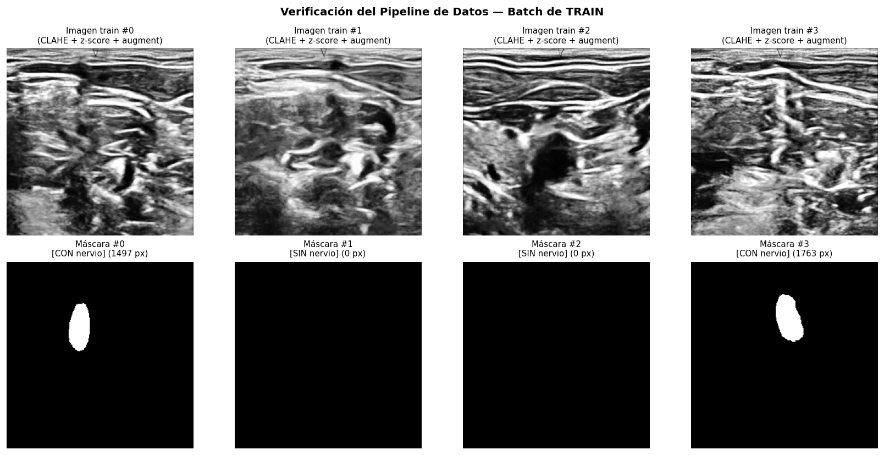
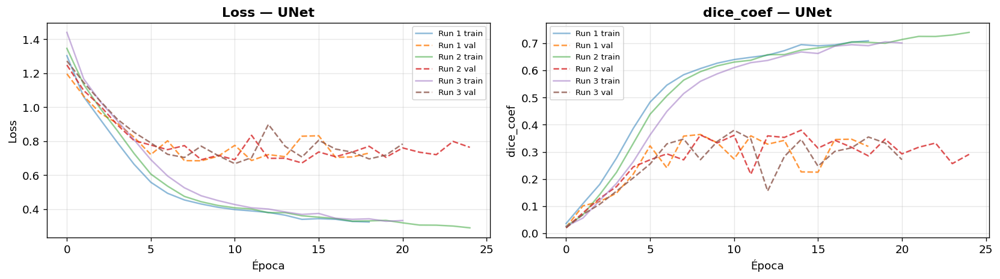
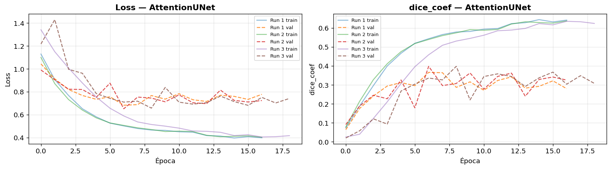
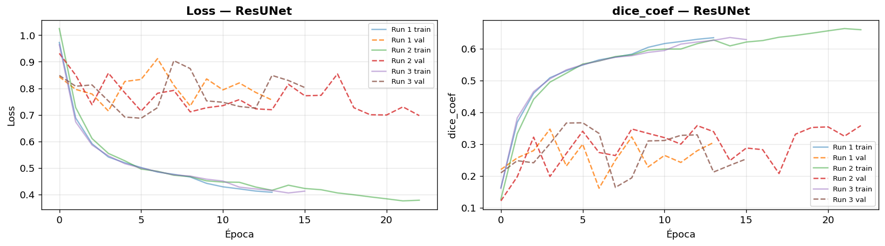

Implementación de Modelos#
import sys
import platform
print('═' * 60)
print('SISTEMA')
print('═' * 60)
print(f'Python : {sys.version.split()[0]}')
print(f'Sistema : {platform.system()} {platform.release()}')
print(f'Máquina : {platform.machine()}')
# ─── TensorFlow ─────────────────────────────────────────────────────
print('\n' + '═' * 60)
print('TENSORFLOW')
print('═' * 60)
try:
import tensorflow as tf
print(f' TensorFlow instalado: {tf.__version__}')
print(f' Keras version: {tf.keras.__version__}')
print(f' Built with CUDA: {tf.test.is_built_with_cuda()}')
gpus = tf.config.list_physical_devices('GPU')
print(f'\n GPUs detectadas por TF: {len(gpus)}')
for i, gpu in enumerate(gpus):
print(f' [{i}] {gpu.name}')
# Test rápido de ejecución en GPU
if len(gpus) > 0:
try:
with tf.device('/GPU:0'):
a = tf.random.normal((1000, 1000))
b = tf.random.normal((1000, 1000))
c = tf.matmul(a, b)
print(' Operación en GPU exitosa')
except Exception as e:
print(f' Error al ejecutar en GPU: {e}')
else:
print(' No se detectó GPU — se entrenará en CPU (muy lento)')
except ImportError:
print(' TensorFlow NO instalado')
# ─── PyTorch (informativo) ──────────────────────────────────────────
print('\n' + '═' * 60)
print('PYTORCH (informativo)')
print('═' * 60)
try:
import torch
print(f' PyTorch instalado: {torch.__version__}')
print(f' CUDA disponible: {torch.cuda.is_available()}')
if torch.cuda.is_available():
print(f' Dispositivo: {torch.cuda.get_device_name(0)}')
print(f' CUDA version: {torch.version.cuda}')
except ImportError:
print(' PyTorch no instalado (no pasa nada, usaremos TensorFlow)')
# ─── Librerías de imagen ────────────────────────────────────────────
print('\n' + '═' * 60)
print('LIBRERÍAS DE PROCESAMIENTO DE IMAGEN')
print('═' * 60)
for lib_name in ['numpy', 'pandas', 'matplotlib', 'cv2', 'tifffile',
'PIL', 'skimage', 'sklearn', 'scipy']:
try:
mod = __import__(lib_name)
ver = getattr(mod, '__version__', 'sin version')
print(f' {lib_name:12s} {ver}')
except ImportError:
print(f' {lib_name:12s} NO instalado')
════════════════════════════════════════════════════════════
SISTEMA
════════════════════════════════════════════════════════════
Python : 3.9.25
Sistema : Windows 10
Máquina : AMD64
════════════════════════════════════════════════════════════
TENSORFLOW
════════════════════════════════════════════════════════════
TensorFlow instalado: 2.10.1
Keras version: 2.10.0
Built with CUDA: True
GPUs detectadas por TF: 1
[0] /physical_device:GPU:0
Operación en GPU exitosa
════════════════════════════════════════════════════════════
PYTORCH (informativo)
════════════════════════════════════════════════════════════
PyTorch no instalado (no pasa nada, usaremos TensorFlow)
════════════════════════════════════════════════════════════
LIBRERÍAS DE PROCESAMIENTO DE IMAGEN
════════════════════════════════════════════════════════════
numpy 1.25.2
pandas 2.3.3
matplotlib 3.7.2
cv2 4.13.0
tifffile 2023.8.30
PIL 10.0.0
skimage 0.21.0
sklearn 1.3.0
scipy 1.11.2
# ═════════════════════════════════════════════════════════════════════
# IMPORTS Y CONFIGURACIÓN GLOBAL
# ═════════════════════════════════════════════════════════════════════
import os
import gc
import time
import random
import warnings
warnings.filterwarnings('ignore')
import numpy as np
import pandas as pd
import matplotlib.pyplot as plt
import tifffile
import cv2
from pathlib import Path
import tensorflow as tf
from tensorflow import keras
from tensorflow.keras import layers, models, optimizers, callbacks
from tensorflow.keras import backend as K
# ─── Memory growth para no tomar toda la VRAM ────────────────────────
gpus = tf.config.list_physical_devices('GPU')
for gpu in gpus:
try:
tf.config.experimental.set_memory_growth(gpu, True)
except RuntimeError as e:
print(e)
# ─── Reproducibilidad ────────────────────────────────────────────────
SEED = 42
random.seed(SEED)
np.random.seed(SEED)
tf.random.set_seed(SEED)
# ─── Estilo de plots ─────────────────────────────────────────────────
plt.rcParams['figure.dpi'] = 120
plt.rcParams['font.size'] = 11
print(' Imports y configuración listos')
print(f' GPU memory growth activado')
print(f' Seed: {SEED}')
Physical devices cannot be modified after being initialized
Imports y configuración listos
GPU memory growth activado
Seed: 42
# ═════════════════════════════════════════════════════════════════════
# RUTAS E HIPERPARÁMETROS DEL EXPERIMENTO
# ═════════════════════════════════════════════════════════════════════
# ─── RUTAS ────────────────────────────────────────────────────────────
DATA_DIR = Path(r'C:\Users\maria\OneDrive\Desktop\DEEP_LEARNING2\ProyectoUltrasound\ultrasound-nerve-segmentation')
TRAIN_DIR = DATA_DIR / 'train'
TEST_DIR = DATA_DIR / 'test'
EDA_CSV = DATA_DIR / 'df_eda_processed.csv'
NORM_CSV = DATA_DIR / 'norm_params.csv'
# Carpeta para resultados y pesos
RESULTS_DIR = DATA_DIR / 'results'
RESULTS_DIR.mkdir(exist_ok=True)
WEIGHTS_DIR = RESULTS_DIR / 'weights'
WEIGHTS_DIR.mkdir(exist_ok=True)
# ─── HIPERPARÁMETROS ─────────────────────────────────────────────────
IMG_HEIGHT = 256
IMG_WIDTH = 256
IMG_CHANNELS = 1
BATCH_SIZE = 8 # Bajar a 8 si aparece OOM en TU-Net
EPOCHS = 50
LR = 1e-4
N_RUNS = 3 # Mínimo 3 runs según el entregable
# ─── Verificación ────────────────────────────────────────────────────
print('═' * 60)
print('CONFIGURACIÓN DEL EXPERIMENTO')
print('═' * 60)
print(f'Imagen : {IMG_HEIGHT} x {IMG_WIDTH} x {IMG_CHANNELS}')
print(f'Batch size : {BATCH_SIZE}')
print(f'Epochs máximas : {EPOCHS}')
print(f'Learning rate : {LR}')
print(f'Runs por modelo : {N_RUNS}')
print(f'\nRutas:')
print(f' DATA_DIR : {DATA_DIR}')
print(f' RESULTS_DIR : {RESULTS_DIR}')
print(f' WEIGHTS_DIR : {WEIGHTS_DIR}')
print(f'\nArchivos del EDA:')
print(f' EDA CSV existe : {EDA_CSV.exists()}')
print(f' NORM CSV existe : {NORM_CSV.exists()}')
════════════════════════════════════════════════════════════
CONFIGURACIÓN DEL EXPERIMENTO
════════════════════════════════════════════════════════════
Imagen : 256 x 256 x 1
Batch size : 8
Epochs máximas : 50
Learning rate : 0.0001
Runs por modelo : 3
Rutas:
DATA_DIR : C:\Users\maria\OneDrive\Desktop\DEEP_LEARNING2\ProyectoUltrasound\ultrasound-nerve-segmentation
RESULTS_DIR : C:\Users\maria\OneDrive\Desktop\DEEP_LEARNING2\ProyectoUltrasound\ultrasound-nerve-segmentation\results
WEIGHTS_DIR : C:\Users\maria\OneDrive\Desktop\DEEP_LEARNING2\ProyectoUltrasound\ultrasound-nerve-segmentation\results\weights
Archivos del EDA:
EDA CSV existe : True
NORM CSV existe : True
# ═════════════════════════════════════════════════════════════════════
# CARGAR RESULTADOS DEL EDA Y PREPARAR SPLITS
# ═════════════════════════════════════════════════════════════════════
# ─── Cargar CSVs generados en el EDA ─────────────────────────────────
df = pd.read_csv(EDA_CSV)
norm_params = pd.read_csv(NORM_CSV)
NORM_MEAN = float(norm_params['mean'].iloc[0])
NORM_STD = float(norm_params['std'].iloc[0])
# ─── Reconstruir rutas completas de las imágenes ─────────────────────
df['img_path'] = df['stem'].apply(lambda s: str(TRAIN_DIR / f'{s}.tif'))
df['mask_path'] = df['stem'].apply(lambda s: str(TRAIN_DIR / f'{s}_mask.tif'))
# ─── Separar por split ───────────────────────────────────────────────
train_df = df[df['split'] == 'train'].reset_index(drop=True)
val_df = df[df['split'] == 'val'].reset_index(drop=True)
test_df = df[df['split'] == 'test'].reset_index(drop=True)
# ─── Reporte ─────────────────────────────────────────────────────────
print('═' * 60)
print('DATOS CARGADOS')
print('═' * 60)
print(f'Total frames: {len(df):,}')
print(f'\nDistribución por split:')
summary = df.groupby('split').agg(
n_frames=('stem', 'count'),
n_patients=('patient_id', 'nunique'),
nerve_rate=('nerve_present', 'mean')
).round(3)
print(summary.to_string())
print(f'\nParámetros de normalización (del EDA):')
print(f' mean = {NORM_MEAN:.4f}')
print(f' std = {NORM_STD:.4f}')
# Verificación rápida: las rutas existen
sample_img = Path(train_df['img_path'].iloc[0])
sample_mask = Path(train_df['mask_path'].iloc[0])
print(f'\nVerificación de rutas (primer archivo de train):')
print(f' Imagen existe : {sample_img.exists()} ({sample_img.name})')
print(f' Máscara existe : {sample_mask.exists()} ({sample_mask.name})')
════════════════════════════════════════════════════════════
DATOS CARGADOS
════════════════════════════════════════════════════════════
Total frames: 5,635
Distribución por split:
n_frames n_patients nerve_rate
split
test 960 8 0.343
train 3836 32 0.439
val 839 7 0.371
Parámetros de normalización (del EDA):
mean = 0.3877
std = 0.2181
Verificación de rutas (primer archivo de train):
Imagen existe : True (3_1.tif)
Máscara existe : True (3_1_mask.tif)
# ═════════════════════════════════════════════════════════════════════
# PIPELINE DE DATOS (tf.data)
# Aplica on-the-fly: CLAHE + resize + z-score + augmentation
# ═════════════════════════════════════════════════════════════════════
# Instancia global de CLAHE (parámetros estándar para ultrasonido)
_CLAHE = cv2.createCLAHE(clipLimit=2.0, tileGridSize=(8, 8))
def load_image_mask(img_path_bytes, mask_path_bytes):
"""
Carga un par imagen-máscara .tif y aplica todo el preprocesamiento
definido en el EDA: CLAHE → resize → z-score → binarización.
"""
img_path = img_path_bytes.decode('utf-8')
mask_path = mask_path_bytes.decode('utf-8')
# ─── 1. Leer .tif ────────────────────────────────────────────────
img = tifffile.imread(img_path)
mask = tifffile.imread(mask_path)
# ─── 2. Convertir a uint8 si es necesario ────────────────────────
if img.dtype != np.uint8:
img = (img / max(img.max(), 1) * 255).astype(np.uint8)
# ─── 3. CLAHE para mejorar contraste local ───────────────────────
img = _CLAHE.apply(img)
# ─── 4. Resize (bilinear imagen, nearest máscara) ────────────────
img = cv2.resize(img, (IMG_WIDTH, IMG_HEIGHT), interpolation=cv2.INTER_LINEAR)
mask = cv2.resize(mask, (IMG_WIDTH, IMG_HEIGHT), interpolation=cv2.INTER_NEAREST)
# ─── 5. Normalización z-score con parámetros del EDA ─────────────
img = img.astype(np.float32) / 255.0
img = (img - NORM_MEAN) / NORM_STD
# ─── 6. Máscara binaria {0, 1} ───────────────────────────────────
mask = (mask > 0).astype(np.float32)
# Agregar dimensión de canal: (H, W) → (H, W, 1)
img = np.expand_dims(img, axis=-1)
mask = np.expand_dims(mask, axis=-1)
return img, mask
def tf_load_image_mask(img_path, mask_path):
"""Wrapper para usar load_image_mask dentro de tf.data."""
img, mask = tf.numpy_function(
load_image_mask,
inp=[img_path, mask_path],
Tout=[tf.float32, tf.float32]
)
img.set_shape((IMG_HEIGHT, IMG_WIDTH, IMG_CHANNELS))
mask.set_shape((IMG_HEIGHT, IMG_WIDTH, 1))
return img, mask
def augment(img, mask):
"""
Data augmentation solo para train: flips + ruido leve.
- Flip horizontal: 50% probabilidad
- Flip vertical: 20% (menos común en ultrasonido)
- Ruido gaussiano: 50% con std=0.03 (simula speckle residual)
"""
if tf.random.uniform(()) > 0.5:
img = tf.image.flip_left_right(img)
mask = tf.image.flip_left_right(mask)
if tf.random.uniform(()) > 0.8:
img = tf.image.flip_up_down(img)
mask = tf.image.flip_up_down(mask)
if tf.random.uniform(()) > 0.5:
noise = tf.random.normal(tf.shape(img), mean=0.0, stddev=0.03)
img = img + noise
return img, mask
def build_dataset(dataframe, batch_size=BATCH_SIZE, training=False, shuffle=False):
"""
Construye un tf.data.Dataset a partir de un DataFrame con columnas
'img_path' y 'mask_path'.
- training=True → aplica data augmentation
- shuffle=True → mezcla los datos (solo para train)
"""
ds = tf.data.Dataset.from_tensor_slices((
dataframe['img_path'].values,
dataframe['mask_path'].values
))
if shuffle:
ds = ds.shuffle(buffer_size=min(len(dataframe), 1000),
seed=SEED, reshuffle_each_iteration=True)
ds = ds.map(tf_load_image_mask, num_parallel_calls=tf.data.AUTOTUNE)
if training:
ds = ds.map(augment, num_parallel_calls=tf.data.AUTOTUNE)
ds = ds.batch(batch_size).prefetch(tf.data.AUTOTUNE)
return ds
print(' Pipeline de datos definido:')
print(' • load_image_mask — carga + CLAHE + resize + normalización')
print(' • tf_load_image_mask — wrapper para tf.data')
print(' • augment — flips + ruido (solo en train)')
print(' • build_dataset — constructor principal del Dataset')
Pipeline de datos definido:
• load_image_mask — carga + CLAHE + resize + normalización
• tf_load_image_mask — wrapper para tf.data
• augment — flips + ruido (solo en train)
• build_dataset — constructor principal del Dataset
# ═════════════════════════════════════════════════════════════════════
# VERIFICACIÓN DEL PIPELINE
# Confirmar que CLAHE + resize + normalización + augment funcionan bien
# ═════════════════════════════════════════════════════════════════════
# ─── Construir un dataset pequeño para inspeccionar ──────────────────
sample_train = build_dataset(train_df.head(16), batch_size=4, training=True, shuffle=False)
sample_test = build_dataset(test_df.head(8), batch_size=4, training=False, shuffle=False)
# ─── Cargar un batch de cada uno ─────────────────────────────────────
for imgs_tr, masks_tr in sample_train.take(1):
break
for imgs_te, masks_te in sample_test.take(1):
break
# ─── Reporte de shapes y rangos ──────────────────────────────────────
print('═' * 60)
print('VERIFICACIÓN DEL PIPELINE')
print('═' * 60)
print(f'\nBatch de TRAIN (con augmentation):')
print(f' Imagen shape: {imgs_tr.shape} dtype: {imgs_tr.dtype}')
print(f' Máscara shape: {masks_tr.shape} dtype: {masks_tr.dtype}')
print(f' Imagen min/max: {imgs_tr.numpy().min():.3f} / {imgs_tr.numpy().max():.3f}')
print(f' Imagen mean/std: {imgs_tr.numpy().mean():.3f} / {imgs_tr.numpy().std():.3f}')
print(f' Máscara valores únicos: {np.unique(masks_tr.numpy())}')
print(f'\nBatch de TEST (sin augmentation):')
print(f' Imagen shape: {imgs_te.shape} dtype: {imgs_te.dtype}')
print(f' Imagen min/max: {imgs_te.numpy().min():.3f} / {imgs_te.numpy().max():.3f}')
# ─── Visualizar 4 muestras de train ──────────────────────────────────
fig, axes = plt.subplots(2, 4, figsize=(14, 7))
for i in range(4):
axes[0, i].imshow(imgs_tr[i, :, :, 0], cmap='gray')
axes[0, i].set_title(f'Imagen train #{i}\n(CLAHE + z-score + augment)', fontsize=9)
axes[0, i].axis('off')
axes[1, i].imshow(masks_tr[i, :, :, 0], cmap='gray')
mask_sum = int(masks_tr[i].numpy().sum())
label = 'CON nervio' if mask_sum > 0 else 'SIN nervio'
axes[1, i].set_title(f'Máscara #{i}\n[{label}] ({mask_sum} px)', fontsize=9)
axes[1, i].axis('off')
plt.suptitle('Verificación del Pipeline de Datos — Batch de TRAIN',
fontsize=12, fontweight='bold')
plt.tight_layout()
plt.show()
print('\n Si las imágenes se ven con buen contraste y las máscaras se alinean → pipeline OK')
════════════════════════════════════════════════════════════
VERIFICACIÓN DEL PIPELINE
════════════════════════════════════════════════════════════
Batch de TRAIN (con augmentation):
Imagen shape: (4, 256, 256, 1) dtype: <dtype: 'float32'>
Máscara shape: (4, 256, 256, 1) dtype: <dtype: 'float32'>
Imagen min/max: -1.839 / 2.888
Imagen mean/std: 0.241 / 1.227
Máscara valores únicos: [0. 1.]
Batch de TEST (sin augmentation):
Imagen shape: (4, 256, 256, 1) dtype: <dtype: 'float32'>
Imagen min/max: -1.778 / 2.808

Si las imágenes se ven con buen contraste y las máscaras se alinean → pipeline OK
# ═════════════════════════════════════════════════════════════════════
# MÉTRICAS Y FUNCIONES DE PÉRDIDA
# Dice coefficient (métrica principal de Kaggle)
# Dice Loss suavizado + BCE+Dice para manejar contradictorios
# ═════════════════════════════════════════════════════════════════════
SMOOTH = 1.0 # Factor de suavizado (robusto ante etiquetas contradictorias)
def dice_coef(y_true, y_pred, smooth=SMOOTH):
"""
Dice Coefficient — métrica oficial de la competencia de Kaggle.
Dice = (2 * |X ∩ Y|) / (|X| + |Y|)
El smooth=1 evita división por cero cuando ambas máscaras son vacías
y hace la métrica más robusta ante etiquetas ruidosas.
"""
y_true_f = K.flatten(K.cast(y_true, 'float32'))
y_pred_f = K.flatten(K.cast(y_pred, 'float32'))
intersection = K.sum(y_true_f * y_pred_f)
return (2.0 * intersection + smooth) / (K.sum(y_true_f) + K.sum(y_pred_f) + smooth)
def dice_loss(y_true, y_pred):
"""Dice Loss = 1 - Dice. Función de pérdida diferenciable."""
return 1.0 - dice_coef(y_true, y_pred)
def bce_dice_loss(y_true, y_pred):
"""
Combinación BCE + Dice Loss.
- BCE estabiliza el entrenamiento en las primeras épocas
- Dice optimiza directamente la métrica de evaluación
- Combinación recomendada para datasets con ~60% de máscaras vacías
"""
y_true = K.cast(y_true, 'float32')
y_pred = K.cast(y_pred, 'float32')
bce = keras.losses.binary_crossentropy(y_true, y_pred)
return K.mean(bce) + dice_loss(y_true, y_pred)
def iou_metric(y_true, y_pred, threshold=0.5, smooth=SMOOTH):
"""
IoU / Jaccard Index — métrica complementaria.
IoU = |X ∩ Y| / |X ∪ Y|
Es más estricta que Dice y útil para comparar modelos.
"""
y_true = K.cast(y_true, 'float32')
y_pred_bin = K.cast(y_pred > threshold, 'float32')
intersection = K.sum(y_true * y_pred_bin)
union = K.sum(y_true) + K.sum(y_pred_bin) - intersection
return (intersection + smooth) / (union + smooth)
def pixel_accuracy(y_true, y_pred, threshold=0.5):
"""Proporción de píxeles correctamente clasificados."""
y_true = K.cast(y_true, 'float32')
y_pred_bin = K.cast(y_pred > threshold, 'float32')
correct = K.cast(K.equal(y_true, y_pred_bin), 'float32')
return K.mean(correct)
print(' Métricas y pérdidas definidas:')
print(' • dice_coef — métrica principal (Kaggle)')
print(' • iou_metric — métrica complementaria')
print(' • pixel_accuracy — métrica secundaria')
print(' • dice_loss — pérdida simple')
print(' • bce_dice_loss — pérdida combinada (recomendada)')
Métricas y pérdidas definidas:
• dice_coef — métrica principal (Kaggle)
• iou_metric — métrica complementaria
• pixel_accuracy — métrica secundaria
• dice_loss — pérdida simple
• bce_dice_loss — pérdida combinada (recomendada)
# ═════════════════════════════════════════════════════════════════════
# LOOP DE ENTRENAMIENTO GENÉRICO
# Entrena un modelo N veces con distintas semillas y reporta estadísticas
# Requisito del entregable: mínimo 3 runs + media ± std
# ═════════════════════════════════════════════════════════════════════
def train_model(model_builder, model_name,
train_df, val_df, test_df,
n_runs=N_RUNS, epochs=EPOCHS, batch_size=BATCH_SIZE, lr=LR,
loss_fn=bce_dice_loss, verbose_fit=2):
"""
Entrena un modelo N veces y retorna resultados agregados.
Args:
model_builder : función sin argumentos que retorna un modelo Keras SIN compilar
model_name : identificador string del modelo (usado en nombres de archivos)
train/val/test: DataFrames con columnas 'img_path' y 'mask_path'
n_runs : número de ejecuciones con distintas semillas
epochs : épocas máximas por run (EarlyStopping puede cortar antes)
loss_fn : función de pérdida (default: bce_dice_loss)
Returns:
dict con:
- 'model' : nombre del modelo
- 'runs' : lista de dicts por run
- 'dice_mean' : media del Dice en test
- 'dice_std' : std del Dice en test
- 'iou_mean' : media del IoU en test
- 'iou_std' : std del IoU en test
- 'time_mean' : tiempo promedio de entrenamiento
- 'n_params' : número de parámetros del modelo
- 'histories' : lista de histories de Keras (para curvas de entrenamiento)
"""
print('═' * 65)
print(f'ENTRENANDO: {model_name} ({n_runs} runs)')
print('═' * 65)
# ─── Datasets de validación y test (iguales para todos los runs) ─
val_ds = build_dataset(val_df, batch_size=batch_size, training=False, shuffle=False)
test_ds = build_dataset(test_df, batch_size=batch_size, training=False, shuffle=False)
runs_results = []
histories = []
n_params = None
for run_idx in range(n_runs):
print(f'\n── Run {run_idx + 1}/{n_runs} ' + '─' * 50)
# ─── Fijar semillas distintas por run para reproducibilidad ──
run_seed = SEED + run_idx
tf.random.set_seed(run_seed)
np.random.seed(run_seed)
random.seed(run_seed)
# ─── Rebuild del dataset de train para shuffle distinto ──────
train_ds = build_dataset(train_df, batch_size=batch_size,
training=True, shuffle=True)
# ─── Instanciar y compilar modelo nuevo ──────────────────────
model = model_builder()
model.compile(
optimizer=optimizers.Adam(learning_rate=lr),
loss=loss_fn,
metrics=[dice_coef, iou_metric]
)
if n_params is None:
n_params = model.count_params()
print(f' Parámetros del modelo: {n_params:,}')
# ─── Callbacks ───────────────────────────────────────────────
ckpt_path = WEIGHTS_DIR / f'{model_name}_run{run_idx+1}.weights.h5'
cbs = [
callbacks.ModelCheckpoint(
filepath=str(ckpt_path),
monitor='val_dice_coef',
mode='max',
save_best_only=True,
save_weights_only=True,
verbose=0
),
callbacks.EarlyStopping(
monitor='val_dice_coef',
mode='max',
patience=10,
restore_best_weights=True,
verbose=1
),
callbacks.ReduceLROnPlateau(
monitor='val_dice_coef',
mode='max',
factor=0.5,
patience=5,
min_lr=1e-7,
verbose=0
)
]
# ─── Entrenar ────────────────────────────────────────────────
t0 = time.time()
history = model.fit(
train_ds,
epochs=epochs,
validation_data=val_ds,
callbacks=cbs,
verbose=verbose_fit
)
train_time = time.time() - t0
# ─── Evaluar en test ─────────────────────────────────────────
test_metrics = model.evaluate(test_ds, verbose=0)
test_loss, test_dice, test_iou = test_metrics
runs_results.append({
'run' : run_idx + 1,
'test_dice' : float(test_dice),
'test_iou' : float(test_iou),
'test_loss' : float(test_loss),
'train_time' : train_time,
'n_epochs' : len(history.history['loss'])
})
histories.append(history.history)
print(f' → Test Dice : {test_dice:.4f}')
print(f' → Test IoU : {test_iou:.4f}')
print(f' → Tiempo : {train_time/60:.1f} min ({len(history.history["loss"])} épocas)')
# ─── Limpiar memoria ─────────────────────────────────────────
del model
K.clear_session()
gc.collect()
# ─── Resumen estadístico ─────────────────────────────────────────
runs_df = pd.DataFrame(runs_results)
summary = {
'model' : model_name,
'runs' : runs_results,
'histories' : histories,
'n_params' : n_params,
'dice_mean' : float(runs_df['test_dice'].mean()),
'dice_std' : float(runs_df['test_dice'].std()),
'iou_mean' : float(runs_df['test_iou'].mean()),
'iou_std' : float(runs_df['test_iou'].std()),
'time_mean' : float(runs_df['train_time'].mean()),
'time_std' : float(runs_df['train_time'].std()),
}
print('\n' + '═' * 65)
print(f'RESULTADOS FINALES — {model_name}')
print('═' * 65)
print(f'Dice (test): {summary["dice_mean"]:.4f} ± {summary["dice_std"]:.4f}')
print(f'IoU (test): {summary["iou_mean"]:.4f} ± {summary["iou_std"]:.4f}')
print(f'Parámetros : {summary["n_params"]:,}')
print(f'Tiempo medio: {summary["time_mean"]/60:.1f} min por run')
return summary
def plot_training_curves(results, metric='dice_coef'):
"""Visualiza las curvas de entrenamiento de todos los runs de un modelo."""
fig, axes = plt.subplots(1, 2, figsize=(14, 4))
for i, history in enumerate(results['histories']):
axes[0].plot(history['loss'], alpha=0.5, label=f'Run {i+1} train')
axes[0].plot(history['val_loss'], alpha=0.8, linestyle='--', label=f'Run {i+1} val')
axes[1].plot(history[metric], alpha=0.5, label=f'Run {i+1} train')
axes[1].plot(history[f'val_{metric}'], alpha=0.8, linestyle='--', label=f'Run {i+1} val')
axes[0].set_title(f'Loss — {results["model"]}', fontweight='bold')
axes[0].set_xlabel('Época')
axes[0].set_ylabel('Loss')
axes[0].legend(fontsize=8)
axes[0].grid(alpha=0.3)
axes[1].set_title(f'{metric} — {results["model"]}', fontweight='bold')
axes[1].set_xlabel('Época')
axes[1].set_ylabel(metric)
axes[1].legend(fontsize=8)
axes[1].grid(alpha=0.3)
plt.tight_layout()
plt.show()
print(' Funciones de entrenamiento definidas:')
print(' • train_model — entrena N runs y retorna estadísticas')
print(' • plot_training_curves — visualiza curvas de entrenamiento')
Funciones de entrenamiento definidas:
• train_model — entrena N runs y retorna estadísticas
• plot_training_curves — visualiza curvas de entrenamiento
# ═════════════════════════════════════════════════════════════════════
# MODELO 1 — U-NET ORIGINAL (BASELINE)
# ─────────────────────────────────────────────────────────────────────
# Referencia: Ronneberger et al. (2015)
# "U-Net: Convolutional Networks for Biomedical Image Segmentation"
# MICCAI 2015 — arXiv:1505.04597
#
# Arquitectura: encoder-decoder con skip connections
# - Encoder: 4 niveles de downsampling (Conv-Conv-Pool)
# - Bottleneck
# - Decoder: 4 niveles de upsampling (Upconv-Concat-Conv-Conv)
# ═════════════════════════════════════════════════════════════════════
def conv_block(x, filters, kernel_size=3, activation='relu', name=None):
"""Bloque estándar de U-Net: Conv → BN → Activation (x2)."""
x = layers.Conv2D(filters, kernel_size, padding='same',
kernel_initializer='he_normal',
name=f'{name}_conv1' if name else None)(x)
x = layers.BatchNormalization(name=f'{name}_bn1' if name else None)(x)
x = layers.Activation(activation, name=f'{name}_act1' if name else None)(x)
x = layers.Conv2D(filters, kernel_size, padding='same',
kernel_initializer='he_normal',
name=f'{name}_conv2' if name else None)(x)
x = layers.BatchNormalization(name=f'{name}_bn2' if name else None)(x)
x = layers.Activation(activation, name=f'{name}_act2' if name else None)(x)
return x
def build_unet(input_shape=(IMG_HEIGHT, IMG_WIDTH, IMG_CHANNELS),
base_filters=32, depth=4):
"""
U-Net original (Ronneberger et al. 2015).
Args:
input_shape : shape de entrada (H, W, C)
base_filters : filtros en el primer nivel (se duplican por nivel)
depth : profundidad del encoder (default: 4 niveles)
Returns:
modelo Keras sin compilar
"""
inputs = layers.Input(shape=input_shape, name='input')
# ─── ENCODER ─────────────────────────────────────────────────────
skip_connections = []
x = inputs
for level in range(depth):
filters = base_filters * (2 ** level)
x = conv_block(x, filters, name=f'enc{level+1}')
skip_connections.append(x)
x = layers.MaxPooling2D(pool_size=(2, 2), name=f'pool{level+1}')(x)
# ─── BOTTLENECK ──────────────────────────────────────────────────
bottleneck_filters = base_filters * (2 ** depth)
x = conv_block(x, bottleneck_filters, name='bottleneck')
# ─── DECODER ─────────────────────────────────────────────────────
for level in reversed(range(depth)):
filters = base_filters * (2 ** level)
x = layers.Conv2DTranspose(filters, kernel_size=2, strides=2,
padding='same', name=f'up{level+1}')(x)
x = layers.Concatenate(name=f'concat{level+1}')([x, skip_connections[level]])
x = conv_block(x, filters, name=f'dec{level+1}')
# ─── OUTPUT ──────────────────────────────────────────────────────
# dtype='float32' explícito para compatibilidad con mixed precision
# (aunque no la estamos usando ahora, es buena práctica)
outputs = layers.Conv2D(1, kernel_size=1, activation='sigmoid',
dtype='float32', name='output')(x)
model = models.Model(inputs=inputs, outputs=outputs, name='U-Net')
return model
# ─── Verificación de la arquitectura ─────────────────────────────────
model_test = build_unet()
print('═' * 60)
print('ARQUITECTURA U-NET (BASELINE)')
print('═' * 60)
print(f'Input shape : {model_test.input_shape}')
print(f'Output shape : {model_test.output_shape}')
print(f'Parámetros : {model_test.count_params():,}')
print(f'Profundidad : 4 niveles')
print(f'Filtros base : 32 → 64 → 128 → 256 → 512 (bottleneck)')
# Resumen abreviado
model_test.summary(line_length=80)
# Limpiar
del model_test
K.clear_session()
gc.collect()
print('\n Arquitectura U-Net definida y verificada')
════════════════════════════════════════════════════════════
ARQUITECTURA U-NET (BASELINE)
════════════════════════════════════════════════════════════
Input shape : (None, 256, 256, 1)
Output shape : (None, 256, 256, 1)
Parámetros : 7,771,297
Profundidad : 4 niveles
Filtros base : 32 → 64 → 128 → 256 → 512 (bottleneck)
Model: "U-Net"
________________________________________________________________________________
Layer (type) Output Shape Param # Connected to
================================================================================
input (InputLayer) [(None, 256, 256 0 []
, 1)]
enc1_conv1 (Conv2D) (None, 256, 256, 320 ['input[0][0]']
32)
enc1_bn1 (BatchNormaliza (None, 256, 256, 128 ['enc1_conv1[0][0]']
tion) 32)
enc1_act1 (Activation) (None, 256, 256, 0 ['enc1_bn1[0][0]']
32)
enc1_conv2 (Conv2D) (None, 256, 256, 9248 ['enc1_act1[0][0]']
32)
enc1_bn2 (BatchNormaliza (None, 256, 256, 128 ['enc1_conv2[0][0]']
tion) 32)
enc1_act2 (Activation) (None, 256, 256, 0 ['enc1_bn2[0][0]']
32)
pool1 (MaxPooling2D) (None, 128, 128, 0 ['enc1_act2[0][0]']
32)
enc2_conv1 (Conv2D) (None, 128, 128, 18496 ['pool1[0][0]']
64)
enc2_bn1 (BatchNormaliza (None, 128, 128, 256 ['enc2_conv1[0][0]']
tion) 64)
enc2_act1 (Activation) (None, 128, 128, 0 ['enc2_bn1[0][0]']
64)
enc2_conv2 (Conv2D) (None, 128, 128, 36928 ['enc2_act1[0][0]']
64)
enc2_bn2 (BatchNormaliza (None, 128, 128, 256 ['enc2_conv2[0][0]']
tion) 64)
enc2_act2 (Activation) (None, 128, 128, 0 ['enc2_bn2[0][0]']
64)
pool2 (MaxPooling2D) (None, 64, 64, 6 0 ['enc2_act2[0][0]']
4)
enc3_conv1 (Conv2D) (None, 64, 64, 1 73856 ['pool2[0][0]']
28)
enc3_bn1 (BatchNormaliza (None, 64, 64, 1 512 ['enc3_conv1[0][0]']
tion) 28)
enc3_act1 (Activation) (None, 64, 64, 1 0 ['enc3_bn1[0][0]']
28)
enc3_conv2 (Conv2D) (None, 64, 64, 1 147584 ['enc3_act1[0][0]']
28)
enc3_bn2 (BatchNormaliza (None, 64, 64, 1 512 ['enc3_conv2[0][0]']
tion) 28)
enc3_act2 (Activation) (None, 64, 64, 1 0 ['enc3_bn2[0][0]']
28)
pool3 (MaxPooling2D) (None, 32, 32, 1 0 ['enc3_act2[0][0]']
28)
enc4_conv1 (Conv2D) (None, 32, 32, 2 295168 ['pool3[0][0]']
56)
enc4_bn1 (BatchNormaliza (None, 32, 32, 2 1024 ['enc4_conv1[0][0]']
tion) 56)
enc4_act1 (Activation) (None, 32, 32, 2 0 ['enc4_bn1[0][0]']
56)
enc4_conv2 (Conv2D) (None, 32, 32, 2 590080 ['enc4_act1[0][0]']
56)
enc4_bn2 (BatchNormaliza (None, 32, 32, 2 1024 ['enc4_conv2[0][0]']
tion) 56)
enc4_act2 (Activation) (None, 32, 32, 2 0 ['enc4_bn2[0][0]']
56)
pool4 (MaxPooling2D) (None, 16, 16, 2 0 ['enc4_act2[0][0]']
56)
bottleneck_conv1 (Conv2D (None, 16, 16, 5 1180160 ['pool4[0][0]']
) 12)
bottleneck_bn1 (BatchNor (None, 16, 16, 5 2048 ['bottleneck_conv1[0][0]']
malization) 12)
bottleneck_act1 (Activat (None, 16, 16, 5 0 ['bottleneck_bn1[0][0]']
ion) 12)
bottleneck_conv2 (Conv2D (None, 16, 16, 5 2359808 ['bottleneck_act1[0][0]']
) 12)
bottleneck_bn2 (BatchNor (None, 16, 16, 5 2048 ['bottleneck_conv2[0][0]']
malization) 12)
bottleneck_act2 (Activat (None, 16, 16, 5 0 ['bottleneck_bn2[0][0]']
ion) 12)
up4 (Conv2DTranspose) (None, 32, 32, 2 524544 ['bottleneck_act2[0][0]']
56)
concat4 (Concatenate) (None, 32, 32, 5 0 ['up4[0][0]',
12) 'enc4_act2[0][0]']
dec4_conv1 (Conv2D) (None, 32, 32, 2 1179904 ['concat4[0][0]']
56)
dec4_bn1 (BatchNormaliza (None, 32, 32, 2 1024 ['dec4_conv1[0][0]']
tion) 56)
dec4_act1 (Activation) (None, 32, 32, 2 0 ['dec4_bn1[0][0]']
56)
dec4_conv2 (Conv2D) (None, 32, 32, 2 590080 ['dec4_act1[0][0]']
56)
dec4_bn2 (BatchNormaliza (None, 32, 32, 2 1024 ['dec4_conv2[0][0]']
tion) 56)
dec4_act2 (Activation) (None, 32, 32, 2 0 ['dec4_bn2[0][0]']
56)
up3 (Conv2DTranspose) (None, 64, 64, 1 131200 ['dec4_act2[0][0]']
28)
concat3 (Concatenate) (None, 64, 64, 2 0 ['up3[0][0]',
56) 'enc3_act2[0][0]']
dec3_conv1 (Conv2D) (None, 64, 64, 1 295040 ['concat3[0][0]']
28)
dec3_bn1 (BatchNormaliza (None, 64, 64, 1 512 ['dec3_conv1[0][0]']
tion) 28)
dec3_act1 (Activation) (None, 64, 64, 1 0 ['dec3_bn1[0][0]']
28)
dec3_conv2 (Conv2D) (None, 64, 64, 1 147584 ['dec3_act1[0][0]']
28)
dec3_bn2 (BatchNormaliza (None, 64, 64, 1 512 ['dec3_conv2[0][0]']
tion) 28)
dec3_act2 (Activation) (None, 64, 64, 1 0 ['dec3_bn2[0][0]']
28)
up2 (Conv2DTranspose) (None, 128, 128, 32832 ['dec3_act2[0][0]']
64)
concat2 (Concatenate) (None, 128, 128, 0 ['up2[0][0]',
128) 'enc2_act2[0][0]']
dec2_conv1 (Conv2D) (None, 128, 128, 73792 ['concat2[0][0]']
64)
dec2_bn1 (BatchNormaliza (None, 128, 128, 256 ['dec2_conv1[0][0]']
tion) 64)
dec2_act1 (Activation) (None, 128, 128, 0 ['dec2_bn1[0][0]']
64)
dec2_conv2 (Conv2D) (None, 128, 128, 36928 ['dec2_act1[0][0]']
64)
dec2_bn2 (BatchNormaliza (None, 128, 128, 256 ['dec2_conv2[0][0]']
tion) 64)
dec2_act2 (Activation) (None, 128, 128, 0 ['dec2_bn2[0][0]']
64)
up1 (Conv2DTranspose) (None, 256, 256, 8224 ['dec2_act2[0][0]']
32)
concat1 (Concatenate) (None, 256, 256, 0 ['up1[0][0]',
64) 'enc1_act2[0][0]']
dec1_conv1 (Conv2D) (None, 256, 256, 18464 ['concat1[0][0]']
32)
dec1_bn1 (BatchNormaliza (None, 256, 256, 128 ['dec1_conv1[0][0]']
tion) 32)
dec1_act1 (Activation) (None, 256, 256, 0 ['dec1_bn1[0][0]']
32)
dec1_conv2 (Conv2D) (None, 256, 256, 9248 ['dec1_act1[0][0]']
32)
dec1_bn2 (BatchNormaliza (None, 256, 256, 128 ['dec1_conv2[0][0]']
tion) 32)
dec1_act2 (Activation) (None, 256, 256, 0 ['dec1_bn2[0][0]']
32)
output (Conv2D) (None, 256, 256, 33 ['dec1_act2[0][0]']
1)
================================================================================
Total params: 7,771,297
Trainable params: 7,765,409
Non-trainable params: 5,888
________________________________________________________________________________
Arquitectura U-Net definida y verificada
if 'all_results' not in globals():
all_results = {}
# ═════════════════════════════════════════════════════════════════════
# ENTRENAMIENTO — MODELO 1: U-NET BASELINE
# ═════════════════════════════════════════════════════════════════════
# Diccionario global para guardar resultados de TODOS los modelos
# (se va llenando conforme entrenemos cada uno)
if 'all_results' not in globals():
all_results = {}
# ─── Entrenar U-Net ──────────────────────────────────────────────────
results_unet = train_model(
model_builder = build_unet,
model_name = 'UNet',
train_df = train_df,
val_df = val_df,
test_df = test_df,
n_runs = N_RUNS,
epochs = EPOCHS,
batch_size = BATCH_SIZE,
lr = LR,
loss_fn = bce_dice_loss
)
# Guardar en el diccionario global
all_results['UNet'] = results_unet
# ─── Guardar resultados a disco (por si acaso) ───────────────────────
import json
results_to_save = {
'model' : results_unet['model'],
'runs' : results_unet['runs'],
'n_params' : results_unet['n_params'],
'dice_mean' : results_unet['dice_mean'],
'dice_std' : results_unet['dice_std'],
'iou_mean' : results_unet['iou_mean'],
'iou_std' : results_unet['iou_std'],
'time_mean' : results_unet['time_mean'],
'time_std' : results_unet['time_std'],
}
with open(RESULTS_DIR / 'UNet_results.json', 'w') as f:
json.dump(results_to_save, f, indent=2)
print(f'\n Resultados guardados en: {RESULTS_DIR / "UNet_results.json"}')
═════════════════════════════════════════════════════════════════
ENTRENANDO: UNet (3 runs)
═════════════════════════════════════════════════════════════════
── Run 1/3 ──────────────────────────────────────────────────
Parámetros del modelo: 7,771,297
Epoch 1/50
480/480 - 186s - loss: 1.3038 - dice_coef: 0.0361 - iou_metric: 0.0646 - val_loss: 1.1970 - val_dice_coef: 0.0224 - val_iou_metric: 0.1236 - lr: 1.0000e-04 - 186s/epoch - 387ms/step
Epoch 2/50
480/480 - 220s - loss: 1.0619 - dice_coef: 0.1092 - iou_metric: 0.3370 - val_loss: 1.0661 - val_dice_coef: 0.1010 - val_iou_metric: 0.2088 - lr: 1.0000e-04 - 220s/epoch - 458ms/step
Epoch 3/50
480/480 - 230s - loss: 0.9269 - dice_coef: 0.1801 - iou_metric: 0.3852 - val_loss: 0.9646 - val_dice_coef: 0.1170 - val_iou_metric: 0.2069 - lr: 1.0000e-04 - 230s/epoch - 480ms/step
Epoch 4/50
480/480 - 203s - loss: 0.7928 - dice_coef: 0.2769 - iou_metric: 0.4167 - val_loss: 0.9055 - val_dice_coef: 0.1480 - val_iou_metric: 0.2658 - lr: 1.0000e-04 - 203s/epoch - 424ms/step
Epoch 5/50
480/480 - 170s - loss: 0.6643 - dice_coef: 0.3866 - iou_metric: 0.4430 - val_loss: 0.8236 - val_dice_coef: 0.2181 - val_iou_metric: 0.3038 - lr: 1.0000e-04 - 170s/epoch - 353ms/step
Epoch 6/50
480/480 - 134s - loss: 0.5582 - dice_coef: 0.4830 - iou_metric: 0.4700 - val_loss: 0.7213 - val_dice_coef: 0.3222 - val_iou_metric: 0.3272 - lr: 1.0000e-04 - 134s/epoch - 280ms/step
Epoch 7/50
480/480 - 138s - loss: 0.4930 - dice_coef: 0.5457 - iou_metric: 0.4817 - val_loss: 0.8026 - val_dice_coef: 0.2411 - val_iou_metric: 0.2537 - lr: 1.0000e-04 - 138s/epoch - 287ms/step
Epoch 8/50
480/480 - 138s - loss: 0.4539 - dice_coef: 0.5840 - iou_metric: 0.4911 - val_loss: 0.6856 - val_dice_coef: 0.3579 - val_iou_metric: 0.3323 - lr: 1.0000e-04 - 138s/epoch - 287ms/step
Epoch 9/50
480/480 - 136s - loss: 0.4300 - dice_coef: 0.6068 - iou_metric: 0.4990 - val_loss: 0.6848 - val_dice_coef: 0.3640 - val_iou_metric: 0.3022 - lr: 1.0000e-04 - 136s/epoch - 283ms/step
Epoch 10/50
480/480 - 138s - loss: 0.4107 - dice_coef: 0.6266 - iou_metric: 0.5092 - val_loss: 0.7109 - val_dice_coef: 0.3334 - val_iou_metric: 0.2739 - lr: 1.0000e-04 - 138s/epoch - 287ms/step
Epoch 11/50
480/480 - 137s - loss: 0.3973 - dice_coef: 0.6397 - iou_metric: 0.5138 - val_loss: 0.7757 - val_dice_coef: 0.2738 - val_iou_metric: 0.2456 - lr: 1.0000e-04 - 137s/epoch - 285ms/step
Epoch 12/50
480/480 - 137s - loss: 0.3892 - dice_coef: 0.6481 - iou_metric: 0.5205 - val_loss: 0.6864 - val_dice_coef: 0.3591 - val_iou_metric: 0.3118 - lr: 1.0000e-04 - 137s/epoch - 286ms/step
Epoch 13/50
480/480 - 138s - loss: 0.3804 - dice_coef: 0.6560 - iou_metric: 0.5245 - val_loss: 0.7210 - val_dice_coef: 0.3284 - val_iou_metric: 0.3017 - lr: 1.0000e-04 - 138s/epoch - 286ms/step
Epoch 14/50
480/480 - 136s - loss: 0.3641 - dice_coef: 0.6726 - iou_metric: 0.5433 - val_loss: 0.7088 - val_dice_coef: 0.3423 - val_iou_metric: 0.3225 - lr: 1.0000e-04 - 136s/epoch - 283ms/step
Epoch 15/50
480/480 - 137s - loss: 0.3396 - dice_coef: 0.6948 - iou_metric: 0.5645 - val_loss: 0.8295 - val_dice_coef: 0.2263 - val_iou_metric: 0.2448 - lr: 5.0000e-05 - 137s/epoch - 286ms/step
Epoch 16/50
480/480 - 135s - loss: 0.3438 - dice_coef: 0.6903 - iou_metric: 0.5614 - val_loss: 0.8321 - val_dice_coef: 0.2252 - val_iou_metric: 0.2471 - lr: 5.0000e-05 - 135s/epoch - 281ms/step
Epoch 17/50
480/480 - 136s - loss: 0.3399 - dice_coef: 0.6939 - iou_metric: 0.5649 - val_loss: 0.7050 - val_dice_coef: 0.3454 - val_iou_metric: 0.3252 - lr: 5.0000e-05 - 136s/epoch - 283ms/step
Epoch 18/50
480/480 - 137s - loss: 0.3274 - dice_coef: 0.7040 - iou_metric: 0.5752 - val_loss: 0.7074 - val_dice_coef: 0.3465 - val_iou_metric: 0.3081 - lr: 5.0000e-05 - 137s/epoch - 286ms/step
Epoch 19/50
Restoring model weights from the end of the best epoch: 9.
480/480 - 135s - loss: 0.3240 - dice_coef: 0.7087 - iou_metric: 0.5801 - val_loss: 0.7303 - val_dice_coef: 0.3199 - val_iou_metric: 0.2862 - lr: 5.0000e-05 - 135s/epoch - 281ms/step
Epoch 19: early stopping
→ Test Dice : 0.3295
→ Test IoU : 0.2425
→ Tiempo : 48.7 min (19 épocas)
── Run 2/3 ──────────────────────────────────────────────────
Epoch 1/50
480/480 - 137s - loss: 1.3469 - dice_coef: 0.0257 - iou_metric: 0.0023 - val_loss: 1.2491 - val_dice_coef: 0.0203 - val_iou_metric: 3.5405e-04 - lr: 1.0000e-04 - 137s/epoch - 285ms/step
Epoch 2/50
480/480 - 136s - loss: 1.1344 - dice_coef: 0.0681 - iou_metric: 0.2041 - val_loss: 1.0990 - val_dice_coef: 0.0753 - val_iou_metric: 0.2179 - lr: 1.0000e-04 - 136s/epoch - 282ms/step
Epoch 3/50
480/480 - 136s - loss: 0.9914 - dice_coef: 0.1427 - iou_metric: 0.3707 - val_loss: 1.0069 - val_dice_coef: 0.1285 - val_iou_metric: 0.2190 - lr: 1.0000e-04 - 136s/epoch - 283ms/step
Epoch 4/50
480/480 - 136s - loss: 0.8630 - dice_coef: 0.2244 - iou_metric: 0.3958 - val_loss: 0.8966 - val_dice_coef: 0.1721 - val_iou_metric: 0.2778 - lr: 1.0000e-04 - 136s/epoch - 284ms/step
Epoch 5/50
480/480 - 138s - loss: 0.7280 - dice_coef: 0.3312 - iou_metric: 0.4294 - val_loss: 0.8042 - val_dice_coef: 0.2446 - val_iou_metric: 0.3093 - lr: 1.0000e-04 - 138s/epoch - 287ms/step
Epoch 6/50
480/480 - 136s - loss: 0.6065 - dice_coef: 0.4386 - iou_metric: 0.4594 - val_loss: 0.7774 - val_dice_coef: 0.2708 - val_iou_metric: 0.2748 - lr: 1.0000e-04 - 136s/epoch - 283ms/step
Epoch 7/50
480/480 - 135s - loss: 0.5352 - dice_coef: 0.5062 - iou_metric: 0.4617 - val_loss: 0.7503 - val_dice_coef: 0.2926 - val_iou_metric: 0.3060 - lr: 1.0000e-04 - 135s/epoch - 280ms/step
Epoch 8/50
480/480 - 136s - loss: 0.4748 - dice_coef: 0.5640 - iou_metric: 0.4875 - val_loss: 0.7742 - val_dice_coef: 0.2706 - val_iou_metric: 0.2732 - lr: 1.0000e-04 - 136s/epoch - 284ms/step
Epoch 9/50
480/480 - 135s - loss: 0.4434 - dice_coef: 0.5953 - iou_metric: 0.4952 - val_loss: 0.6911 - val_dice_coef: 0.3622 - val_iou_metric: 0.2709 - lr: 1.0000e-04 - 135s/epoch - 281ms/step
Epoch 10/50
480/480 - 135s - loss: 0.4215 - dice_coef: 0.6166 - iou_metric: 0.5018 - val_loss: 0.7167 - val_dice_coef: 0.3329 - val_iou_metric: 0.3207 - lr: 1.0000e-04 - 135s/epoch - 280ms/step
Epoch 11/50
480/480 - 135s - loss: 0.4076 - dice_coef: 0.6305 - iou_metric: 0.5090 - val_loss: 0.6910 - val_dice_coef: 0.3609 - val_iou_metric: 0.3006 - lr: 1.0000e-04 - 135s/epoch - 281ms/step
Epoch 12/50
480/480 - 136s - loss: 0.4006 - dice_coef: 0.6373 - iou_metric: 0.5102 - val_loss: 0.8348 - val_dice_coef: 0.2176 - val_iou_metric: 0.2215 - lr: 1.0000e-04 - 136s/epoch - 283ms/step
Epoch 13/50
480/480 - 140s - loss: 0.3789 - dice_coef: 0.6578 - iou_metric: 0.5273 - val_loss: 0.6990 - val_dice_coef: 0.3589 - val_iou_metric: 0.2828 - lr: 1.0000e-04 - 140s/epoch - 291ms/step
Epoch 14/50
480/480 - 136s - loss: 0.3790 - dice_coef: 0.6582 - iou_metric: 0.5240 - val_loss: 0.7000 - val_dice_coef: 0.3532 - val_iou_metric: 0.2710 - lr: 1.0000e-04 - 136s/epoch - 283ms/step
Epoch 15/50
480/480 - 136s - loss: 0.3606 - dice_coef: 0.6747 - iou_metric: 0.5439 - val_loss: 0.6719 - val_dice_coef: 0.3798 - val_iou_metric: 0.3011 - lr: 5.0000e-05 - 136s/epoch - 282ms/step
Epoch 16/50
480/480 - 134s - loss: 0.3524 - dice_coef: 0.6827 - iou_metric: 0.5545 - val_loss: 0.7367 - val_dice_coef: 0.3137 - val_iou_metric: 0.2989 - lr: 5.0000e-05 - 134s/epoch - 278ms/step
Epoch 17/50
480/480 - 133s - loss: 0.3446 - dice_coef: 0.6903 - iou_metric: 0.5596 - val_loss: 0.7086 - val_dice_coef: 0.3427 - val_iou_metric: 0.3115 - lr: 5.0000e-05 - 133s/epoch - 277ms/step
Epoch 18/50
480/480 - 137s - loss: 0.3288 - dice_coef: 0.7046 - iou_metric: 0.5754 - val_loss: 0.7361 - val_dice_coef: 0.3168 - val_iou_metric: 0.3033 - lr: 5.0000e-05 - 137s/epoch - 284ms/step
Epoch 19/50
480/480 - 134s - loss: 0.3304 - dice_coef: 0.7033 - iou_metric: 0.5758 - val_loss: 0.7703 - val_dice_coef: 0.2852 - val_iou_metric: 0.2782 - lr: 5.0000e-05 - 134s/epoch - 279ms/step
Epoch 20/50
480/480 - 132s - loss: 0.3337 - dice_coef: 0.6998 - iou_metric: 0.5665 - val_loss: 0.7056 - val_dice_coef: 0.3468 - val_iou_metric: 0.3212 - lr: 5.0000e-05 - 132s/epoch - 276ms/step
Epoch 21/50
480/480 - 132s - loss: 0.3190 - dice_coef: 0.7136 - iou_metric: 0.5872 - val_loss: 0.7605 - val_dice_coef: 0.2925 - val_iou_metric: 0.2819 - lr: 2.5000e-05 - 132s/epoch - 276ms/step
Epoch 22/50
480/480 - 132s - loss: 0.3060 - dice_coef: 0.7251 - iou_metric: 0.5976 - val_loss: 0.7351 - val_dice_coef: 0.3171 - val_iou_metric: 0.3003 - lr: 2.5000e-05 - 132s/epoch - 275ms/step
Epoch 23/50
480/480 - 133s - loss: 0.3053 - dice_coef: 0.7248 - iou_metric: 0.5973 - val_loss: 0.7208 - val_dice_coef: 0.3324 - val_iou_metric: 0.3102 - lr: 2.5000e-05 - 133s/epoch - 277ms/step
Epoch 24/50
480/480 - 133s - loss: 0.3001 - dice_coef: 0.7302 - iou_metric: 0.6045 - val_loss: 0.7988 - val_dice_coef: 0.2567 - val_iou_metric: 0.2553 - lr: 2.5000e-05 - 133s/epoch - 277ms/step
Epoch 25/50
Restoring model weights from the end of the best epoch: 15.
480/480 - 132s - loss: 0.2896 - dice_coef: 0.7399 - iou_metric: 0.6148 - val_loss: 0.7639 - val_dice_coef: 0.2908 - val_iou_metric: 0.2792 - lr: 2.5000e-05 - 132s/epoch - 275ms/step
Epoch 25: early stopping
→ Test Dice : 0.2947
→ Test IoU : 0.2497
→ Tiempo : 56.2 min (25 épocas)
── Run 3/3 ──────────────────────────────────────────────────
Epoch 1/50
480/480 - 135s - loss: 1.4413 - dice_coef: 0.0255 - iou_metric: 0.0033 - val_loss: 1.2728 - val_dice_coef: 0.0206 - val_iou_metric: 0.0010 - lr: 1.0000e-04 - 135s/epoch - 280ms/step
Epoch 2/50
480/480 - 135s - loss: 1.1678 - dice_coef: 0.0562 - iou_metric: 0.1624 - val_loss: 1.1462 - val_dice_coef: 0.0694 - val_iou_metric: 0.1877 - lr: 1.0000e-04 - 135s/epoch - 281ms/step
Epoch 3/50
480/480 - 138s - loss: 1.0319 - dice_coef: 0.1211 - iou_metric: 0.3494 - val_loss: 1.0354 - val_dice_coef: 0.1071 - val_iou_metric: 0.2249 - lr: 1.0000e-04 - 138s/epoch - 287ms/step
Epoch 4/50
480/480 - 138s - loss: 0.9204 - dice_coef: 0.1837 - iou_metric: 0.3921 - val_loss: 0.9302 - val_dice_coef: 0.1553 - val_iou_metric: 0.2715 - lr: 1.0000e-04 - 138s/epoch - 287ms/step
Epoch 5/50
480/480 - 137s - loss: 0.8089 - dice_coef: 0.2637 - iou_metric: 0.4157 - val_loss: 0.8529 - val_dice_coef: 0.2042 - val_iou_metric: 0.2840 - lr: 1.0000e-04 - 137s/epoch - 286ms/step
Epoch 6/50
480/480 - 138s - loss: 0.6915 - dice_coef: 0.3622 - iou_metric: 0.4467 - val_loss: 0.7904 - val_dice_coef: 0.2553 - val_iou_metric: 0.3214 - lr: 1.0000e-04 - 138s/epoch - 287ms/step
Epoch 7/50
480/480 - 139s - loss: 0.5950 - dice_coef: 0.4489 - iou_metric: 0.4640 - val_loss: 0.7228 - val_dice_coef: 0.3293 - val_iou_metric: 0.3010 - lr: 1.0000e-04 - 139s/epoch - 290ms/step
Epoch 8/50
480/480 - 140s - loss: 0.5256 - dice_coef: 0.5145 - iou_metric: 0.4770 - val_loss: 0.7041 - val_dice_coef: 0.3472 - val_iou_metric: 0.2956 - lr: 1.0000e-04 - 140s/epoch - 292ms/step
Epoch 9/50
480/480 - 138s - loss: 0.4785 - dice_coef: 0.5599 - iou_metric: 0.4870 - val_loss: 0.7709 - val_dice_coef: 0.2711 - val_iou_metric: 0.2891 - lr: 1.0000e-04 - 138s/epoch - 287ms/step
Epoch 10/50
480/480 - 139s - loss: 0.4504 - dice_coef: 0.5873 - iou_metric: 0.4929 - val_loss: 0.7158 - val_dice_coef: 0.3381 - val_iou_metric: 0.2495 - lr: 1.0000e-04 - 139s/epoch - 289ms/step
Epoch 11/50
480/480 - 139s - loss: 0.4269 - dice_coef: 0.6100 - iou_metric: 0.5025 - val_loss: 0.6677 - val_dice_coef: 0.3796 - val_iou_metric: 0.3051 - lr: 1.0000e-04 - 139s/epoch - 289ms/step
Epoch 12/50
480/480 - 139s - loss: 0.4075 - dice_coef: 0.6284 - iou_metric: 0.5129 - val_loss: 0.7032 - val_dice_coef: 0.3474 - val_iou_metric: 0.3110 - lr: 1.0000e-04 - 139s/epoch - 289ms/step
Epoch 13/50
480/480 - 138s - loss: 0.4005 - dice_coef: 0.6365 - iou_metric: 0.5145 - val_loss: 0.8990 - val_dice_coef: 0.1557 - val_iou_metric: 0.1963 - lr: 1.0000e-04 - 138s/epoch - 288ms/step
Epoch 14/50
480/480 - 139s - loss: 0.3832 - dice_coef: 0.6536 - iou_metric: 0.5256 - val_loss: 0.7700 - val_dice_coef: 0.2830 - val_iou_metric: 0.2806 - lr: 1.0000e-04 - 139s/epoch - 289ms/step
Epoch 15/50
480/480 - 138s - loss: 0.3687 - dice_coef: 0.6678 - iou_metric: 0.5382 - val_loss: 0.7068 - val_dice_coef: 0.3459 - val_iou_metric: 0.2571 - lr: 1.0000e-04 - 138s/epoch - 288ms/step
Epoch 16/50
480/480 - 139s - loss: 0.3744 - dice_coef: 0.6622 - iou_metric: 0.5345 - val_loss: 0.8056 - val_dice_coef: 0.2472 - val_iou_metric: 0.2316 - lr: 1.0000e-04 - 139s/epoch - 290ms/step
Epoch 17/50
480/480 - 136s - loss: 0.3460 - dice_coef: 0.6891 - iou_metric: 0.5601 - val_loss: 0.7538 - val_dice_coef: 0.3017 - val_iou_metric: 0.2930 - lr: 5.0000e-05 - 136s/epoch - 284ms/step
Epoch 18/50
480/480 - 135s - loss: 0.3398 - dice_coef: 0.6945 - iou_metric: 0.5665 - val_loss: 0.7356 - val_dice_coef: 0.3148 - val_iou_metric: 0.3009 - lr: 5.0000e-05 - 135s/epoch - 281ms/step
Epoch 19/50
480/480 - 134s - loss: 0.3428 - dice_coef: 0.6908 - iou_metric: 0.5633 - val_loss: 0.6957 - val_dice_coef: 0.3547 - val_iou_metric: 0.3182 - lr: 5.0000e-05 - 134s/epoch - 280ms/step
Epoch 20/50
480/480 - 134s - loss: 0.3283 - dice_coef: 0.7050 - iou_metric: 0.5778 - val_loss: 0.7183 - val_dice_coef: 0.3325 - val_iou_metric: 0.3028 - lr: 5.0000e-05 - 134s/epoch - 279ms/step
Epoch 21/50
Restoring model weights from the end of the best epoch: 11.
480/480 - 134s - loss: 0.3329 - dice_coef: 0.7007 - iou_metric: 0.5743 - val_loss: 0.7842 - val_dice_coef: 0.2712 - val_iou_metric: 0.2569 - lr: 5.0000e-05 - 134s/epoch - 280ms/step
Epoch 21: early stopping
→ Test Dice : 0.3299
→ Test IoU : 0.2517
→ Tiempo : 48.1 min (21 épocas)
═════════════════════════════════════════════════════════════════
RESULTADOS FINALES — UNet
═════════════════════════════════════════════════════════════════
Dice (test): 0.3180 ± 0.0202
IoU (test): 0.2480 ± 0.0048
Parámetros : 7,771,297
Tiempo medio: 51.0 min por run
Resultados guardados en: C:\Users\maria\OneDrive\Desktop\DEEP_LEARNING2\ProyectoUltrasound\ultrasound-nerve-segmentation\results\UNet_results.json
# ─── Visualización de curvas de entrenamiento — U-Net ────────────────
plot_training_curves(results_unet, metric='dice_coef')
# Resumen detallado por run
print('\nResumen por run:')
print(pd.DataFrame(results_unet['runs']).round(4).to_string(index=False))
print(f'\n═══ Agregado ═══')
print(f'Dice: {results_unet["dice_mean"]:.4f} ± {results_unet["dice_std"]:.4f}')
print(f'IoU : {results_unet["iou_mean"]:.4f} ± {results_unet["iou_std"]:.4f}')

Resumen por run:
run test_dice test_iou test_loss train_time n_epochs
1 0.3295 0.2425 0.7328 2922.4402 19
2 0.2947 0.2497 0.7649 3373.3054 25
3 0.3299 0.2517 0.7219 2886.5497 21
═══ Agregado ═══
Dice: 0.3180 ± 0.0202
IoU : 0.2480 ± 0.0048
# ─── Ajuste de runs para los modelos restantes ───────────────────────
# U-Net ya se entrenó con 3 runs. Los modelos 2-5 usarán 2 runs para
# ahorrar tiempo total de experimentación.
N_RUNS_REMAINING = 3
print(f' N_RUNS ajustado a {N_RUNS_REMAINING} para los modelos restantes')
print(f' (U-Net mantiene sus 3 runs originales)')
N_RUNS ajustado a 3 para los modelos restantes
(U-Net mantiene sus 3 runs originales)
# ═════════════════════════════════════════════════════════════════════
# PIPELINE MEJORADO PARA MODELOS 2-5
# Augmentation más agresivo + dropout en las arquitecturas
# ═════════════════════════════════════════════════════════════════════
def augment_strong(img, mask):
"""
Data augmentation mejorado para reducir overfitting.
- Flips (igual que antes)
- Rotaciones pequeñas ±15°
- Brillo aleatorio ±20%
- Contraste aleatorio ±20%
- Ruido gaussiano leve
"""
# Horizontal flip
if tf.random.uniform(()) > 0.5:
img = tf.image.flip_left_right(img)
mask = tf.image.flip_left_right(mask)
# Vertical flip (menos probable)
if tf.random.uniform(()) > 0.8:
img = tf.image.flip_up_down(img)
mask = tf.image.flip_up_down(mask)
# Rotación aleatoria (múltiplos de 90° — conserva alineación perfecta)
k = tf.random.uniform((), minval=0, maxval=4, dtype=tf.int32)
img = tf.image.rot90(img, k=k)
mask = tf.image.rot90(mask, k=k)
# Brillo aleatorio (solo sobre la imagen, no la máscara)
if tf.random.uniform(()) > 0.5:
img = tf.image.random_brightness(img, max_delta=0.2)
# Contraste aleatorio
if tf.random.uniform(()) > 0.5:
img = tf.image.random_contrast(img, lower=0.8, upper=1.2)
# Ruido gaussiano
if tf.random.uniform(()) > 0.5:
noise = tf.random.normal(tf.shape(img), mean=0.0, stddev=0.03)
img = img + noise
return img, mask
def build_dataset_v2(dataframe, batch_size=BATCH_SIZE, training=False, shuffle=False):
"""
Versión 2 del builder de datasets — usa augment_strong en training.
"""
ds = tf.data.Dataset.from_tensor_slices((
dataframe['img_path'].values,
dataframe['mask_path'].values
))
if shuffle:
ds = ds.shuffle(buffer_size=min(len(dataframe), 1000),
seed=SEED, reshuffle_each_iteration=True)
ds = ds.map(tf_load_image_mask, num_parallel_calls=tf.data.AUTOTUNE)
if training:
ds = ds.map(augment_strong, num_parallel_calls=tf.data.AUTOTUNE)
ds = ds.batch(batch_size).prefetch(tf.data.AUTOTUNE)
return ds
print(' Pipeline mejorado definido:')
print(' • augment_strong — flips + rotaciones + brillo + contraste + ruido')
print(' • build_dataset_v2 — usa augment_strong')
print('\n Los modelos 2-5 usarán este pipeline mejorado.')
print(' U-Net (modelo 1) queda con el pipeline original como baseline.')
Pipeline mejorado definido:
• augment_strong — flips + rotaciones + brillo + contraste + ruido
• build_dataset_v2 — usa augment_strong
Los modelos 2-5 usarán este pipeline mejorado.
U-Net (modelo 1) queda con el pipeline original como baseline.
# ─── Versión v2 de train_model: usa build_dataset_v2 ──────────────────
def train_model_v2(model_builder, model_name,
train_df, val_df, test_df,
n_runs=N_RUNS_REMAINING, epochs=EPOCHS, batch_size=BATCH_SIZE, lr=LR,
loss_fn=bce_dice_loss, verbose_fit=2):
"""Idéntica a train_model pero usa build_dataset_v2 (augment_strong)."""
print('═' * 65)
print(f'ENTRENANDO: {model_name} ({n_runs} runs — pipeline mejorado)')
print('═' * 65)
val_ds = build_dataset_v2(val_df, batch_size=batch_size, training=False, shuffle=False)
test_ds = build_dataset_v2(test_df, batch_size=batch_size, training=False, shuffle=False)
runs_results = []
histories = []
n_params = None
for run_idx in range(n_runs):
print(f'\n── Run {run_idx + 1}/{n_runs} ' + '─' * 50)
run_seed = SEED + run_idx
tf.random.set_seed(run_seed)
np.random.seed(run_seed)
random.seed(run_seed)
train_ds = build_dataset_v2(train_df, batch_size=batch_size,
training=True, shuffle=True)
model = model_builder()
model.compile(
optimizer=optimizers.Adam(learning_rate=lr),
loss=loss_fn,
metrics=[dice_coef, iou_metric]
)
if n_params is None:
n_params = model.count_params()
print(f' Parámetros del modelo: {n_params:,}')
ckpt_path = WEIGHTS_DIR / f'{model_name}_run{run_idx+1}.weights.h5'
cbs = [
callbacks.ModelCheckpoint(
filepath=str(ckpt_path),
monitor='val_dice_coef',
mode='max',
save_best_only=True,
save_weights_only=True,
verbose=0
),
callbacks.EarlyStopping(
monitor='val_dice_coef',
mode='max',
patience=10,
restore_best_weights=True,
verbose=1
),
callbacks.ReduceLROnPlateau(
monitor='val_dice_coef',
mode='max',
factor=0.5,
patience=5,
min_lr=1e-7,
verbose=0
)
]
t0 = time.time()
history = model.fit(
train_ds,
epochs=epochs,
validation_data=val_ds,
callbacks=cbs,
verbose=verbose_fit
)
train_time = time.time() - t0
test_metrics = model.evaluate(test_ds, verbose=0)
test_loss, test_dice, test_iou = test_metrics
runs_results.append({
'run' : run_idx + 1,
'test_dice' : float(test_dice),
'test_iou' : float(test_iou),
'test_loss' : float(test_loss),
'train_time' : train_time,
'n_epochs' : len(history.history['loss'])
})
histories.append(history.history)
print(f' → Test Dice : {test_dice:.4f}')
print(f' → Test IoU : {test_iou:.4f}')
print(f' → Tiempo : {train_time/60:.1f} min ({len(history.history["loss"])} épocas)')
del model
K.clear_session()
gc.collect()
runs_df = pd.DataFrame(runs_results)
summary = {
'model' : model_name,
'runs' : runs_results,
'histories' : histories,
'n_params' : n_params,
'dice_mean' : float(runs_df['test_dice'].mean()),
'dice_std' : float(runs_df['test_dice'].std()) if len(runs_df) > 1 else 0.0,
'iou_mean' : float(runs_df['test_iou'].mean()),
'iou_std' : float(runs_df['test_iou'].std()) if len(runs_df) > 1 else 0.0,
'time_mean' : float(runs_df['train_time'].mean()),
'time_std' : float(runs_df['train_time'].std()) if len(runs_df) > 1 else 0.0,
}
print('\n' + '═' * 65)
print(f'RESULTADOS FINALES — {model_name}')
print('═' * 65)
print(f'Dice (test): {summary["dice_mean"]:.4f} ± {summary["dice_std"]:.4f}')
print(f'IoU (test): {summary["iou_mean"]:.4f} ± {summary["iou_std"]:.4f}')
print(f'Parámetros : {summary["n_params"]:,}')
print(f'Tiempo medio: {summary["time_mean"]/60:.1f} min por run')
return summary
print(' train_model_v2 definida (usa pipeline mejorado para modelos 2-5)')
train_model_v2 definida (usa pipeline mejorado para modelos 2-5)
# ═════════════════════════════════════════════════════════════════════
# MODELO 2 — ATTENTION U-NET
# ─────────────────────────────────────────────────────────────────────
# Referencia: Oktay et al. (2018)
# "Attention U-Net: Learning Where to Look for the Pancreas"
# MIDL 2018 — arXiv:1804.03999
#
# Arquitectura: U-Net + Attention Gates en los skip connections.
# Los AG aprenden a suprimir activaciones irrelevantes y enfocar
# en las regiones que contienen el objetivo — ataca directamente
# el problema de falsos positivos que observamos en U-Net baseline.
#
# Mejora adicional: dropout 0.2 en decoder para reducir overfitting
# ═════════════════════════════════════════════════════════════════════
def attention_gate(g, x, inter_channels, name):
"""
Attention Gate (AG).
Args:
g : señal de gating (viene del decoder, de nivel más profundo)
x : feature map del encoder (skip connection)
inter_channels : canales intermedios del gate
Returns:
x * alpha — donde alpha es el mapa de atención aprendido
"""
# Proyección lineal de g y x a espacio común
g1 = layers.Conv2D(inter_channels, 1, padding='same', name=f'{name}_Wg')(g)
g1 = layers.BatchNormalization(name=f'{name}_Wg_bn')(g1)
x1 = layers.Conv2D(inter_channels, 1, padding='same', name=f'{name}_Wx')(x)
x1 = layers.BatchNormalization(name=f'{name}_Wx_bn')(x1)
# Suma + ReLU
psi = layers.Add(name=f'{name}_add')([g1, x1])
psi = layers.Activation('relu', name=f'{name}_relu')(psi)
# Mapa de atención: 1 canal con sigmoid → valores en [0,1]
psi = layers.Conv2D(1, 1, padding='same', name=f'{name}_psi')(psi)
psi = layers.BatchNormalization(name=f'{name}_psi_bn')(psi)
psi = layers.Activation('sigmoid', name=f'{name}_alpha')(psi)
# Aplicar atención al skip connection
return layers.Multiply(name=f'{name}_gated')([x, psi])
def conv_block_v2(x, filters, kernel_size=3, activation='relu',
dropout_rate=0.0, name=None):
"""Bloque Conv-BN-Act con dropout opcional."""
x = layers.Conv2D(filters, kernel_size, padding='same',
kernel_initializer='he_normal',
name=f'{name}_conv1' if name else None)(x)
x = layers.BatchNormalization(name=f'{name}_bn1' if name else None)(x)
x = layers.Activation(activation, name=f'{name}_act1' if name else None)(x)
x = layers.Conv2D(filters, kernel_size, padding='same',
kernel_initializer='he_normal',
name=f'{name}_conv2' if name else None)(x)
x = layers.BatchNormalization(name=f'{name}_bn2' if name else None)(x)
x = layers.Activation(activation, name=f'{name}_act2' if name else None)(x)
if dropout_rate > 0:
x = layers.Dropout(dropout_rate, name=f'{name}_drop' if name else None)(x)
return x
def build_attention_unet(input_shape=(IMG_HEIGHT, IMG_WIDTH, IMG_CHANNELS),
base_filters=32, depth=4, dropout_rate=0.2):
"""
Attention U-Net (Oktay et al. 2018).
Args:
input_shape : shape de entrada
base_filters : filtros base (se duplican por nivel)
depth : profundidad del encoder
dropout_rate : dropout en bottleneck y decoder
Returns:
modelo Keras sin compilar
"""
inputs = layers.Input(shape=input_shape, name='input')
# ─── ENCODER ─────────────────────────────────────────────────────
skip_connections = []
x = inputs
for level in range(depth):
filters = base_filters * (2 ** level)
x = conv_block_v2(x, filters, name=f'enc{level+1}')
skip_connections.append(x)
x = layers.MaxPooling2D(pool_size=(2, 2), name=f'pool{level+1}')(x)
# ─── BOTTLENECK (con dropout) ────────────────────────────────────
bottleneck_filters = base_filters * (2 ** depth)
x = conv_block_v2(x, bottleneck_filters,
dropout_rate=dropout_rate, name='bottleneck')
# ─── DECODER con ATTENTION GATES ─────────────────────────────────
for level in reversed(range(depth)):
filters = base_filters * (2 ** level)
# Upsample
x = layers.Conv2DTranspose(filters, kernel_size=2, strides=2,
padding='same', name=f'up{level+1}')(x)
# Attention Gate sobre el skip connection
skip = skip_connections[level]
gated_skip = attention_gate(g=x, x=skip,
inter_channels=filters // 2,
name=f'ag{level+1}')
# Concat y conv block con dropout
x = layers.Concatenate(name=f'concat{level+1}')([x, gated_skip])
x = conv_block_v2(x, filters,
dropout_rate=dropout_rate,
name=f'dec{level+1}')
# ─── OUTPUT ──────────────────────────────────────────────────────
outputs = layers.Conv2D(1, kernel_size=1, activation='sigmoid',
dtype='float32', name='output')(x)
model = models.Model(inputs=inputs, outputs=outputs, name='Attention-U-Net')
return model
# ─── Verificación de la arquitectura ─────────────────────────────────
model_test = build_attention_unet()
print('═' * 60)
print('ARQUITECTURA ATTENTION U-NET')
print('═' * 60)
print(f'Input shape : {model_test.input_shape}')
print(f'Output shape : {model_test.output_shape}')
print(f'Parámetros : {model_test.count_params():,}')
print(f'Dropout rate : 0.2 (bottleneck + decoder)')
print(f'Attention Gates: 4 (uno por cada skip connection)')
# Limpiar
del model_test
K.clear_session()
gc.collect()
print('\n Arquitectura Attention U-Net definida')
════════════════════════════════════════════════════════════
ARQUITECTURA ATTENTION U-NET
════════════════════════════════════════════════════════════
Input shape : (None, 256, 256, 1)
Output shape : (None, 256, 256, 1)
Parámetros : 7,860,997
Dropout rate : 0.2 (bottleneck + decoder)
Attention Gates: 4 (uno por cada skip connection)
Arquitectura Attention U-Net definida
# ═════════════════════════════════════════════════════════════════════
# ENTRENAMIENTO — MODELO 2: ATTENTION U-NET
# Pipeline mejorado (augment_strong + dropout)
# ═════════════════════════════════════════════════════════════════════
results_attunet = train_model_v2(
model_builder = build_attention_unet,
model_name = 'AttentionUNet',
train_df = train_df,
val_df = val_df,
test_df = test_df,
n_runs = N_RUNS_REMAINING,
epochs = EPOCHS,
batch_size = BATCH_SIZE,
lr = LR,
loss_fn = bce_dice_loss
)
# Guardar en el diccionario global
all_results['AttentionUNet'] = results_attunet
# ─── Guardar resultados a disco ──────────────────────────────────────
import json
results_to_save = {
'model' : results_attunet['model'],
'runs' : results_attunet['runs'],
'n_params' : results_attunet['n_params'],
'dice_mean' : results_attunet['dice_mean'],
'dice_std' : results_attunet['dice_std'],
'iou_mean' : results_attunet['iou_mean'],
'iou_std' : results_attunet['iou_std'],
'time_mean' : results_attunet['time_mean'],
'time_std' : results_attunet['time_std'],
}
with open(RESULTS_DIR / 'AttentionUNet_results.json', 'w') as f:
json.dump(results_to_save, f, indent=2)
print(f'\n Resultados guardados en: {RESULTS_DIR / "AttentionUNet_results.json"}')
═════════════════════════════════════════════════════════════════
ENTRENANDO: AttentionUNet (3 runs — pipeline mejorado)
═════════════════════════════════════════════════════════════════
── Run 1/3 ──────────────────────────────────────────────────
Parámetros del modelo: 7,860,997
Epoch 1/50
480/480 - 162s - loss: 1.1294 - dice_coef: 0.0738 - iou_metric: 0.1374 - val_loss: 1.0434 - val_dice_coef: 0.0642 - val_iou_metric: 0.1292 - lr: 1.0000e-04 - 162s/epoch - 338ms/step
Epoch 2/50
480/480 - 158s - loss: 0.9066 - dice_coef: 0.1886 - iou_metric: 0.3116 - val_loss: 0.9128 - val_dice_coef: 0.1758 - val_iou_metric: 0.2108 - lr: 1.0000e-04 - 158s/epoch - 330ms/step
Epoch 3/50
480/480 - 160s - loss: 0.7677 - dice_coef: 0.2969 - iou_metric: 0.3585 - val_loss: 0.8200 - val_dice_coef: 0.2417 - val_iou_metric: 0.2287 - lr: 1.0000e-04 - 160s/epoch - 333ms/step
Epoch 4/50
480/480 - 156s - loss: 0.6522 - dice_coef: 0.3997 - iou_metric: 0.3920 - val_loss: 0.7680 - val_dice_coef: 0.2940 - val_iou_metric: 0.2286 - lr: 1.0000e-04 - 156s/epoch - 326ms/step
Epoch 5/50
480/480 - 159s - loss: 0.5818 - dice_coef: 0.4668 - iou_metric: 0.4071 - val_loss: 0.7346 - val_dice_coef: 0.3123 - val_iou_metric: 0.2751 - lr: 1.0000e-04 - 159s/epoch - 330ms/step
Epoch 6/50
480/480 - 158s - loss: 0.5266 - dice_coef: 0.5195 - iou_metric: 0.4293 - val_loss: 0.7568 - val_dice_coef: 0.2960 - val_iou_metric: 0.2232 - lr: 1.0000e-04 - 158s/epoch - 329ms/step
Epoch 7/50
480/480 - 158s - loss: 0.5021 - dice_coef: 0.5434 - iou_metric: 0.4340 - val_loss: 0.6829 - val_dice_coef: 0.3660 - val_iou_metric: 0.2833 - lr: 1.0000e-04 - 158s/epoch - 329ms/step
Epoch 8/50
480/480 - 158s - loss: 0.4797 - dice_coef: 0.5654 - iou_metric: 0.4448 - val_loss: 0.6880 - val_dice_coef: 0.3643 - val_iou_metric: 0.2893 - lr: 1.0000e-04 - 158s/epoch - 329ms/step
Epoch 9/50
480/480 - 154s - loss: 0.4661 - dice_coef: 0.5789 - iou_metric: 0.4553 - val_loss: 0.7674 - val_dice_coef: 0.2870 - val_iou_metric: 0.2701 - lr: 1.0000e-04 - 154s/epoch - 321ms/step
Epoch 10/50
480/480 - 155s - loss: 0.4633 - dice_coef: 0.5818 - iou_metric: 0.4505 - val_loss: 0.7360 - val_dice_coef: 0.3161 - val_iou_metric: 0.2508 - lr: 1.0000e-04 - 155s/epoch - 322ms/step
Epoch 11/50
480/480 - 155s - loss: 0.4510 - dice_coef: 0.5937 - iou_metric: 0.4587 - val_loss: 0.7835 - val_dice_coef: 0.2716 - val_iou_metric: 0.2570 - lr: 1.0000e-04 - 155s/epoch - 322ms/step
Epoch 12/50
480/480 - 153s - loss: 0.4479 - dice_coef: 0.5971 - iou_metric: 0.4620 - val_loss: 0.7309 - val_dice_coef: 0.3232 - val_iou_metric: 0.2844 - lr: 1.0000e-04 - 153s/epoch - 318ms/step
Epoch 13/50
480/480 - 153s - loss: 0.4182 - dice_coef: 0.6231 - iou_metric: 0.4885 - val_loss: 0.7157 - val_dice_coef: 0.3422 - val_iou_metric: 0.2649 - lr: 5.0000e-05 - 153s/epoch - 319ms/step
Epoch 14/50
480/480 - 152s - loss: 0.4138 - dice_coef: 0.6281 - iou_metric: 0.4921 - val_loss: 0.7701 - val_dice_coef: 0.2832 - val_iou_metric: 0.2742 - lr: 5.0000e-05 - 152s/epoch - 316ms/step
Epoch 15/50
480/480 - 153s - loss: 0.3967 - dice_coef: 0.6442 - iou_metric: 0.5061 - val_loss: 0.7601 - val_dice_coef: 0.2924 - val_iou_metric: 0.2819 - lr: 5.0000e-05 - 153s/epoch - 318ms/step
Epoch 16/50
480/480 - 152s - loss: 0.4087 - dice_coef: 0.6321 - iou_metric: 0.4968 - val_loss: 0.7336 - val_dice_coef: 0.3216 - val_iou_metric: 0.2813 - lr: 5.0000e-05 - 152s/epoch - 318ms/step
Epoch 17/50
Restoring model weights from the end of the best epoch: 7.
480/480 - 152s - loss: 0.3988 - dice_coef: 0.6417 - iou_metric: 0.5055 - val_loss: 0.7780 - val_dice_coef: 0.2801 - val_iou_metric: 0.2720 - lr: 5.0000e-05 - 152s/epoch - 317ms/step
Epoch 17: early stopping
→ Test Dice : 0.3012
→ Test IoU : 0.2152
→ Tiempo : 44.2 min (17 épocas)
── Run 2/3 ──────────────────────────────────────────────────
Epoch 1/50
480/480 - 158s - loss: 1.1001 - dice_coef: 0.0783 - iou_metric: 0.1249 - val_loss: 0.9903 - val_dice_coef: 0.0911 - val_iou_metric: 0.1570 - lr: 1.0000e-04 - 158s/epoch - 329ms/step
Epoch 2/50
480/480 - 155s - loss: 0.8715 - dice_coef: 0.2134 - iou_metric: 0.3112 - val_loss: 0.9046 - val_dice_coef: 0.1886 - val_iou_metric: 0.1763 - lr: 1.0000e-04 - 155s/epoch - 323ms/step
Epoch 3/50
480/480 - 156s - loss: 0.7322 - dice_coef: 0.3279 - iou_metric: 0.3688 - val_loss: 0.8227 - val_dice_coef: 0.2456 - val_iou_metric: 0.2032 - lr: 1.0000e-04 - 156s/epoch - 324ms/step
Epoch 4/50
480/480 - 153s - loss: 0.6403 - dice_coef: 0.4114 - iou_metric: 0.3885 - val_loss: 0.8202 - val_dice_coef: 0.2270 - val_iou_metric: 0.1757 - lr: 1.0000e-04 - 153s/epoch - 319ms/step
Epoch 5/50
480/480 - 153s - loss: 0.5727 - dice_coef: 0.4754 - iou_metric: 0.4091 - val_loss: 0.7516 - val_dice_coef: 0.3260 - val_iou_metric: 0.2296 - lr: 1.0000e-04 - 153s/epoch - 318ms/step
Epoch 6/50
480/480 - 155s - loss: 0.5281 - dice_coef: 0.5180 - iou_metric: 0.4258 - val_loss: 0.8755 - val_dice_coef: 0.1791 - val_iou_metric: 0.2059 - lr: 1.0000e-04 - 155s/epoch - 322ms/step
Epoch 7/50
480/480 - 155s - loss: 0.5067 - dice_coef: 0.5394 - iou_metric: 0.4285 - val_loss: 0.6521 - val_dice_coef: 0.3979 - val_iou_metric: 0.2882 - lr: 1.0000e-04 - 155s/epoch - 323ms/step
Epoch 8/50
480/480 - 153s - loss: 0.4856 - dice_coef: 0.5598 - iou_metric: 0.4413 - val_loss: 0.7539 - val_dice_coef: 0.2963 - val_iou_metric: 0.2386 - lr: 1.0000e-04 - 153s/epoch - 318ms/step
Epoch 9/50
480/480 - 154s - loss: 0.4708 - dice_coef: 0.5745 - iou_metric: 0.4481 - val_loss: 0.7453 - val_dice_coef: 0.3075 - val_iou_metric: 0.2255 - lr: 1.0000e-04 - 154s/epoch - 320ms/step
Epoch 10/50
480/480 - 153s - loss: 0.4531 - dice_coef: 0.5914 - iou_metric: 0.4602 - val_loss: 0.7127 - val_dice_coef: 0.3628 - val_iou_metric: 0.2481 - lr: 1.0000e-04 - 153s/epoch - 320ms/step
Epoch 11/50
480/480 - 152s - loss: 0.4570 - dice_coef: 0.5882 - iou_metric: 0.4536 - val_loss: 0.7734 - val_dice_coef: 0.2777 - val_iou_metric: 0.2474 - lr: 1.0000e-04 - 152s/epoch - 317ms/step
Epoch 12/50
480/480 - 152s - loss: 0.4526 - dice_coef: 0.5921 - iou_metric: 0.4571 - val_loss: 0.7043 - val_dice_coef: 0.3447 - val_iou_metric: 0.2899 - lr: 1.0000e-04 - 152s/epoch - 317ms/step
Epoch 13/50
480/480 - 152s - loss: 0.4206 - dice_coef: 0.6209 - iou_metric: 0.4857 - val_loss: 0.6966 - val_dice_coef: 0.3621 - val_iou_metric: 0.2740 - lr: 5.0000e-05 - 152s/epoch - 316ms/step
Epoch 14/50
480/480 - 152s - loss: 0.4077 - dice_coef: 0.6329 - iou_metric: 0.4943 - val_loss: 0.8150 - val_dice_coef: 0.2404 - val_iou_metric: 0.2444 - lr: 5.0000e-05 - 152s/epoch - 317ms/step
Epoch 15/50
480/480 - 152s - loss: 0.4120 - dice_coef: 0.6287 - iou_metric: 0.4934 - val_loss: 0.7252 - val_dice_coef: 0.3286 - val_iou_metric: 0.2687 - lr: 5.0000e-05 - 152s/epoch - 318ms/step
Epoch 16/50
480/480 - 153s - loss: 0.4154 - dice_coef: 0.6258 - iou_metric: 0.4909 - val_loss: 0.7111 - val_dice_coef: 0.3416 - val_iou_metric: 0.2973 - lr: 5.0000e-05 - 153s/epoch - 318ms/step
Epoch 17/50
Restoring model weights from the end of the best epoch: 7.
480/480 - 153s - loss: 0.4035 - dice_coef: 0.6373 - iou_metric: 0.5029 - val_loss: 0.7238 - val_dice_coef: 0.3253 - val_iou_metric: 0.2861 - lr: 5.0000e-05 - 153s/epoch - 319ms/step
Epoch 17: early stopping
→ Test Dice : 0.3076
→ Test IoU : 0.2099
→ Tiempo : 43.5 min (17 épocas)
── Run 3/3 ──────────────────────────────────────────────────
Epoch 1/50
480/480 - 155s - loss: 1.3411 - dice_coef: 0.0252 - iou_metric: 0.0032 - val_loss: 1.2174 - val_dice_coef: 0.0200 - val_iou_metric: 0.0011 - lr: 1.0000e-04 - 155s/epoch - 323ms/step
Epoch 2/50
480/480 - 153s - loss: 1.1500 - dice_coef: 0.0398 - iou_metric: 0.0550 - val_loss: 1.4301 - val_dice_coef: 0.0581 - val_iou_metric: 0.0423 - lr: 1.0000e-04 - 153s/epoch - 319ms/step
Epoch 3/50
480/480 - 153s - loss: 1.0072 - dice_coef: 0.1234 - iou_metric: 0.2660 - val_loss: 0.9962 - val_dice_coef: 0.1210 - val_iou_metric: 0.1788 - lr: 1.0000e-04 - 153s/epoch - 318ms/step
Epoch 4/50
480/480 - 153s - loss: 0.8770 - dice_coef: 0.2106 - iou_metric: 0.3339 - val_loss: 0.9617 - val_dice_coef: 0.0933 - val_iou_metric: 0.1806 - lr: 1.0000e-04 - 153s/epoch - 318ms/step
Epoch 5/50
480/480 - 153s - loss: 0.7556 - dice_coef: 0.3073 - iou_metric: 0.3724 - val_loss: 0.7852 - val_dice_coef: 0.2676 - val_iou_metric: 0.2597 - lr: 1.0000e-04 - 153s/epoch - 319ms/step
Epoch 6/50
480/480 - 162s - loss: 0.6567 - dice_coef: 0.3957 - iou_metric: 0.3947 - val_loss: 0.7425 - val_dice_coef: 0.3043 - val_iou_metric: 0.2491 - lr: 1.0000e-04 - 162s/epoch - 337ms/step
Epoch 7/50
480/480 - 190s - loss: 0.5894 - dice_coef: 0.4587 - iou_metric: 0.4117 - val_loss: 0.7101 - val_dice_coef: 0.3361 - val_iou_metric: 0.2925 - lr: 1.0000e-04 - 190s/epoch - 396ms/step
Epoch 8/50
480/480 - 193s - loss: 0.5371 - dice_coef: 0.5089 - iou_metric: 0.4310 - val_loss: 0.7183 - val_dice_coef: 0.3265 - val_iou_metric: 0.2794 - lr: 1.0000e-04 - 193s/epoch - 402ms/step
Epoch 9/50
480/480 - 197s - loss: 0.5147 - dice_coef: 0.5311 - iou_metric: 0.4325 - val_loss: 0.6574 - val_dice_coef: 0.3979 - val_iou_metric: 0.2961 - lr: 1.0000e-04 - 197s/epoch - 411ms/step
Epoch 10/50
480/480 - 198s - loss: 0.5003 - dice_coef: 0.5452 - iou_metric: 0.4351 - val_loss: 0.8380 - val_dice_coef: 0.2210 - val_iou_metric: 0.2215 - lr: 1.0000e-04 - 198s/epoch - 413ms/step
Epoch 11/50
480/480 - 218s - loss: 0.4829 - dice_coef: 0.5619 - iou_metric: 0.4440 - val_loss: 0.7096 - val_dice_coef: 0.3441 - val_iou_metric: 0.2851 - lr: 1.0000e-04 - 218s/epoch - 453ms/step
Epoch 12/50
480/480 - 190s - loss: 0.4580 - dice_coef: 0.5854 - iou_metric: 0.4611 - val_loss: 0.6924 - val_dice_coef: 0.3584 - val_iou_metric: 0.3206 - lr: 1.0000e-04 - 190s/epoch - 395ms/step
Epoch 13/50
480/480 - 166s - loss: 0.4550 - dice_coef: 0.5892 - iou_metric: 0.4608 - val_loss: 0.7049 - val_dice_coef: 0.3443 - val_iou_metric: 0.3095 - lr: 1.0000e-04 - 166s/epoch - 345ms/step
Epoch 14/50
480/480 - 198s - loss: 0.4465 - dice_coef: 0.5978 - iou_metric: 0.4656 - val_loss: 0.7626 - val_dice_coef: 0.2916 - val_iou_metric: 0.2513 - lr: 1.0000e-04 - 198s/epoch - 412ms/step
Epoch 15/50
480/480 - 154s - loss: 0.4181 - dice_coef: 0.6234 - iou_metric: 0.4919 - val_loss: 0.7145 - val_dice_coef: 0.3372 - val_iou_metric: 0.3053 - lr: 5.0000e-05 - 154s/epoch - 320ms/step
Epoch 16/50
480/480 - 157s - loss: 0.4253 - dice_coef: 0.6166 - iou_metric: 0.4856 - val_loss: 0.6817 - val_dice_coef: 0.3674 - val_iou_metric: 0.3069 - lr: 5.0000e-05 - 157s/epoch - 328ms/step
Epoch 17/50
480/480 - 156s - loss: 0.4056 - dice_coef: 0.6352 - iou_metric: 0.5026 - val_loss: 0.7512 - val_dice_coef: 0.3037 - val_iou_metric: 0.2829 - lr: 5.0000e-05 - 156s/epoch - 325ms/step
Epoch 18/50
480/480 - 156s - loss: 0.4083 - dice_coef: 0.6330 - iou_metric: 0.4990 - val_loss: 0.7025 - val_dice_coef: 0.3487 - val_iou_metric: 0.3231 - lr: 5.0000e-05 - 156s/epoch - 324ms/step
Epoch 19/50
Restoring model weights from the end of the best epoch: 9.
480/480 - 153s - loss: 0.4172 - dice_coef: 0.6242 - iou_metric: 0.4912 - val_loss: 0.7420 - val_dice_coef: 0.3080 - val_iou_metric: 0.2925 - lr: 5.0000e-05 - 153s/epoch - 320ms/step
Epoch 19: early stopping
→ Test Dice : 0.3489
→ Test IoU : 0.2539
→ Tiempo : 54.3 min (19 épocas)
═════════════════════════════════════════════════════════════════
RESULTADOS FINALES — AttentionUNet
═════════════════════════════════════════════════════════════════
Dice (test): 0.3192 ± 0.0259
IoU (test): 0.2263 ± 0.0240
Parámetros : 7,860,997
Tiempo medio: 47.3 min por run
Resultados guardados en: C:\Users\maria\OneDrive\Desktop\DEEP_LEARNING2\ProyectoUltrasound\ultrasound-nerve-segmentation\results\AttentionUNet_results.json
# ─── Curvas y resumen ────────────────────────────────────────────────
plot_training_curves(results_attunet, metric='dice_coef')
print('\nResumen por run:')
print(pd.DataFrame(results_attunet['runs']).round(4).to_string(index=False))
print(f'\n═══ Comparación con U-Net ═══')
print(f'U-Net : Dice = {all_results["UNet"]["dice_mean"]:.4f} ± {all_results["UNet"]["dice_std"]:.4f}')
print(f'Attention U-Net: Dice = {all_results["AttentionUNet"]["dice_mean"]:.4f} ± {all_results["AttentionUNet"]["dice_std"]:.4f}')
improvement = all_results["AttentionUNet"]["dice_mean"] - all_results["UNet"]["dice_mean"]
print(f'\nMejora: {improvement:+.4f} ({100*improvement/all_results["UNet"]["dice_mean"]:+.1f}%)')

Resumen por run:
run test_dice test_iou test_loss train_time n_epochs
1 0.3012 0.2152 0.7544 2649.8932 17
2 0.3076 0.2099 0.7508 2612.1823 17
3 0.3489 0.2539 0.7068 3256.1623 19
═══ Comparación con U-Net ═══
U-Net : Dice = 0.3180 ± 0.0202
Attention U-Net: Dice = 0.3192 ± 0.0259
Mejora: +0.0012 (+0.4%)
# ═════════════════════════════════════════════════════════════════════
# MODELO 3 — RESU-NET (RESIDUAL U-NET)
# ─────────────────────────────────────────────────────────────────────
# Referencia: Zhang et al. (2018)
# "Road Extraction by Deep Residual U-Net"
# IEEE Geoscience and Remote Sensing Letters — arXiv:1711.10684
#
# Motivación: Los bloques residuales (ResNet-style) facilitan el
# entrenamiento de redes profundas mediante skip connections internas,
# evitando el vanishing gradient y permitiendo aprender mejor features
# multi-escala — útil para target pequeño y ruidoso como este.
#
# Con dropout 0.2 en el bottleneck y decoder para reducir overfitting
# ═════════════════════════════════════════════════════════════════════
def residual_block(x, filters, kernel_size=3, name=None):
"""
Bloque residual estilo ResNet.
Estructura:
x ──► [Conv-BN-Act-Conv-BN] ──► (+) ──► Act ──► output
└───────────► [1x1 Conv (shortcut)] ─► ┘
El shortcut 1x1 ajusta el número de canales cuando difiere.
"""
# Guardar shortcut
shortcut = x
input_channels = x.shape[-1]
# Primera convolución
x = layers.Conv2D(filters, kernel_size, padding='same',
kernel_initializer='he_normal',
name=f'{name}_conv1' if name else None)(x)
x = layers.BatchNormalization(name=f'{name}_bn1' if name else None)(x)
x = layers.Activation('relu', name=f'{name}_act1' if name else None)(x)
# Segunda convolución
x = layers.Conv2D(filters, kernel_size, padding='same',
kernel_initializer='he_normal',
name=f'{name}_conv2' if name else None)(x)
x = layers.BatchNormalization(name=f'{name}_bn2' if name else None)(x)
# Ajustar shortcut si hay cambio de canales
if input_channels != filters:
shortcut = layers.Conv2D(filters, 1, padding='same',
kernel_initializer='he_normal',
name=f'{name}_shortcut' if name else None)(shortcut)
shortcut = layers.BatchNormalization(
name=f'{name}_shortcut_bn' if name else None)(shortcut)
# Suma residual + activación final
x = layers.Add(name=f'{name}_add' if name else None)([x, shortcut])
x = layers.Activation('relu', name=f'{name}_act2' if name else None)(x)
return x
def build_resunet(input_shape=(IMG_HEIGHT, IMG_WIDTH, IMG_CHANNELS),
base_filters=32, depth=4, dropout_rate=0.2):
"""
ResU-Net — U-Net con bloques residuales en encoder, bottleneck y decoder.
"""
inputs = layers.Input(shape=input_shape, name='input')
# ─── ENCODER (bloques residuales) ────────────────────────────────
skip_connections = []
x = inputs
for level in range(depth):
filters = base_filters * (2 ** level)
x = residual_block(x, filters, name=f'enc{level+1}')
skip_connections.append(x)
x = layers.MaxPooling2D(pool_size=(2, 2), name=f'pool{level+1}')(x)
# ─── BOTTLENECK residual + dropout ───────────────────────────────
bottleneck_filters = base_filters * (2 ** depth)
x = residual_block(x, bottleneck_filters, name='bottleneck')
x = layers.Dropout(dropout_rate, name='bottleneck_drop')(x)
# ─── DECODER (upconv + residual block + dropout) ─────────────────
for level in reversed(range(depth)):
filters = base_filters * (2 ** level)
x = layers.Conv2DTranspose(filters, kernel_size=2, strides=2,
padding='same', name=f'up{level+1}')(x)
x = layers.Concatenate(name=f'concat{level+1}')([x, skip_connections[level]])
x = residual_block(x, filters, name=f'dec{level+1}')
if dropout_rate > 0:
x = layers.Dropout(dropout_rate, name=f'dec{level+1}_drop')(x)
# ─── OUTPUT ──────────────────────────────────────────────────────
outputs = layers.Conv2D(1, kernel_size=1, activation='sigmoid',
dtype='float32', name='output')(x)
model = models.Model(inputs=inputs, outputs=outputs, name='ResU-Net')
return model
# ─── Verificación de la arquitectura ─────────────────────────────────
model_test = build_resunet()
print('═' * 60)
print('ARQUITECTURA RESU-NET')
print('═' * 60)
print(f'Input shape : {model_test.input_shape}')
print(f'Output shape : {model_test.output_shape}')
print(f'Parámetros : {model_test.count_params():,}')
print(f'Dropout rate : 0.2 (bottleneck + decoder)')
print(f'Residual blocks: {2 * 4 + 1} (encoder x4 + bottleneck + decoder x4)')
del model_test
K.clear_session()
gc.collect()
print('\n Arquitectura ResU-Net definida')
════════════════════════════════════════════════════════════
ARQUITECTURA RESU-NET
════════════════════════════════════════════════════════════
Input shape : (None, 256, 256, 1)
Output shape : (None, 256, 256, 1)
Parámetros : 8,126,849
Dropout rate : 0.2 (bottleneck + decoder)
Residual blocks: 9 (encoder x4 + bottleneck + decoder x4)
Arquitectura ResU-Net definida
# ═════════════════════════════════════════════════════════════════════
# ENTRENAMIENTO — MODELO 3: RESU-NET
# Pipeline mejorado (augment_strong + dropout en bloques residuales)
# ═════════════════════════════════════════════════════════════════════
results_resunet = train_model_v2(
model_builder = build_resunet,
model_name = 'ResUNet',
train_df = train_df,
val_df = val_df,
test_df = test_df,
n_runs = N_RUNS_REMAINING,
epochs = EPOCHS,
batch_size = BATCH_SIZE,
lr = LR,
loss_fn = bce_dice_loss
)
# Guardar en el diccionario global
all_results['ResUNet'] = results_resunet
# ─── Guardar resultados a disco ──────────────────────────────────────
import json
results_to_save = {
'model' : results_resunet['model'],
'runs' : results_resunet['runs'],
'n_params' : results_resunet['n_params'],
'dice_mean' : results_resunet['dice_mean'],
'dice_std' : results_resunet['dice_std'],
'iou_mean' : results_resunet['iou_mean'],
'iou_std' : results_resunet['iou_std'],
'time_mean' : results_resunet['time_mean'],
'time_std' : results_resunet['time_std'],
}
with open(RESULTS_DIR / 'ResUNet_results.json', 'w') as f:
json.dump(results_to_save, f, indent=2)
print(f'\n Resultados guardados en: {RESULTS_DIR / "ResUNet_results.json"}')
═════════════════════════════════════════════════════════════════
ENTRENANDO: ResUNet (3 runs — pipeline mejorado)
═════════════════════════════════════════════════════════════════
── Run 1/3 ──────────────────────────────────────────────────
Parámetros del modelo: 8,126,849
Epoch 1/50
480/480 - 163s - loss: 0.9723 - dice_coef: 0.1624 - iou_metric: 0.1899 - val_loss: 0.8433 - val_dice_coef: 0.2199 - val_iou_metric: 0.2013 - lr: 1.0000e-04 - 163s/epoch - 340ms/step
Epoch 2/50
480/480 - 160s - loss: 0.6884 - dice_coef: 0.3683 - iou_metric: 0.3334 - val_loss: 0.7958 - val_dice_coef: 0.2563 - val_iou_metric: 0.1986 - lr: 1.0000e-04 - 160s/epoch - 333ms/step
Epoch 3/50
480/480 - 161s - loss: 0.5914 - dice_coef: 0.4596 - iou_metric: 0.3726 - val_loss: 0.7785 - val_dice_coef: 0.2794 - val_iou_metric: 0.2000 - lr: 1.0000e-04 - 161s/epoch - 336ms/step
Epoch 4/50
480/480 - 161s - loss: 0.5415 - dice_coef: 0.5085 - iou_metric: 0.3971 - val_loss: 0.7146 - val_dice_coef: 0.3469 - val_iou_metric: 0.2406 - lr: 1.0000e-04 - 161s/epoch - 335ms/step
Epoch 5/50
480/480 - 160s - loss: 0.5198 - dice_coef: 0.5305 - iou_metric: 0.4075 - val_loss: 0.8256 - val_dice_coef: 0.2309 - val_iou_metric: 0.2341 - lr: 1.0000e-04 - 160s/epoch - 333ms/step
Epoch 6/50
480/480 - 162s - loss: 0.5020 - dice_coef: 0.5485 - iou_metric: 0.4194 - val_loss: 0.8334 - val_dice_coef: 0.2995 - val_iou_metric: 0.1935 - lr: 1.0000e-04 - 162s/epoch - 338ms/step
Epoch 7/50
480/480 - 161s - loss: 0.4850 - dice_coef: 0.5647 - iou_metric: 0.4309 - val_loss: 0.9115 - val_dice_coef: 0.1609 - val_iou_metric: 0.1831 - lr: 1.0000e-04 - 161s/epoch - 334ms/step
Epoch 8/50
480/480 - 162s - loss: 0.4763 - dice_coef: 0.5735 - iou_metric: 0.4371 - val_loss: 0.8113 - val_dice_coef: 0.2494 - val_iou_metric: 0.2479 - lr: 1.0000e-04 - 162s/epoch - 338ms/step
Epoch 9/50
480/480 - 160s - loss: 0.4663 - dice_coef: 0.5826 - iou_metric: 0.4466 - val_loss: 0.7334 - val_dice_coef: 0.3225 - val_iou_metric: 0.2794 - lr: 1.0000e-04 - 160s/epoch - 333ms/step
Epoch 10/50
480/480 - 160s - loss: 0.4424 - dice_coef: 0.6042 - iou_metric: 0.4675 - val_loss: 0.8353 - val_dice_coef: 0.2278 - val_iou_metric: 0.2141 - lr: 5.0000e-05 - 160s/epoch - 334ms/step
Epoch 11/50
480/480 - 160s - loss: 0.4294 - dice_coef: 0.6161 - iou_metric: 0.4756 - val_loss: 0.7941 - val_dice_coef: 0.2643 - val_iou_metric: 0.2368 - lr: 5.0000e-05 - 160s/epoch - 333ms/step
Epoch 12/50
480/480 - 162s - loss: 0.4217 - dice_coef: 0.6225 - iou_metric: 0.4859 - val_loss: 0.8201 - val_dice_coef: 0.2422 - val_iou_metric: 0.2260 - lr: 5.0000e-05 - 162s/epoch - 337ms/step
Epoch 13/50
480/480 - 160s - loss: 0.4134 - dice_coef: 0.6295 - iou_metric: 0.4925 - val_loss: 0.7846 - val_dice_coef: 0.2790 - val_iou_metric: 0.2708 - lr: 5.0000e-05 - 160s/epoch - 334ms/step
Epoch 14/50
Restoring model weights from the end of the best epoch: 4.
480/480 - 160s - loss: 0.4088 - dice_coef: 0.6345 - iou_metric: 0.4970 - val_loss: 0.7559 - val_dice_coef: 0.3047 - val_iou_metric: 0.2498 - lr: 5.0000e-05 - 160s/epoch - 333ms/step
Epoch 14: early stopping
→ Test Dice : 0.3038
→ Test IoU : 0.2036
→ Tiempo : 37.6 min (14 épocas)
── Run 2/3 ──────────────────────────────────────────────────
Epoch 1/50
480/480 - 163s - loss: 1.0247 - dice_coef: 0.1262 - iou_metric: 0.1610 - val_loss: 0.9312 - val_dice_coef: 0.1211 - val_iou_metric: 0.1431 - lr: 1.0000e-04 - 163s/epoch - 340ms/step
Epoch 2/50
480/480 - 160s - loss: 0.7275 - dice_coef: 0.3326 - iou_metric: 0.3344 - val_loss: 0.8494 - val_dice_coef: 0.1972 - val_iou_metric: 0.1710 - lr: 1.0000e-04 - 160s/epoch - 333ms/step
Epoch 3/50
480/480 - 160s - loss: 0.6110 - dice_coef: 0.4407 - iou_metric: 0.3753 - val_loss: 0.7382 - val_dice_coef: 0.3216 - val_iou_metric: 0.2289 - lr: 1.0000e-04 - 160s/epoch - 333ms/step
Epoch 4/50
480/480 - 160s - loss: 0.5549 - dice_coef: 0.4948 - iou_metric: 0.3951 - val_loss: 0.8571 - val_dice_coef: 0.1980 - val_iou_metric: 0.2012 - lr: 1.0000e-04 - 160s/epoch - 334ms/step
Epoch 5/50
480/480 - 160s - loss: 0.5274 - dice_coef: 0.5227 - iou_metric: 0.4056 - val_loss: 0.7833 - val_dice_coef: 0.2702 - val_iou_metric: 0.2201 - lr: 1.0000e-04 - 160s/epoch - 333ms/step
Epoch 6/50
480/480 - 161s - loss: 0.4961 - dice_coef: 0.5516 - iou_metric: 0.4260 - val_loss: 0.7142 - val_dice_coef: 0.3402 - val_iou_metric: 0.2525 - lr: 1.0000e-04 - 161s/epoch - 336ms/step
Epoch 7/50
480/480 - 160s - loss: 0.4880 - dice_coef: 0.5612 - iou_metric: 0.4305 - val_loss: 0.7813 - val_dice_coef: 0.2734 - val_iou_metric: 0.2418 - lr: 1.0000e-04 - 160s/epoch - 333ms/step
Epoch 8/50
480/480 - 159s - loss: 0.4728 - dice_coef: 0.5752 - iou_metric: 0.4426 - val_loss: 0.7920 - val_dice_coef: 0.2638 - val_iou_metric: 0.2427 - lr: 1.0000e-04 - 159s/epoch - 332ms/step
Epoch 9/50
480/480 - 160s - loss: 0.4680 - dice_coef: 0.5802 - iou_metric: 0.4444 - val_loss: 0.7113 - val_dice_coef: 0.3473 - val_iou_metric: 0.2429 - lr: 1.0000e-04 - 160s/epoch - 333ms/step
Epoch 10/50
480/480 - 161s - loss: 0.4518 - dice_coef: 0.5954 - iou_metric: 0.4568 - val_loss: 0.7268 - val_dice_coef: 0.3335 - val_iou_metric: 0.2291 - lr: 1.0000e-04 - 161s/epoch - 336ms/step
Epoch 11/50
480/480 - 160s - loss: 0.4473 - dice_coef: 0.5988 - iou_metric: 0.4612 - val_loss: 0.7347 - val_dice_coef: 0.3201 - val_iou_metric: 0.2446 - lr: 1.0000e-04 - 160s/epoch - 334ms/step
Epoch 12/50
480/480 - 160s - loss: 0.4465 - dice_coef: 0.5989 - iou_metric: 0.4605 - val_loss: 0.7574 - val_dice_coef: 0.2997 - val_iou_metric: 0.2631 - lr: 1.0000e-04 - 160s/epoch - 334ms/step
Epoch 13/50
480/480 - 161s - loss: 0.4286 - dice_coef: 0.6157 - iou_metric: 0.4764 - val_loss: 0.7227 - val_dice_coef: 0.3579 - val_iou_metric: 0.2441 - lr: 1.0000e-04 - 161s/epoch - 336ms/step
Epoch 14/50
480/480 - 161s - loss: 0.4163 - dice_coef: 0.6273 - iou_metric: 0.4862 - val_loss: 0.7193 - val_dice_coef: 0.3390 - val_iou_metric: 0.2940 - lr: 1.0000e-04 - 161s/epoch - 335ms/step
Epoch 15/50
480/480 - 160s - loss: 0.4355 - dice_coef: 0.6087 - iou_metric: 0.4693 - val_loss: 0.8152 - val_dice_coef: 0.2481 - val_iou_metric: 0.2371 - lr: 1.0000e-04 - 160s/epoch - 333ms/step
Epoch 16/50
480/480 - 163s - loss: 0.4231 - dice_coef: 0.6209 - iou_metric: 0.4827 - val_loss: 0.7720 - val_dice_coef: 0.2875 - val_iou_metric: 0.2380 - lr: 1.0000e-04 - 163s/epoch - 339ms/step
Epoch 17/50
480/480 - 161s - loss: 0.4184 - dice_coef: 0.6255 - iou_metric: 0.4861 - val_loss: 0.7736 - val_dice_coef: 0.2823 - val_iou_metric: 0.2396 - lr: 1.0000e-04 - 161s/epoch - 336ms/step
Epoch 18/50
480/480 - 159s - loss: 0.4064 - dice_coef: 0.6359 - iou_metric: 0.4969 - val_loss: 0.8542 - val_dice_coef: 0.2072 - val_iou_metric: 0.2163 - lr: 1.0000e-04 - 159s/epoch - 332ms/step
Epoch 19/50
480/480 - 159s - loss: 0.3995 - dice_coef: 0.6416 - iou_metric: 0.5039 - val_loss: 0.7271 - val_dice_coef: 0.3309 - val_iou_metric: 0.2985 - lr: 5.0000e-05 - 159s/epoch - 331ms/step
Epoch 20/50
480/480 - 159s - loss: 0.3915 - dice_coef: 0.6486 - iou_metric: 0.5090 - val_loss: 0.7005 - val_dice_coef: 0.3522 - val_iou_metric: 0.3045 - lr: 5.0000e-05 - 159s/epoch - 330ms/step
Epoch 21/50
480/480 - 170s - loss: 0.3843 - dice_coef: 0.6561 - iou_metric: 0.5186 - val_loss: 0.6995 - val_dice_coef: 0.3539 - val_iou_metric: 0.3103 - lr: 5.0000e-05 - 170s/epoch - 354ms/step
Epoch 22/50
480/480 - 196s - loss: 0.3764 - dice_coef: 0.6633 - iou_metric: 0.5239 - val_loss: 0.7302 - val_dice_coef: 0.3247 - val_iou_metric: 0.2906 - lr: 5.0000e-05 - 196s/epoch - 408ms/step
Epoch 23/50
Restoring model weights from the end of the best epoch: 13.
480/480 - 170s - loss: 0.3790 - dice_coef: 0.6596 - iou_metric: 0.5221 - val_loss: 0.6973 - val_dice_coef: 0.3579 - val_iou_metric: 0.2795 - lr: 5.0000e-05 - 170s/epoch - 353ms/step
Epoch 23: early stopping
→ Test Dice : 0.3464
→ Test IoU : 0.2315
→ Tiempo : 62.4 min (23 épocas)
── Run 3/3 ──────────────────────────────────────────────────
Epoch 1/50
480/480 - 164s - loss: 0.9637 - dice_coef: 0.1606 - iou_metric: 0.1804 - val_loss: 0.8483 - val_dice_coef: 0.2093 - val_iou_metric: 0.1869 - lr: 1.0000e-04 - 164s/epoch - 342ms/step
Epoch 2/50
480/480 - 160s - loss: 0.6736 - dice_coef: 0.3823 - iou_metric: 0.3414 - val_loss: 0.8078 - val_dice_coef: 0.2476 - val_iou_metric: 0.1974 - lr: 1.0000e-04 - 160s/epoch - 332ms/step
Epoch 3/50
480/480 - 160s - loss: 0.5866 - dice_coef: 0.4649 - iou_metric: 0.3718 - val_loss: 0.8126 - val_dice_coef: 0.2410 - val_iou_metric: 0.2212 - lr: 1.0000e-04 - 160s/epoch - 333ms/step
Epoch 4/50
480/480 - 161s - loss: 0.5458 - dice_coef: 0.5051 - iou_metric: 0.3903 - val_loss: 0.7522 - val_dice_coef: 0.3011 - val_iou_metric: 0.2091 - lr: 1.0000e-04 - 161s/epoch - 335ms/step
Epoch 5/50
480/480 - 160s - loss: 0.5165 - dice_coef: 0.5334 - iou_metric: 0.4096 - val_loss: 0.6919 - val_dice_coef: 0.3660 - val_iou_metric: 0.2555 - lr: 1.0000e-04 - 160s/epoch - 334ms/step
Epoch 6/50
480/480 - 165s - loss: 0.5000 - dice_coef: 0.5495 - iou_metric: 0.4180 - val_loss: 0.6874 - val_dice_coef: 0.3668 - val_iou_metric: 0.2864 - lr: 1.0000e-04 - 165s/epoch - 344ms/step
Epoch 7/50
480/480 - 163s - loss: 0.4866 - dice_coef: 0.5617 - iou_metric: 0.4293 - val_loss: 0.7271 - val_dice_coef: 0.3334 - val_iou_metric: 0.2286 - lr: 1.0000e-04 - 163s/epoch - 339ms/step
Epoch 8/50
480/480 - 163s - loss: 0.4745 - dice_coef: 0.5731 - iou_metric: 0.4383 - val_loss: 0.9039 - val_dice_coef: 0.1636 - val_iou_metric: 0.1857 - lr: 1.0000e-04 - 163s/epoch - 340ms/step
Epoch 9/50
480/480 - 162s - loss: 0.4697 - dice_coef: 0.5779 - iou_metric: 0.4403 - val_loss: 0.8741 - val_dice_coef: 0.1937 - val_iou_metric: 0.2073 - lr: 1.0000e-04 - 162s/epoch - 338ms/step
Epoch 10/50
480/480 - 163s - loss: 0.4581 - dice_coef: 0.5883 - iou_metric: 0.4519 - val_loss: 0.7527 - val_dice_coef: 0.3097 - val_iou_metric: 0.2431 - lr: 1.0000e-04 - 163s/epoch - 340ms/step
Epoch 11/50
480/480 - 163s - loss: 0.4510 - dice_coef: 0.5942 - iou_metric: 0.4563 - val_loss: 0.7474 - val_dice_coef: 0.3111 - val_iou_metric: 0.2553 - lr: 1.0000e-04 - 163s/epoch - 340ms/step
Epoch 12/50
480/480 - 166s - loss: 0.4283 - dice_coef: 0.6144 - iou_metric: 0.4765 - val_loss: 0.7317 - val_dice_coef: 0.3274 - val_iou_metric: 0.2649 - lr: 5.0000e-05 - 166s/epoch - 347ms/step
Epoch 13/50
480/480 - 161s - loss: 0.4214 - dice_coef: 0.6210 - iou_metric: 0.4836 - val_loss: 0.7253 - val_dice_coef: 0.3288 - val_iou_metric: 0.2593 - lr: 5.0000e-05 - 161s/epoch - 336ms/step
Epoch 14/50
480/480 - 160s - loss: 0.4157 - dice_coef: 0.6263 - iou_metric: 0.4857 - val_loss: 0.8484 - val_dice_coef: 0.2119 - val_iou_metric: 0.2182 - lr: 5.0000e-05 - 160s/epoch - 333ms/step
Epoch 15/50
480/480 - 160s - loss: 0.4063 - dice_coef: 0.6351 - iou_metric: 0.4963 - val_loss: 0.8294 - val_dice_coef: 0.2331 - val_iou_metric: 0.2373 - lr: 5.0000e-05 - 160s/epoch - 333ms/step
Epoch 16/50
Restoring model weights from the end of the best epoch: 6.
480/480 - 171s - loss: 0.4131 - dice_coef: 0.6286 - iou_metric: 0.4930 - val_loss: 0.8029 - val_dice_coef: 0.2532 - val_iou_metric: 0.2496 - lr: 5.0000e-05 - 171s/epoch - 356ms/step
Epoch 16: early stopping
→ Test Dice : 0.2395
→ Test IoU : 0.1551
→ Tiempo : 43.4 min (16 épocas)
═════════════════════════════════════════════════════════════════
RESULTADOS FINALES — ResUNet
═════════════════════════════════════════════════════════════════
Dice (test): 0.2966 ± 0.0538
IoU (test): 0.1967 ± 0.0387
Parámetros : 8,126,849
Tiempo medio: 47.8 min por run
Resultados guardados en: C:\Users\maria\OneDrive\Desktop\DEEP_LEARNING2\ProyectoUltrasound\ultrasound-nerve-segmentation\results\ResUNet_results.json
# ─── Curvas y comparación con modelos anteriores ─────────────────────
plot_training_curves(results_resunet, metric='dice_coef')
print('\nResumen por run:')
print(pd.DataFrame(results_resunet['runs']).round(4).to_string(index=False))
print(f'\n═══ Comparación de los 3 modelos entrenados ═══')
print(f'{"Modelo":<20s} {"Dice":<22s} {"IoU":<22s} {"Tiempo":<12s}')
print('─' * 80)
for name in ['UNet', 'AttentionUNet', 'ResUNet']:
r = all_results[name]
print(f'{name:<20s} '
f'{r["dice_mean"]:.4f} ± {r["dice_std"]:.4f} '
f'{r["iou_mean"]:.4f} ± {r["iou_std"]:.4f} '
f'{r["time_mean"]/60:.1f} min')

Resumen por run:
run test_dice test_iou test_loss train_time n_epochs
1 0.3038 0.2036 0.7608 2253.4507 14
2 0.3464 0.2315 0.7275 3745.7072 23
3 0.2395 0.1551 0.8249 2605.7758 16
═══ Comparación de los 3 modelos entrenados ═══
Modelo Dice IoU Tiempo
────────────────────────────────────────────────────────────────────────────────
UNet 0.3180 ± 0.0202 0.2480 ± 0.0048 51.0 min
AttentionUNet 0.3192 ± 0.0259 0.2263 ± 0.0240 47.3 min
ResUNet 0.2966 ± 0.0538 0.1967 ± 0.0387 47.8 min
# ═════════════════════════════════════════════════════════════════════
# MODELO 4 — DUAL-HEAD U-NET (Segmentación + Clasificación)
# ─────────────────────────────────────────────────────────────────────
# Referencia: Van Boxtel et al. (2021) — arXiv:2106.00373
# Concepto: Clasificador CNN explícito (¿hay BP en esta imagen?) +
# segmentador U-Net. En inference, si P(nervio) < 0.5, máscara = 0.
#
# Ataca directamente el problema principal del dataset:
# - 60% imágenes sin nervio → falsos positivos destruyen el Dice
# - La rama clasificadora "filtra" antes de segmentar
#
# Arquitectura: U-Net estándar + rama CNN desde el bottleneck
# ═════════════════════════════════════════════════════════════════════
def build_dual_head_unet(input_shape=(IMG_HEIGHT, IMG_WIDTH, IMG_CHANNELS),
base_filters=32, depth=4, dropout_rate=0.2):
"""
Dual-head U-Net:
- Output 1: máscara de segmentación (H, W, 1) con sigmoid
- Output 2: probabilidad de presencia de nervio (1,) con sigmoid
"""
inputs = layers.Input(shape=input_shape, name='input')
# ─── ENCODER ─────────────────────────────────────────────────────
skip_connections = []
x = inputs
for level in range(depth):
filters = base_filters * (2 ** level)
x = conv_block_v2(x, filters, name=f'enc{level+1}')
skip_connections.append(x)
x = layers.MaxPooling2D(pool_size=(2, 2), name=f'pool{level+1}')(x)
# ─── BOTTLENECK ──────────────────────────────────────────────────
bottleneck_filters = base_filters * (2 ** depth)
bottleneck = conv_block_v2(x, bottleneck_filters,
dropout_rate=dropout_rate, name='bottleneck')
# ─── RAMA 2: CLASIFICADOR (desde bottleneck) ─────────────────────
cls = layers.GlobalAveragePooling2D(name='cls_gap')(bottleneck)
cls = layers.Dense(128, activation='relu',
kernel_initializer='he_normal', name='cls_dense1')(cls)
cls = layers.Dropout(0.3, name='cls_drop1')(cls)
cls = layers.Dense(64, activation='relu',
kernel_initializer='he_normal', name='cls_dense2')(cls)
cls = layers.Dropout(0.3, name='cls_drop2')(cls)
cls_output = layers.Dense(1, activation='sigmoid',
dtype='float32', name='cls_output')(cls)
# ─── DECODER (rama de segmentación) ──────────────────────────────
x = bottleneck
for level in reversed(range(depth)):
filters = base_filters * (2 ** level)
x = layers.Conv2DTranspose(filters, kernel_size=2, strides=2,
padding='same', name=f'up{level+1}')(x)
x = layers.Concatenate(name=f'concat{level+1}')([x, skip_connections[level]])
x = conv_block_v2(x, filters, dropout_rate=dropout_rate, name=f'dec{level+1}')
seg_output = layers.Conv2D(1, kernel_size=1, activation='sigmoid',
dtype='float32', name='seg_output')(x)
model = models.Model(inputs=inputs, outputs=[seg_output, cls_output],
name='Dual-Head-U-Net')
return model
# ─── Pipeline especial para dual-head: (img) → (mask, cls_label) ─────
def tf_load_dual_head(img_path, mask_path):
"""Wrapper que retorna (img, (mask, cls_label)) para dual-head."""
img, mask = tf.numpy_function(
load_image_mask,
inp=[img_path, mask_path],
Tout=[tf.float32, tf.float32]
)
img.set_shape((IMG_HEIGHT, IMG_WIDTH, IMG_CHANNELS))
mask.set_shape((IMG_HEIGHT, IMG_WIDTH, 1))
# Label de clasificación: 1 si la máscara tiene píxeles positivos
cls_label = tf.cast(tf.reduce_sum(mask) > 0, tf.float32)
cls_label = tf.reshape(cls_label, (1,))
return img, (mask, cls_label)
def augment_dual_head(img, targets):
"""Augmentation para dual-head: solo voltea/transforma imagen y máscara."""
mask, cls_label = targets
if tf.random.uniform(()) > 0.5:
img = tf.image.flip_left_right(img)
mask = tf.image.flip_left_right(mask)
if tf.random.uniform(()) > 0.8:
img = tf.image.flip_up_down(img)
mask = tf.image.flip_up_down(mask)
k = tf.random.uniform((), minval=0, maxval=4, dtype=tf.int32)
img = tf.image.rot90(img, k=k)
mask = tf.image.rot90(mask, k=k)
if tf.random.uniform(()) > 0.5:
img = tf.image.random_brightness(img, max_delta=0.2)
if tf.random.uniform(()) > 0.5:
img = tf.image.random_contrast(img, lower=0.8, upper=1.2)
if tf.random.uniform(()) > 0.5:
noise = tf.random.normal(tf.shape(img), mean=0.0, stddev=0.03)
img = img + noise
return img, (mask, cls_label)
def build_dataset_dual_head(dataframe, batch_size=BATCH_SIZE, training=False, shuffle=False):
"""Construye dataset especial para dual-head."""
ds = tf.data.Dataset.from_tensor_slices((
dataframe['img_path'].values,
dataframe['mask_path'].values
))
if shuffle:
ds = ds.shuffle(buffer_size=min(len(dataframe), 1000),
seed=SEED, reshuffle_each_iteration=True)
ds = ds.map(tf_load_dual_head, num_parallel_calls=tf.data.AUTOTUNE)
if training:
ds = ds.map(augment_dual_head, num_parallel_calls=tf.data.AUTOTUNE)
ds = ds.batch(batch_size).prefetch(tf.data.AUTOTUNE)
return ds
# ─── Verificación ────────────────────────────────────────────────────
model_test = build_dual_head_unet()
print('═' * 60)
print('ARQUITECTURA DUAL-HEAD U-NET')
print('═' * 60)
print(f'Input shape : {model_test.input_shape}')
print(f'Output seg shape : {model_test.output_shape[0]}')
print(f'Output cls shape : {model_test.output_shape[1]}')
print(f'Parámetros totales: {model_test.count_params():,}')
print(f'\nRama 1 (segmentación): U-Net encoder-decoder con skip connections')
print(f'Rama 2 (clasificación): GAP + Dense[128→64→1] con dropout 0.3')
print(f'Post-inference: si P(nervio) < 0.5, la máscara se zerea')
del model_test
K.clear_session()
gc.collect()
print('\n Arquitectura Dual-head U-Net definida')
════════════════════════════════════════════════════════════
ARQUITECTURA DUAL-HEAD U-NET
════════════════════════════════════════════════════════════
Input shape : (None, 256, 256, 1)
Output seg shape : (None, 256, 256, 1)
Output cls shape : (None, 1)
Parámetros totales: 7,845,282
Rama 1 (segmentación): U-Net encoder-decoder con skip connections
Rama 2 (clasificación): GAP + Dense[128→64→1] con dropout 0.3
Post-inference: si P(nervio) < 0.5, la máscara se zerea
Arquitectura Dual-head U-Net definida
# ═════════════════════════════════════════════════════════════════════
# ENTRENAMIENTO — MODELO 4: DUAL-HEAD U-NET
# Función de pérdida especial: seg_loss + α·cls_loss
# Post-procesamiento obligatorio en inference
# ═════════════════════════════════════════════════════════════════════
def train_dual_head(train_df, val_df, test_df,
n_runs=N_RUNS_REMAINING, epochs=EPOCHS,
batch_size=BATCH_SIZE, lr=LR):
"""Entrena Dual-head U-Net con post-procesamiento y reporta dos scores."""
print('═' * 65)
print(f'ENTRENANDO: DualHeadUNet ({n_runs} runs — pipeline especial)')
print('═' * 65)
val_ds = build_dataset_dual_head(val_df, batch_size=batch_size, training=False, shuffle=False)
test_ds = build_dataset_dual_head(test_df, batch_size=batch_size, training=False, shuffle=False)
runs_results = []
histories = []
n_params = None
for run_idx in range(n_runs):
print(f'\n── Run {run_idx + 1}/{n_runs} ' + '─' * 50)
run_seed = SEED + run_idx
tf.random.set_seed(run_seed)
np.random.seed(run_seed)
random.seed(run_seed)
train_ds = build_dataset_dual_head(train_df, batch_size=batch_size,
training=True, shuffle=True)
model = build_dual_head_unet()
model.compile(
optimizer=optimizers.Adam(learning_rate=lr),
loss={
'seg_output': bce_dice_loss,
'cls_output': keras.losses.binary_crossentropy
},
loss_weights={
'seg_output': 1.0, # peso para segmentación
'cls_output': 0.3 # peso para clasificación (secundaria)
},
metrics={
'seg_output': [dice_coef, iou_metric],
'cls_output': ['accuracy']
}
)
if n_params is None:
n_params = model.count_params()
print(f' Parámetros del modelo: {n_params:,}')
ckpt_path = WEIGHTS_DIR / f'DualHeadUNet_run{run_idx+1}.weights.h5'
cbs = [
callbacks.ModelCheckpoint(
filepath=str(ckpt_path),
monitor='val_seg_output_dice_coef',
mode='max', save_best_only=True, save_weights_only=True, verbose=0
),
callbacks.EarlyStopping(
monitor='val_seg_output_dice_coef',
mode='max', patience=10, restore_best_weights=True, verbose=1
),
callbacks.ReduceLROnPlateau(
monitor='val_seg_output_dice_coef',
mode='max', factor=0.5, patience=5, min_lr=1e-7, verbose=0
)
]
t0 = time.time()
history = model.fit(train_ds, epochs=epochs, validation_data=val_ds,
callbacks=cbs, verbose=2)
train_time = time.time() - t0
# ─── Evaluación con POST-PROCESAMIENTO ───────────────────────
print(' Calculando Dice raw y Dice con post-procesamiento...')
dice_raw_vals = []
dice_pp_vals = []
iou_raw_vals = []
iou_pp_vals = []
cls_acc_vals = []
for imgs_batch, (masks_batch, cls_batch) in test_ds:
seg_pred, cls_pred = model.predict(imgs_batch, verbose=0)
masks_np = masks_batch.numpy()
cls_np = cls_batch.numpy().flatten()
cls_pred_np = cls_pred.flatten()
# Dice por imagen (SIN post-procesamiento)
for i in range(seg_pred.shape[0]):
y_true = masks_np[i].flatten()
y_pred = seg_pred[i].flatten()
inter = (y_true * y_pred).sum()
dice = (2 * inter + 1.0) / (y_true.sum() + y_pred.sum() + 1.0)
dice_raw_vals.append(dice)
y_pred_bin = (y_pred > 0.5).astype(np.float32)
inter_b = (y_true * y_pred_bin).sum()
union_b = y_true.sum() + y_pred_bin.sum() - inter_b
iou = (inter_b + 1.0) / (union_b + 1.0)
iou_raw_vals.append(iou)
# CON post-procesamiento: si P(nervio) < 0.5, máscara = 0
if cls_pred_np[i] < 0.5:
y_pred_pp = np.zeros_like(y_pred)
else:
y_pred_pp = y_pred
inter_pp = (y_true * y_pred_pp).sum()
dice_pp = (2 * inter_pp + 1.0) / (y_true.sum() + y_pred_pp.sum() + 1.0)
dice_pp_vals.append(dice_pp)
y_pred_pp_bin = (y_pred_pp > 0.5).astype(np.float32)
inter_pp_b = (y_true * y_pred_pp_bin).sum()
union_pp_b = y_true.sum() + y_pred_pp_bin.sum() - inter_pp_b
iou_pp = (inter_pp_b + 1.0) / (union_pp_b + 1.0)
iou_pp_vals.append(iou_pp)
# Accuracy del clasificador
cls_pred_bin = (cls_pred_np > 0.5).astype(np.float32)
acc = (cls_pred_bin == cls_np).mean()
cls_acc_vals.append(acc)
dice_raw = float(np.mean(dice_raw_vals))
dice_pp = float(np.mean(dice_pp_vals))
iou_raw = float(np.mean(iou_raw_vals))
iou_pp = float(np.mean(iou_pp_vals))
cls_acc = float(np.mean(cls_acc_vals))
runs_results.append({
'run' : run_idx + 1,
'test_dice_raw' : dice_raw,
'test_dice_pp' : dice_pp,
'test_iou_raw' : iou_raw,
'test_iou_pp' : iou_pp,
'cls_accuracy' : cls_acc,
'test_dice' : dice_pp, # usamos PP como score oficial
'test_iou' : iou_pp,
'train_time' : train_time,
'n_epochs' : len(history.history['loss'])
})
histories.append(history.history)
print(f' → Dice raw : {dice_raw:.4f} | IoU raw : {iou_raw:.4f}')
print(f' → Dice PP : {dice_pp:.4f} | IoU PP : {iou_pp:.4f}')
print(f' → Cls accuracy: {cls_acc:.4f} | Tiempo: {train_time/60:.1f} min')
del model
K.clear_session()
gc.collect()
runs_df = pd.DataFrame(runs_results)
summary = {
'model' : 'DualHeadUNet',
'runs' : runs_results,
'histories' : histories,
'n_params' : n_params,
'dice_mean' : float(runs_df['test_dice'].mean()),
'dice_std' : float(runs_df['test_dice'].std()) if len(runs_df) > 1 else 0.0,
'iou_mean' : float(runs_df['test_iou'].mean()),
'iou_std' : float(runs_df['test_iou'].std()) if len(runs_df) > 1 else 0.0,
'dice_raw_mean': float(runs_df['test_dice_raw'].mean()),
'dice_pp_mean' : float(runs_df['test_dice_pp'].mean()),
'cls_acc_mean' : float(runs_df['cls_accuracy'].mean()),
'time_mean' : float(runs_df['train_time'].mean()),
'time_std' : float(runs_df['train_time'].std()) if len(runs_df) > 1 else 0.0,
}
print('\n' + '═' * 65)
print(f'RESULTADOS FINALES — DualHeadUNet')
print('═' * 65)
print(f'Dice (test, raw) : {summary["dice_raw_mean"]:.4f}')
print(f'Dice (test, POST-PROC oficial): {summary["dice_mean"]:.4f} ± {summary["dice_std"]:.4f}')
print(f'IoU (test, POST-PROC) : {summary["iou_mean"]:.4f} ± {summary["iou_std"]:.4f}')
print(f'Cls accuracy : {summary["cls_acc_mean"]:.4f}')
print(f'Parámetros : {summary["n_params"]:,}')
print(f'Tiempo medio : {summary["time_mean"]/60:.1f} min por run')
return summary
# ─── Ejecutar entrenamiento ──────────────────────────────────────────
results_dualhead = train_dual_head(train_df, val_df, test_df,
n_runs=N_RUNS_REMAINING,
epochs=EPOCHS,
batch_size=BATCH_SIZE,
lr=LR)
all_results['DualHeadUNet'] = results_dualhead
import json
results_to_save = {k: v for k, v in results_dualhead.items() if k != 'histories'}
with open(RESULTS_DIR / 'DualHeadUNet_results.json', 'w') as f:
json.dump(results_to_save, f, indent=2)
print(f'\n Resultados guardados en: {RESULTS_DIR / "DualHeadUNet_results.json"}')
═════════════════════════════════════════════════════════════════
ENTRENANDO: DualHeadUNet (3 runs — pipeline especial)
═════════════════════════════════════════════════════════════════
── Run 1/3 ──────────────────────────────────────────────────
Parámetros del modelo: 7,845,282
Epoch 1/50
480/480 - 141s - loss: 1.4495 - seg_output_loss: 1.2457 - cls_output_loss: 0.6794 - seg_output_dice_coef: 0.0270 - seg_output_iou_metric: 0.0032 - cls_output_accuracy: 0.6014 - val_loss: 1.3035 - val_seg_output_loss: 1.1051 - val_cls_output_loss: 0.6612 - val_seg_output_dice_coef: 0.0240 - val_seg_output_iou_metric: 0.0119 - val_cls_output_accuracy: 0.5769 - lr: 1.0000e-04 - 141s/epoch - 293ms/step
Epoch 2/50
480/480 - 137s - loss: 1.2314 - seg_output_loss: 1.0367 - cls_output_loss: 0.6491 - seg_output_dice_coef: 0.1005 - seg_output_iou_metric: 0.1970 - cls_output_accuracy: 0.6168 - val_loss: 1.2011 - val_seg_output_loss: 0.9903 - val_cls_output_loss: 0.7027 - val_seg_output_dice_coef: 0.1093 - val_seg_output_iou_metric: 0.1864 - val_cls_output_accuracy: 0.5888 - lr: 1.0000e-04 - 137s/epoch - 285ms/step
Epoch 3/50
480/480 - 141s - loss: 1.0880 - seg_output_loss: 0.8988 - cls_output_loss: 0.6306 - seg_output_dice_coef: 0.1928 - seg_output_iou_metric: 0.3065 - cls_output_accuracy: 0.6460 - val_loss: 1.4695 - val_seg_output_loss: 1.0191 - val_cls_output_loss: 1.5015 - val_seg_output_dice_coef: 0.0427 - val_seg_output_iou_metric: 0.1394 - val_cls_output_accuracy: 0.6293 - lr: 1.0000e-04 - 141s/epoch - 293ms/step
Epoch 4/50
480/480 - 140s - loss: 0.9718 - seg_output_loss: 0.7846 - cls_output_loss: 0.6239 - seg_output_dice_coef: 0.2824 - seg_output_iou_metric: 0.3497 - cls_output_accuracy: 0.6567 - val_loss: 1.0721 - val_seg_output_loss: 0.8533 - val_cls_output_loss: 0.7294 - val_seg_output_dice_coef: 0.2271 - val_seg_output_iou_metric: 0.1967 - val_cls_output_accuracy: 0.5280 - lr: 1.0000e-04 - 140s/epoch - 292ms/step
Epoch 5/50
480/480 - 139s - loss: 0.8744 - seg_output_loss: 0.6892 - cls_output_loss: 0.6171 - seg_output_dice_coef: 0.3661 - seg_output_iou_metric: 0.3803 - cls_output_accuracy: 0.6668 - val_loss: 0.9531 - val_seg_output_loss: 0.7482 - val_cls_output_loss: 0.6832 - val_seg_output_dice_coef: 0.3083 - val_seg_output_iou_metric: 0.2518 - val_cls_output_accuracy: 0.5912 - lr: 1.0000e-04 - 139s/epoch - 289ms/step
Epoch 6/50
480/480 - 137s - loss: 0.7945 - seg_output_loss: 0.6135 - cls_output_loss: 0.6033 - seg_output_dice_coef: 0.4362 - seg_output_iou_metric: 0.4056 - cls_output_accuracy: 0.6697 - val_loss: 1.0809 - val_seg_output_loss: 0.7945 - val_cls_output_loss: 0.9547 - val_seg_output_dice_coef: 0.2536 - val_seg_output_iou_metric: 0.2226 - val_cls_output_accuracy: 0.6293 - lr: 1.0000e-04 - 137s/epoch - 285ms/step
Epoch 7/50
480/480 - 139s - loss: 0.7452 - seg_output_loss: 0.5673 - cls_output_loss: 0.5929 - seg_output_dice_coef: 0.4805 - seg_output_iou_metric: 0.4137 - cls_output_accuracy: 0.6843 - val_loss: 1.0265 - val_seg_output_loss: 0.8271 - val_cls_output_loss: 0.6648 - val_seg_output_dice_coef: 0.2216 - val_seg_output_iou_metric: 0.2296 - val_cls_output_accuracy: 0.6532 - lr: 1.0000e-04 - 139s/epoch - 289ms/step
Epoch 8/50
480/480 - 138s - loss: 0.7028 - seg_output_loss: 0.5284 - cls_output_loss: 0.5813 - seg_output_dice_coef: 0.5180 - seg_output_iou_metric: 0.4298 - cls_output_accuracy: 0.6908 - val_loss: 1.1134 - val_seg_output_loss: 0.9107 - val_cls_output_loss: 0.6757 - val_seg_output_dice_coef: 0.1442 - val_seg_output_iou_metric: 0.1790 - val_cls_output_accuracy: 0.6424 - lr: 1.0000e-04 - 138s/epoch - 288ms/step
Epoch 9/50
480/480 - 135s - loss: 0.6791 - seg_output_loss: 0.5067 - cls_output_loss: 0.5747 - seg_output_dice_coef: 0.5395 - seg_output_iou_metric: 0.4375 - cls_output_accuracy: 0.7059 - val_loss: 1.0920 - val_seg_output_loss: 0.8021 - val_cls_output_loss: 0.9663 - val_seg_output_dice_coef: 0.2504 - val_seg_output_iou_metric: 0.1948 - val_cls_output_accuracy: 0.4684 - lr: 1.0000e-04 - 135s/epoch - 281ms/step
Epoch 10/50
480/480 - 137s - loss: 0.6628 - seg_output_loss: 0.4934 - cls_output_loss: 0.5647 - seg_output_dice_coef: 0.5532 - seg_output_iou_metric: 0.4394 - cls_output_accuracy: 0.7070 - val_loss: 0.9456 - val_seg_output_loss: 0.7530 - val_cls_output_loss: 0.6420 - val_seg_output_dice_coef: 0.2968 - val_seg_output_iou_metric: 0.2680 - val_cls_output_accuracy: 0.6317 - lr: 1.0000e-04 - 137s/epoch - 286ms/step
Epoch 11/50
480/480 - 138s - loss: 0.6183 - seg_output_loss: 0.4566 - cls_output_loss: 0.5388 - seg_output_dice_coef: 0.5870 - seg_output_iou_metric: 0.4687 - cls_output_accuracy: 0.7362 - val_loss: 0.9846 - val_seg_output_loss: 0.7805 - val_cls_output_loss: 0.6802 - val_seg_output_dice_coef: 0.2709 - val_seg_output_iou_metric: 0.2647 - val_cls_output_accuracy: 0.6412 - lr: 5.0000e-05 - 138s/epoch - 288ms/step
Epoch 12/50
480/480 - 138s - loss: 0.6032 - seg_output_loss: 0.4477 - cls_output_loss: 0.5183 - seg_output_dice_coef: 0.5961 - seg_output_iou_metric: 0.4762 - cls_output_accuracy: 0.7474 - val_loss: 0.8686 - val_seg_output_loss: 0.6789 - val_cls_output_loss: 0.6324 - val_seg_output_dice_coef: 0.3735 - val_seg_output_iou_metric: 0.3215 - val_cls_output_accuracy: 0.6317 - lr: 5.0000e-05 - 138s/epoch - 288ms/step
Epoch 13/50
480/480 - 137s - loss: 0.5913 - seg_output_loss: 0.4378 - cls_output_loss: 0.5117 - seg_output_dice_coef: 0.6050 - seg_output_iou_metric: 0.4819 - cls_output_accuracy: 0.7534 - val_loss: 0.9595 - val_seg_output_loss: 0.7753 - val_cls_output_loss: 0.6139 - val_seg_output_dice_coef: 0.2793 - val_seg_output_iou_metric: 0.2751 - val_cls_output_accuracy: 0.6603 - lr: 5.0000e-05 - 137s/epoch - 286ms/step
Epoch 14/50
480/480 - 142s - loss: 0.5806 - seg_output_loss: 0.4274 - cls_output_loss: 0.5106 - seg_output_dice_coef: 0.6150 - seg_output_iou_metric: 0.4905 - cls_output_accuracy: 0.7591 - val_loss: 0.9416 - val_seg_output_loss: 0.7413 - val_cls_output_loss: 0.6679 - val_seg_output_dice_coef: 0.3128 - val_seg_output_iou_metric: 0.2702 - val_cls_output_accuracy: 0.6710 - lr: 5.0000e-05 - 142s/epoch - 295ms/step
Epoch 15/50
480/480 - 141s - loss: 0.5685 - seg_output_loss: 0.4172 - cls_output_loss: 0.5042 - seg_output_dice_coef: 0.6251 - seg_output_iou_metric: 0.4967 - cls_output_accuracy: 0.7630 - val_loss: 0.8899 - val_seg_output_loss: 0.6963 - val_cls_output_loss: 0.6453 - val_seg_output_dice_coef: 0.3541 - val_seg_output_iou_metric: 0.2957 - val_cls_output_accuracy: 0.6544 - lr: 5.0000e-05 - 141s/epoch - 295ms/step
Epoch 16/50
480/480 - 137s - loss: 0.5713 - seg_output_loss: 0.4211 - cls_output_loss: 0.5007 - seg_output_dice_coef: 0.6204 - seg_output_iou_metric: 0.4936 - cls_output_accuracy: 0.7664 - val_loss: 0.8897 - val_seg_output_loss: 0.6898 - val_cls_output_loss: 0.6663 - val_seg_output_dice_coef: 0.3699 - val_seg_output_iou_metric: 0.2697 - val_cls_output_accuracy: 0.6281 - lr: 5.0000e-05 - 137s/epoch - 285ms/step
Epoch 17/50
480/480 - 136s - loss: 0.5626 - seg_output_loss: 0.4119 - cls_output_loss: 0.5021 - seg_output_dice_coef: 0.6294 - seg_output_iou_metric: 0.4998 - cls_output_accuracy: 0.7586 - val_loss: 0.9531 - val_seg_output_loss: 0.7276 - val_cls_output_loss: 0.7514 - val_seg_output_dice_coef: 0.3294 - val_seg_output_iou_metric: 0.2871 - val_cls_output_accuracy: 0.5959 - lr: 5.0000e-05 - 136s/epoch - 283ms/step
Epoch 18/50
480/480 - 135s - loss: 0.5410 - seg_output_loss: 0.3982 - cls_output_loss: 0.4760 - seg_output_dice_coef: 0.6411 - seg_output_iou_metric: 0.5110 - cls_output_accuracy: 0.7828 - val_loss: 0.9187 - val_seg_output_loss: 0.7213 - val_cls_output_loss: 0.6581 - val_seg_output_dice_coef: 0.3338 - val_seg_output_iou_metric: 0.3001 - val_cls_output_accuracy: 0.6222 - lr: 2.5000e-05 - 135s/epoch - 282ms/step
Epoch 19/50
480/480 - 135s - loss: 0.5399 - seg_output_loss: 0.3976 - cls_output_loss: 0.4743 - seg_output_dice_coef: 0.6427 - seg_output_iou_metric: 0.5133 - cls_output_accuracy: 0.7800 - val_loss: 0.9398 - val_seg_output_loss: 0.7397 - val_cls_output_loss: 0.6670 - val_seg_output_dice_coef: 0.3157 - val_seg_output_iou_metric: 0.2891 - val_cls_output_accuracy: 0.6710 - lr: 2.5000e-05 - 135s/epoch - 281ms/step
Epoch 20/50
480/480 - 135s - loss: 0.5382 - seg_output_loss: 0.3958 - cls_output_loss: 0.4747 - seg_output_dice_coef: 0.6439 - seg_output_iou_metric: 0.5132 - cls_output_accuracy: 0.7849 - val_loss: 0.9114 - val_seg_output_loss: 0.7147 - val_cls_output_loss: 0.6556 - val_seg_output_dice_coef: 0.3417 - val_seg_output_iou_metric: 0.2952 - val_cls_output_accuracy: 0.6758 - lr: 2.5000e-05 - 135s/epoch - 281ms/step
Epoch 21/50
480/480 - 135s - loss: 0.5156 - seg_output_loss: 0.3771 - cls_output_loss: 0.4615 - seg_output_dice_coef: 0.6617 - seg_output_iou_metric: 0.5298 - cls_output_accuracy: 0.7860 - val_loss: 0.9346 - val_seg_output_loss: 0.7257 - val_cls_output_loss: 0.6960 - val_seg_output_dice_coef: 0.3298 - val_seg_output_iou_metric: 0.2890 - val_cls_output_accuracy: 0.6770 - lr: 2.5000e-05 - 135s/epoch - 281ms/step
Epoch 22/50
Restoring model weights from the end of the best epoch: 12.
480/480 - 134s - loss: 0.5127 - seg_output_loss: 0.3777 - cls_output_loss: 0.4500 - seg_output_dice_coef: 0.6613 - seg_output_iou_metric: 0.5296 - cls_output_accuracy: 0.7987 - val_loss: 0.9938 - val_seg_output_loss: 0.8007 - val_cls_output_loss: 0.6436 - val_seg_output_dice_coef: 0.2557 - val_seg_output_iou_metric: 0.2517 - val_cls_output_accuracy: 0.6877 - lr: 2.5000e-05 - 134s/epoch - 280ms/step
Epoch 22: early stopping
Calculando Dice raw y Dice con post-procesamiento...
→ Dice raw : 0.1782 | IoU raw : 0.4750
→ Dice PP : 0.6321 | IoU PP : 0.6260
→ Cls accuracy: 0.6958 | Tiempo: 50.5 min
── Run 2/3 ──────────────────────────────────────────────────
Epoch 1/50
480/480 - 137s - loss: 1.5080 - seg_output_loss: 1.3073 - cls_output_loss: 0.6689 - seg_output_dice_coef: 0.0257 - seg_output_iou_metric: 0.0034 - cls_output_accuracy: 0.5993 - val_loss: 1.3785 - val_seg_output_loss: 1.1837 - val_cls_output_loss: 0.6493 - val_seg_output_dice_coef: 0.0198 - val_seg_output_iou_metric: 2.8645e-04 - val_cls_output_accuracy: 0.5983 - lr: 1.0000e-04 - 137s/epoch - 286ms/step
Epoch 2/50
480/480 - 136s - loss: 1.3217 - seg_output_loss: 1.1277 - cls_output_loss: 0.6466 - seg_output_dice_coef: 0.0504 - seg_output_iou_metric: 0.0911 - cls_output_accuracy: 0.6350 - val_loss: 1.5347 - val_seg_output_loss: 1.1937 - val_cls_output_loss: 1.1368 - val_seg_output_dice_coef: 0.0754 - val_seg_output_iou_metric: 0.0808 - val_cls_output_accuracy: 0.3945 - lr: 1.0000e-04 - 136s/epoch - 282ms/step
Epoch 3/50
480/480 - 137s - loss: 1.1834 - seg_output_loss: 0.9945 - cls_output_loss: 0.6295 - seg_output_dice_coef: 0.1298 - seg_output_iou_metric: 0.2699 - cls_output_accuracy: 0.6507 - val_loss: 1.3756 - val_seg_output_loss: 1.0422 - val_cls_output_loss: 1.1114 - val_seg_output_dice_coef: 0.1234 - val_seg_output_iou_metric: 0.1384 - val_cls_output_accuracy: 0.4005 - lr: 1.0000e-04 - 137s/epoch - 285ms/step
Epoch 4/50
480/480 - 136s - loss: 1.0666 - seg_output_loss: 0.8791 - cls_output_loss: 0.6249 - seg_output_dice_coef: 0.2082 - seg_output_iou_metric: 0.3229 - cls_output_accuracy: 0.6410 - val_loss: 1.2756 - val_seg_output_loss: 0.9274 - val_cls_output_loss: 1.1606 - val_seg_output_dice_coef: 0.1744 - val_seg_output_iou_metric: 0.1676 - val_cls_output_accuracy: 0.6293 - lr: 1.0000e-04 - 136s/epoch - 283ms/step
Epoch 5/50
480/480 - 136s - loss: 0.9572 - seg_output_loss: 0.7737 - cls_output_loss: 0.6118 - seg_output_dice_coef: 0.2915 - seg_output_iou_metric: 0.3564 - cls_output_accuracy: 0.6700 - val_loss: 1.0598 - val_seg_output_loss: 0.8687 - val_cls_output_loss: 0.6371 - val_seg_output_dice_coef: 0.1792 - val_seg_output_iou_metric: 0.1850 - val_cls_output_accuracy: 0.6567 - lr: 1.0000e-04 - 136s/epoch - 284ms/step
Epoch 6/50
480/480 - 136s - loss: 0.8606 - seg_output_loss: 0.6816 - cls_output_loss: 0.5968 - seg_output_dice_coef: 0.3722 - seg_output_iou_metric: 0.3833 - cls_output_accuracy: 0.6825 - val_loss: 0.9606 - val_seg_output_loss: 0.7725 - val_cls_output_loss: 0.6270 - val_seg_output_dice_coef: 0.2764 - val_seg_output_iou_metric: 0.2442 - val_cls_output_accuracy: 0.6484 - lr: 1.0000e-04 - 136s/epoch - 284ms/step
Epoch 7/50
480/480 - 137s - loss: 0.7918 - seg_output_loss: 0.6159 - cls_output_loss: 0.5861 - seg_output_dice_coef: 0.4339 - seg_output_iou_metric: 0.3990 - cls_output_accuracy: 0.6885 - val_loss: 1.0381 - val_seg_output_loss: 0.8416 - val_cls_output_loss: 0.6547 - val_seg_output_dice_coef: 0.2060 - val_seg_output_iou_metric: 0.1649 - val_cls_output_accuracy: 0.6448 - lr: 1.0000e-04 - 137s/epoch - 286ms/step
Epoch 8/50
480/480 - 523s - loss: 0.7326 - seg_output_loss: 0.5593 - cls_output_loss: 0.5776 - seg_output_dice_coef: 0.4873 - seg_output_iou_metric: 0.4204 - cls_output_accuracy: 0.7010 - val_loss: 0.9500 - val_seg_output_loss: 0.7197 - val_cls_output_loss: 0.7676 - val_seg_output_dice_coef: 0.3316 - val_seg_output_iou_metric: 0.2674 - val_cls_output_accuracy: 0.5971 - lr: 1.0000e-04 - 523s/epoch - 1s/step
Epoch 9/50
480/480 - 194s - loss: 0.7022 - seg_output_loss: 0.5336 - cls_output_loss: 0.5621 - seg_output_dice_coef: 0.5132 - seg_output_iou_metric: 0.4226 - cls_output_accuracy: 0.7104 - val_loss: 1.2710 - val_seg_output_loss: 0.7502 - val_cls_output_loss: 1.7361 - val_seg_output_dice_coef: 0.2981 - val_seg_output_iou_metric: 0.2508 - val_cls_output_accuracy: 0.6293 - lr: 1.0000e-04 - 194s/epoch - 404ms/step
Epoch 10/50
480/480 - 180s - loss: 0.6662 - seg_output_loss: 0.5030 - cls_output_loss: 0.5442 - seg_output_dice_coef: 0.5427 - seg_output_iou_metric: 0.4386 - cls_output_accuracy: 0.7273 - val_loss: 1.0716 - val_seg_output_loss: 0.7713 - val_cls_output_loss: 1.0012 - val_seg_output_dice_coef: 0.2851 - val_seg_output_iou_metric: 0.2181 - val_cls_output_accuracy: 0.5066 - lr: 1.0000e-04 - 180s/epoch - 376ms/step
Epoch 11/50
480/480 - 266s - loss: 0.6475 - seg_output_loss: 0.4844 - cls_output_loss: 0.5438 - seg_output_dice_coef: 0.5608 - seg_output_iou_metric: 0.4465 - cls_output_accuracy: 0.7195 - val_loss: 0.8962 - val_seg_output_loss: 0.7140 - val_cls_output_loss: 0.6074 - val_seg_output_dice_coef: 0.3462 - val_seg_output_iou_metric: 0.2999 - val_cls_output_accuracy: 0.6400 - lr: 1.0000e-04 - 266s/epoch - 554ms/step
Epoch 12/50
480/480 - 194s - loss: 0.6412 - seg_output_loss: 0.4805 - cls_output_loss: 0.5357 - seg_output_dice_coef: 0.5652 - seg_output_iou_metric: 0.4436 - cls_output_accuracy: 0.7349 - val_loss: 1.0693 - val_seg_output_loss: 0.8827 - val_cls_output_loss: 0.6221 - val_seg_output_dice_coef: 0.1770 - val_seg_output_iou_metric: 0.1980 - val_cls_output_accuracy: 0.6305 - lr: 1.0000e-04 - 194s/epoch - 404ms/step
Epoch 13/50
480/480 - 176s - loss: 0.6167 - seg_output_loss: 0.4581 - cls_output_loss: 0.5285 - seg_output_dice_coef: 0.5872 - seg_output_iou_metric: 0.4617 - cls_output_accuracy: 0.7377 - val_loss: 1.0545 - val_seg_output_loss: 0.6941 - val_cls_output_loss: 1.2014 - val_seg_output_dice_coef: 0.3837 - val_seg_output_iou_metric: 0.2665 - val_cls_output_accuracy: 0.4851 - lr: 1.0000e-04 - 176s/epoch - 367ms/step
Epoch 14/50
480/480 - 178s - loss: 0.6043 - seg_output_loss: 0.4514 - cls_output_loss: 0.5096 - seg_output_dice_coef: 0.5931 - seg_output_iou_metric: 0.4610 - cls_output_accuracy: 0.7534 - val_loss: 1.0240 - val_seg_output_loss: 0.7362 - val_cls_output_loss: 0.9593 - val_seg_output_dice_coef: 0.3221 - val_seg_output_iou_metric: 0.2709 - val_cls_output_accuracy: 0.6448 - lr: 1.0000e-04 - 178s/epoch - 371ms/step
Epoch 15/50
480/480 - 187s - loss: 0.6071 - seg_output_loss: 0.4518 - cls_output_loss: 0.5178 - seg_output_dice_coef: 0.5931 - seg_output_iou_metric: 0.4627 - cls_output_accuracy: 0.7440 - val_loss: 0.9985 - val_seg_output_loss: 0.7334 - val_cls_output_loss: 0.8836 - val_seg_output_dice_coef: 0.3201 - val_seg_output_iou_metric: 0.2703 - val_cls_output_accuracy: 0.6639 - lr: 1.0000e-04 - 187s/epoch - 389ms/step
Epoch 16/50
480/480 - 198s - loss: 0.5964 - seg_output_loss: 0.4427 - cls_output_loss: 0.5123 - seg_output_dice_coef: 0.6017 - seg_output_iou_metric: 0.4684 - cls_output_accuracy: 0.7563 - val_loss: 1.0307 - val_seg_output_loss: 0.6541 - val_cls_output_loss: 1.2555 - val_seg_output_dice_coef: 0.4078 - val_seg_output_iou_metric: 0.2970 - val_cls_output_accuracy: 0.4577 - lr: 1.0000e-04 - 198s/epoch - 412ms/step
Epoch 17/50
480/480 - 198s - loss: 0.5866 - seg_output_loss: 0.4341 - cls_output_loss: 0.5083 - seg_output_dice_coef: 0.6099 - seg_output_iou_metric: 0.4753 - cls_output_accuracy: 0.7555 - val_loss: 0.9113 - val_seg_output_loss: 0.7335 - val_cls_output_loss: 0.5929 - val_seg_output_dice_coef: 0.3202 - val_seg_output_iou_metric: 0.2992 - val_cls_output_accuracy: 0.6901 - lr: 1.0000e-04 - 198s/epoch - 413ms/step
Epoch 18/50
480/480 - 187s - loss: 0.5642 - seg_output_loss: 0.4180 - cls_output_loss: 0.4872 - seg_output_dice_coef: 0.6252 - seg_output_iou_metric: 0.4904 - cls_output_accuracy: 0.7719 - val_loss: 1.3041 - val_seg_output_loss: 0.8690 - val_cls_output_loss: 1.4502 - val_seg_output_dice_coef: 0.1970 - val_seg_output_iou_metric: 0.2341 - val_cls_output_accuracy: 0.6293 - lr: 1.0000e-04 - 187s/epoch - 389ms/step
Epoch 19/50
480/480 - 190s - loss: 0.5819 - seg_output_loss: 0.4314 - cls_output_loss: 0.5014 - seg_output_dice_coef: 0.6125 - seg_output_iou_metric: 0.4771 - cls_output_accuracy: 0.7581 - val_loss: 1.0163 - val_seg_output_loss: 0.7914 - val_cls_output_loss: 0.7496 - val_seg_output_dice_coef: 0.2722 - val_seg_output_iou_metric: 0.2465 - val_cls_output_accuracy: 0.5971 - lr: 1.0000e-04 - 190s/epoch - 396ms/step
Epoch 20/50
480/480 - 171s - loss: 0.5601 - seg_output_loss: 0.4151 - cls_output_loss: 0.4832 - seg_output_dice_coef: 0.6277 - seg_output_iou_metric: 0.4912 - cls_output_accuracy: 0.7714 - val_loss: 0.9511 - val_seg_output_loss: 0.7603 - val_cls_output_loss: 0.6359 - val_seg_output_dice_coef: 0.2962 - val_seg_output_iou_metric: 0.2522 - val_cls_output_accuracy: 0.6675 - lr: 1.0000e-04 - 171s/epoch - 355ms/step
Epoch 21/50
480/480 - 173s - loss: 0.5649 - seg_output_loss: 0.4188 - cls_output_loss: 0.4870 - seg_output_dice_coef: 0.6255 - seg_output_iou_metric: 0.4865 - cls_output_accuracy: 0.7722 - val_loss: 1.0757 - val_seg_output_loss: 0.8689 - val_cls_output_loss: 0.6893 - val_seg_output_dice_coef: 0.1933 - val_seg_output_iou_metric: 0.2144 - val_cls_output_accuracy: 0.6627 - lr: 1.0000e-04 - 173s/epoch - 361ms/step
Epoch 22/50
480/480 - 160s - loss: 0.5324 - seg_output_loss: 0.3945 - cls_output_loss: 0.4597 - seg_output_dice_coef: 0.6459 - seg_output_iou_metric: 0.5074 - cls_output_accuracy: 0.7875 - val_loss: 0.9143 - val_seg_output_loss: 0.7014 - val_cls_output_loss: 0.7095 - val_seg_output_dice_coef: 0.3516 - val_seg_output_iou_metric: 0.3033 - val_cls_output_accuracy: 0.6746 - lr: 5.0000e-05 - 160s/epoch - 333ms/step
Epoch 23/50
480/480 - 170s - loss: 0.5288 - seg_output_loss: 0.3934 - cls_output_loss: 0.4514 - seg_output_dice_coef: 0.6466 - seg_output_iou_metric: 0.5091 - cls_output_accuracy: 0.7909 - val_loss: 0.9103 - val_seg_output_loss: 0.7025 - val_cls_output_loss: 0.6927 - val_seg_output_dice_coef: 0.3498 - val_seg_output_iou_metric: 0.2933 - val_cls_output_accuracy: 0.6293 - lr: 5.0000e-05 - 170s/epoch - 355ms/step
Epoch 24/50
480/480 - 165s - loss: 0.5253 - seg_output_loss: 0.3880 - cls_output_loss: 0.4577 - seg_output_dice_coef: 0.6517 - seg_output_iou_metric: 0.5173 - cls_output_accuracy: 0.7891 - val_loss: 1.0084 - val_seg_output_loss: 0.7549 - val_cls_output_loss: 0.8451 - val_seg_output_dice_coef: 0.3018 - val_seg_output_iou_metric: 0.2851 - val_cls_output_accuracy: 0.5852 - lr: 5.0000e-05 - 165s/epoch - 344ms/step
Epoch 25/50
480/480 - 157s - loss: 0.5107 - seg_output_loss: 0.3782 - cls_output_loss: 0.4417 - seg_output_dice_coef: 0.6610 - seg_output_iou_metric: 0.5250 - cls_output_accuracy: 0.8024 - val_loss: 0.9459 - val_seg_output_loss: 0.7270 - val_cls_output_loss: 0.7296 - val_seg_output_dice_coef: 0.3279 - val_seg_output_iou_metric: 0.2941 - val_cls_output_accuracy: 0.6293 - lr: 5.0000e-05 - 157s/epoch - 327ms/step
Epoch 26/50
Restoring model weights from the end of the best epoch: 16.
480/480 - 142s - loss: 0.5197 - seg_output_loss: 0.3857 - cls_output_loss: 0.4465 - seg_output_dice_coef: 0.6538 - seg_output_iou_metric: 0.5189 - cls_output_accuracy: 0.8032 - val_loss: 0.9055 - val_seg_output_loss: 0.6969 - val_cls_output_loss: 0.6954 - val_seg_output_dice_coef: 0.3618 - val_seg_output_iou_metric: 0.2902 - val_cls_output_accuracy: 0.6424 - lr: 5.0000e-05 - 142s/epoch - 296ms/step
Epoch 26: early stopping
Calculando Dice raw y Dice con post-procesamiento...
→ Dice raw : 0.2301 | IoU raw : 0.3933
→ Dice PP : 0.3859 | IoU PP : 0.4396
→ Cls accuracy: 0.5010 | Tiempo: 80.1 min
── Run 3/3 ──────────────────────────────────────────────────
Epoch 1/50
480/480 - 260s - loss: 1.4557 - seg_output_loss: 1.2551 - cls_output_loss: 0.6687 - seg_output_dice_coef: 0.0279 - seg_output_iou_metric: 0.0091 - cls_output_accuracy: 0.6095 - val_loss: 1.3751 - val_seg_output_loss: 1.1818 - val_cls_output_loss: 0.6446 - val_seg_output_dice_coef: 0.0430 - val_seg_output_iou_metric: 0.0793 - val_cls_output_accuracy: 0.6544 - lr: 1.0000e-04 - 260s/epoch - 542ms/step
Epoch 2/50
480/480 - 198s - loss: 1.2275 - seg_output_loss: 1.0352 - cls_output_loss: 0.6410 - seg_output_dice_coef: 0.1054 - seg_output_iou_metric: 0.2252 - cls_output_accuracy: 0.6332 - val_loss: 1.2466 - val_seg_output_loss: 1.0008 - val_cls_output_loss: 0.8192 - val_seg_output_dice_coef: 0.0945 - val_seg_output_iou_metric: 0.1806 - val_cls_output_accuracy: 0.6293 - lr: 1.0000e-04 - 198s/epoch - 413ms/step
Epoch 3/50
480/480 - 157s - loss: 1.0784 - seg_output_loss: 0.8905 - cls_output_loss: 0.6263 - seg_output_dice_coef: 0.1988 - seg_output_iou_metric: 0.3103 - cls_output_accuracy: 0.6434 - val_loss: 1.1048 - val_seg_output_loss: 0.9073 - val_cls_output_loss: 0.6585 - val_seg_output_dice_coef: 0.1515 - val_seg_output_iou_metric: 0.1973 - val_cls_output_accuracy: 0.6091 - lr: 1.0000e-04 - 157s/epoch - 327ms/step
Epoch 4/50
480/480 - 153s - loss: 0.9522 - seg_output_loss: 0.7664 - cls_output_loss: 0.6192 - seg_output_dice_coef: 0.2977 - seg_output_iou_metric: 0.3459 - cls_output_accuracy: 0.6538 - val_loss: 1.0674 - val_seg_output_loss: 0.8454 - val_cls_output_loss: 0.7401 - val_seg_output_dice_coef: 0.2158 - val_seg_output_iou_metric: 0.1954 - val_cls_output_accuracy: 0.5685 - lr: 1.0000e-04 - 153s/epoch - 318ms/step
Epoch 5/50
480/480 - 144s - loss: 0.8477 - seg_output_loss: 0.6627 - cls_output_loss: 0.6165 - seg_output_dice_coef: 0.3898 - seg_output_iou_metric: 0.3771 - cls_output_accuracy: 0.6595 - val_loss: 0.9775 - val_seg_output_loss: 0.7714 - val_cls_output_loss: 0.6871 - val_seg_output_dice_coef: 0.2830 - val_seg_output_iou_metric: 0.2169 - val_cls_output_accuracy: 0.6150 - lr: 1.0000e-04 - 144s/epoch - 300ms/step
Epoch 6/50
480/480 - 551s - loss: 0.7671 - seg_output_loss: 0.5854 - cls_output_loss: 0.6058 - seg_output_dice_coef: 0.4631 - seg_output_iou_metric: 0.4034 - cls_output_accuracy: 0.6710 - val_loss: 1.0224 - val_seg_output_loss: 0.7681 - val_cls_output_loss: 0.8477 - val_seg_output_dice_coef: 0.2763 - val_seg_output_iou_metric: 0.2271 - val_cls_output_accuracy: 0.6162 - lr: 1.0000e-04 - 551s/epoch - 1s/step
Epoch 7/50
480/480 - 353s - loss: 0.7188 - seg_output_loss: 0.5412 - cls_output_loss: 0.5922 - seg_output_dice_coef: 0.5056 - seg_output_iou_metric: 0.4162 - cls_output_accuracy: 0.6963 - val_loss: 0.9659 - val_seg_output_loss: 0.7517 - val_cls_output_loss: 0.7139 - val_seg_output_dice_coef: 0.2935 - val_seg_output_iou_metric: 0.2545 - val_cls_output_accuracy: 0.6103 - lr: 1.0000e-04 - 353s/epoch - 736ms/step
Epoch 8/50
480/480 - 136s - loss: 0.6850 - seg_output_loss: 0.5099 - cls_output_loss: 0.5837 - seg_output_dice_coef: 0.5362 - seg_output_iou_metric: 0.4303 - cls_output_accuracy: 0.6898 - val_loss: 1.2025 - val_seg_output_loss: 0.8619 - val_cls_output_loss: 1.1353 - val_seg_output_dice_coef: 0.1949 - val_seg_output_iou_metric: 0.1734 - val_cls_output_accuracy: 0.4517 - lr: 1.0000e-04 - 136s/epoch - 284ms/step
Epoch 9/50
480/480 - 136s - loss: 0.6677 - seg_output_loss: 0.4967 - cls_output_loss: 0.5700 - seg_output_dice_coef: 0.5503 - seg_output_iou_metric: 0.4321 - cls_output_accuracy: 0.7062 - val_loss: 1.0722 - val_seg_output_loss: 0.8090 - val_cls_output_loss: 0.8772 - val_seg_output_dice_coef: 0.2494 - val_seg_output_iou_metric: 0.2273 - val_cls_output_accuracy: 0.5113 - lr: 1.0000e-04 - 136s/epoch - 284ms/step
Epoch 10/50
480/480 - 138s - loss: 0.6586 - seg_output_loss: 0.4873 - cls_output_loss: 0.5711 - seg_output_dice_coef: 0.5593 - seg_output_iou_metric: 0.4364 - cls_output_accuracy: 0.7005 - val_loss: 1.0153 - val_seg_output_loss: 0.7978 - val_cls_output_loss: 0.7253 - val_seg_output_dice_coef: 0.2610 - val_seg_output_iou_metric: 0.2129 - val_cls_output_accuracy: 0.5709 - lr: 1.0000e-04 - 138s/epoch - 287ms/step
Epoch 11/50
480/480 - 137s - loss: 0.6293 - seg_output_loss: 0.4636 - cls_output_loss: 0.5525 - seg_output_dice_coef: 0.5814 - seg_output_iou_metric: 0.4528 - cls_output_accuracy: 0.7138 - val_loss: 1.1568 - val_seg_output_loss: 0.9097 - val_cls_output_loss: 0.8238 - val_seg_output_dice_coef: 0.1556 - val_seg_output_iou_metric: 0.1844 - val_cls_output_accuracy: 0.6234 - lr: 1.0000e-04 - 137s/epoch - 285ms/step
Epoch 12/50
480/480 - 136s - loss: 0.6216 - seg_output_loss: 0.4588 - cls_output_loss: 0.5428 - seg_output_dice_coef: 0.5862 - seg_output_iou_metric: 0.4539 - cls_output_accuracy: 0.7333 - val_loss: 0.9312 - val_seg_output_loss: 0.7028 - val_cls_output_loss: 0.7614 - val_seg_output_dice_coef: 0.3534 - val_seg_output_iou_metric: 0.2852 - val_cls_output_accuracy: 0.6067 - lr: 1.0000e-04 - 136s/epoch - 284ms/step
Epoch 13/50
480/480 - 138s - loss: 0.6094 - seg_output_loss: 0.4500 - cls_output_loss: 0.5316 - seg_output_dice_coef: 0.5953 - seg_output_iou_metric: 0.4616 - cls_output_accuracy: 0.7377 - val_loss: 1.0625 - val_seg_output_loss: 0.8773 - val_cls_output_loss: 0.6172 - val_seg_output_dice_coef: 0.1831 - val_seg_output_iou_metric: 0.2025 - val_cls_output_accuracy: 0.6591 - lr: 1.0000e-04 - 138s/epoch - 288ms/step
Epoch 14/50
480/480 - 138s - loss: 0.5964 - seg_output_loss: 0.4411 - cls_output_loss: 0.5177 - seg_output_dice_coef: 0.6040 - seg_output_iou_metric: 0.4657 - cls_output_accuracy: 0.7544 - val_loss: 1.0855 - val_seg_output_loss: 0.8844 - val_cls_output_loss: 0.6702 - val_seg_output_dice_coef: 0.1769 - val_seg_output_iou_metric: 0.2089 - val_cls_output_accuracy: 0.6484 - lr: 1.0000e-04 - 138s/epoch - 288ms/step
Epoch 15/50
480/480 - 136s - loss: 0.5897 - seg_output_loss: 0.4352 - cls_output_loss: 0.5152 - seg_output_dice_coef: 0.6091 - seg_output_iou_metric: 0.4723 - cls_output_accuracy: 0.7435 - val_loss: 0.9834 - val_seg_output_loss: 0.7182 - val_cls_output_loss: 0.8841 - val_seg_output_dice_coef: 0.3339 - val_seg_output_iou_metric: 0.2923 - val_cls_output_accuracy: 0.5650 - lr: 1.0000e-04 - 136s/epoch - 284ms/step
Epoch 16/50
480/480 - 137s - loss: 0.5905 - seg_output_loss: 0.4372 - cls_output_loss: 0.5111 - seg_output_dice_coef: 0.6067 - seg_output_iou_metric: 0.4713 - cls_output_accuracy: 0.7508 - val_loss: 1.0246 - val_seg_output_loss: 0.8289 - val_cls_output_loss: 0.6523 - val_seg_output_dice_coef: 0.2255 - val_seg_output_iou_metric: 0.2196 - val_cls_output_accuracy: 0.6508 - lr: 1.0000e-04 - 137s/epoch - 286ms/step
Epoch 17/50
480/480 - 138s - loss: 0.5731 - seg_output_loss: 0.4223 - cls_output_loss: 0.5028 - seg_output_dice_coef: 0.6214 - seg_output_iou_metric: 0.4830 - cls_output_accuracy: 0.7604 - val_loss: 1.0195 - val_seg_output_loss: 0.8151 - val_cls_output_loss: 0.6815 - val_seg_output_dice_coef: 0.2449 - val_seg_output_iou_metric: 0.2463 - val_cls_output_accuracy: 0.6544 - lr: 1.0000e-04 - 138s/epoch - 288ms/step
Epoch 18/50
480/480 - 137s - loss: 0.5504 - seg_output_loss: 0.4044 - cls_output_loss: 0.4867 - seg_output_dice_coef: 0.6371 - seg_output_iou_metric: 0.5006 - cls_output_accuracy: 0.7761 - val_loss: 1.0134 - val_seg_output_loss: 0.8041 - val_cls_output_loss: 0.6976 - val_seg_output_dice_coef: 0.2547 - val_seg_output_iou_metric: 0.2550 - val_cls_output_accuracy: 0.6257 - lr: 5.0000e-05 - 137s/epoch - 286ms/step
Epoch 19/50
480/480 - 137s - loss: 0.5549 - seg_output_loss: 0.4093 - cls_output_loss: 0.4855 - seg_output_dice_coef: 0.6314 - seg_output_iou_metric: 0.4960 - cls_output_accuracy: 0.7742 - val_loss: 0.9505 - val_seg_output_loss: 0.7584 - val_cls_output_loss: 0.6404 - val_seg_output_dice_coef: 0.2938 - val_seg_output_iou_metric: 0.2845 - val_cls_output_accuracy: 0.6555 - lr: 5.0000e-05 - 137s/epoch - 285ms/step
Epoch 20/50
480/480 - 136s - loss: 0.5474 - seg_output_loss: 0.4034 - cls_output_loss: 0.4801 - seg_output_dice_coef: 0.6372 - seg_output_iou_metric: 0.5017 - cls_output_accuracy: 0.7745 - val_loss: 1.2037 - val_seg_output_loss: 0.8390 - val_cls_output_loss: 1.2157 - val_seg_output_dice_coef: 0.2192 - val_seg_output_iou_metric: 0.2283 - val_cls_output_accuracy: 0.6389 - lr: 5.0000e-05 - 136s/epoch - 283ms/step
Epoch 21/50
480/480 - 135s - loss: 0.5464 - seg_output_loss: 0.4009 - cls_output_loss: 0.4850 - seg_output_dice_coef: 0.6397 - seg_output_iou_metric: 0.5026 - cls_output_accuracy: 0.7706 - val_loss: 0.9060 - val_seg_output_loss: 0.7188 - val_cls_output_loss: 0.6243 - val_seg_output_dice_coef: 0.3346 - val_seg_output_iou_metric: 0.2717 - val_cls_output_accuracy: 0.6937 - lr: 5.0000e-05 - 135s/epoch - 281ms/step
Epoch 22/50
Restoring model weights from the end of the best epoch: 12.
480/480 - 135s - loss: 0.5323 - seg_output_loss: 0.3925 - cls_output_loss: 0.4661 - seg_output_dice_coef: 0.6471 - seg_output_iou_metric: 0.5119 - cls_output_accuracy: 0.7810 - val_loss: 0.9810 - val_seg_output_loss: 0.7997 - val_cls_output_loss: 0.6044 - val_seg_output_dice_coef: 0.2575 - val_seg_output_iou_metric: 0.2536 - val_cls_output_accuracy: 0.6949 - lr: 5.0000e-05 - 135s/epoch - 281ms/step
Epoch 22: early stopping
Calculando Dice raw y Dice con post-procesamiento...
→ Dice raw : 0.1847 | IoU raw : 0.4964
→ Dice PP : 0.5851 | IoU PP : 0.5923
→ Cls accuracy: 0.6521 | Tiempo: 64.5 min
═════════════════════════════════════════════════════════════════
RESULTADOS FINALES — DualHeadUNet
═════════════════════════════════════════════════════════════════
Dice (test, raw) : 0.1977
Dice (test, POST-PROC oficial): 0.5344 ± 0.1307
IoU (test, POST-PROC) : 0.5526 ± 0.0994
Cls accuracy : 0.6163
Parámetros : 7,845,282
Tiempo medio : 65.0 min por run
Resultados guardados en: C:\Users\maria\OneDrive\Desktop\DEEP_LEARNING2\ProyectoUltrasound\ultrasound-nerve-segmentation\results\DualHeadUNet_results.json
all_results['DualHeadUNet'] = results_dualhead
import json
results_to_save = {k: v for k, v in results_dualhead.items() if k != 'histories'}
with open(RESULTS_DIR / 'DualHeadUNet_results.json', 'w') as f:
json.dump(results_to_save, f, indent=2)
print(f'\n Resultados guardados en: {RESULTS_DIR / "DualHeadUNet_results.json"}')
Resultados guardados en: C:\Users\maria\OneDrive\Desktop\DEEP_LEARNING2\ProyectoUltrasound\ultrasound-nerve-segmentation\results\DualHeadUNet_results.json
# ═════════════════════════════════════════════════════════════════════
# MODELO 5 — TU-NET (Transformer + U-Net, SOTA del dataset)
# ─────────────────────────────────────────────────────────────────────
# Referencia: Li et al. (2023) - Frontiers in Physiology
# Dice reportado en Kaggle: 79.59%
#
# Arquitectura: U-Net + bloque Transformer en el bottleneck
# para capturar dependencias espaciales de largo alcance.
#
# Ajustes para RTX 4050:
# - Transformer ligero: 2 layers, 4 heads, key_dim=32
# - Batch size 8 (mayor consumo de memoria)
# - Dropout 0.2 en todas partes
# ═════════════════════════════════════════════════════════════════════
def transformer_block(x, num_heads=4, key_dim=32, ff_dim=256,
dropout=0.1, name=None):
"""Bloque Transformer encoder estándar.
Input: (batch, seq_len, channels)
Output: (batch, seq_len, channels)
"""
# Multi-head self-attention
attn_output = layers.MultiHeadAttention(
num_heads=num_heads, key_dim=key_dim, dropout=dropout,
name=f'{name}_mha' if name else None
)(x, x)
attn_output = layers.Dropout(dropout, name=f'{name}_drop1' if name else None)(attn_output)
x1 = layers.LayerNormalization(epsilon=1e-6,
name=f'{name}_ln1' if name else None)(x + attn_output)
# Feed-forward network
ff = layers.Dense(ff_dim, activation='gelu',
name=f'{name}_ff1' if name else None)(x1)
ff = layers.Dense(x.shape[-1],
name=f'{name}_ff2' if name else None)(ff)
ff = layers.Dropout(dropout, name=f'{name}_drop2' if name else None)(ff)
x2 = layers.LayerNormalization(epsilon=1e-6,
name=f'{name}_ln2' if name else None)(x1 + ff)
return x2
def build_tunet(input_shape=(IMG_HEIGHT, IMG_WIDTH, IMG_CHANNELS),
base_filters=32, depth=4, dropout_rate=0.2,
n_transformer_blocks=2, num_heads=4):
"""
TU-Net — U-Net con bloques Transformer en el bottleneck.
El bottleneck (16x16 spatial, 512 channels) se aplana a secuencia
de 256 tokens de 512-dim, pasa por N bloques transformer, y se
remodela de vuelta a mapa espacial antes del decoder.
"""
inputs = layers.Input(shape=input_shape, name='input')
# ─── ENCODER ─────────────────────────────────────────────────────
skip_connections = []
x = inputs
for level in range(depth):
filters = base_filters * (2 ** level)
x = conv_block_v2(x, filters, name=f'enc{level+1}')
skip_connections.append(x)
x = layers.MaxPooling2D(pool_size=(2, 2), name=f'pool{level+1}')(x)
# ─── BOTTLENECK CONVOLUCIONAL ────────────────────────────────────
bottleneck_filters = base_filters * (2 ** depth)
x = conv_block_v2(x, bottleneck_filters,
dropout_rate=dropout_rate, name='bottleneck_conv')
# ─── BLOQUES TRANSFORMER EN EL BOTTLENECK ────────────────────────
# Shape actual: (B, 16, 16, 512)
_, h_b, w_b, c_b = x.shape
seq_len = h_b * w_b
# Aplanar a secuencia: (B, 256, 512)
x = layers.Reshape((seq_len, c_b), name='flatten_to_seq')(x)
# Positional embedding aprendible
pos_emb = tf.keras.layers.Embedding(
input_dim=seq_len, output_dim=c_b, name='pos_emb'
)(tf.range(start=0, limit=seq_len, delta=1))
x = layers.Add(name='add_pos_emb')([x, pos_emb])
# Aplicar N bloques transformer
for i in range(n_transformer_blocks):
x = transformer_block(
x, num_heads=num_heads, key_dim=c_b // num_heads,
ff_dim=c_b * 2, dropout=dropout_rate, name=f'transformer{i+1}'
)
# Remodelar de vuelta a espacial: (B, 16, 16, 512)
x = layers.Reshape((h_b, w_b, c_b), name='reshape_to_spatial')(x)
# ─── DECODER ─────────────────────────────────────────────────────
for level in reversed(range(depth)):
filters = base_filters * (2 ** level)
x = layers.Conv2DTranspose(filters, kernel_size=2, strides=2,
padding='same', name=f'up{level+1}')(x)
x = layers.Concatenate(name=f'concat{level+1}')([x, skip_connections[level]])
x = conv_block_v2(x, filters, dropout_rate=dropout_rate, name=f'dec{level+1}')
outputs = layers.Conv2D(1, kernel_size=1, activation='sigmoid',
dtype='float32', name='output')(x)
model = models.Model(inputs=inputs, outputs=outputs, name='TU-Net')
return model
# ─── Verificación ────────────────────────────────────────────────────
model_test = build_tunet()
print('═' * 60)
print('ARQUITECTURA TU-NET')
print('═' * 60)
print(f'Input shape : {model_test.input_shape}')
print(f'Output shape : {model_test.output_shape}')
print(f'Parámetros : {model_test.count_params():,}')
print(f'Transformer blocks: 2 | Heads: 4 | Key dim: 128')
print(f'Bottleneck secuencial: 16×16 = 256 tokens de 512-dim')
del model_test
K.clear_session()
gc.collect()
print('\n Arquitectura TU-Net definida')
════════════════════════════════════════════════════════════
ARQUITECTURA TU-NET
════════════════════════════════════════════════════════════
Input shape : (None, 256, 256, 1)
Output shape : (256, 256, 256, 1)
Parámetros : 11,976,865
Transformer blocks: 2 | Heads: 4 | Key dim: 128
Bottleneck secuencial: 16×16 = 256 tokens de 512-dim
Arquitectura TU-Net definida
def build_tunet(input_shape=(IMG_HEIGHT, IMG_WIDTH, IMG_CHANNELS),
base_filters=32, depth=4, dropout_rate=0.2,
n_transformer_blocks=2, num_heads=4):
"""
TU-Net — U-Net con bloques Transformer en el bottleneck.
(Versión corregida v2 — positional embedding con broadcast explícito)
"""
inputs = layers.Input(shape=input_shape, name='input')
# ─── ENCODER ─────────────────────────────────────────────────────
skip_connections = []
x = inputs
for level in range(depth):
filters = base_filters * (2 ** level)
x = conv_block_v2(x, filters, name=f'enc{level+1}')
skip_connections.append(x)
x = layers.MaxPooling2D(pool_size=(2, 2), name=f'pool{level+1}')(x)
# ─── BOTTLENECK CONVOLUCIONAL ────────────────────────────────────
bottleneck_filters = base_filters * (2 ** depth)
x = conv_block_v2(x, bottleneck_filters, name='bottleneck_conv')
x = layers.SpatialDropout2D(dropout_rate, name='bottleneck_sdrop')(x)
# ─── BLOQUES TRANSFORMER EN EL BOTTLENECK ────────────────────────
_, h_b, w_b, c_b = x.shape
seq_len = h_b * w_b
# Aplanar a secuencia: (B, 256, 512)
x = layers.Reshape((seq_len, c_b), name='flatten_to_seq')(x)
# ─── Positional embedding con Lambda (broadcast explícito) ───────
# Creamos los índices 0..seq_len-1, los embeddemos, y sumamos con broadcast
class PositionalEmbedding(layers.Layer):
def __init__(self, seq_len, d_model, **kwargs):
super().__init__(**kwargs)
self.seq_len = seq_len
self.d_model = d_model
self.pos_emb = layers.Embedding(input_dim=seq_len, output_dim=d_model)
def call(self, x):
positions = tf.range(start=0, limit=self.seq_len, delta=1)
pos_embeddings = self.pos_emb(positions) # (seq_len, d_model)
# Expandir a (1, seq_len, d_model) para broadcast con batch
pos_embeddings = tf.expand_dims(pos_embeddings, axis=0)
return x + pos_embeddings
x = PositionalEmbedding(seq_len, c_b, name='pos_emb_layer')(x)
# Aplicar N bloques transformer
for i in range(n_transformer_blocks):
x = transformer_block(
x, num_heads=num_heads, key_dim=c_b // num_heads,
ff_dim=c_b * 2, dropout=dropout_rate, name=f'transformer{i+1}'
)
# Remodelar de vuelta a espacial: (B, 16, 16, 512)
x = layers.Reshape((h_b, w_b, c_b), name='reshape_to_spatial')(x)
# ─── DECODER ─────────────────────────────────────────────────────
for level in reversed(range(depth)):
filters = base_filters * (2 ** level)
x = layers.Conv2DTranspose(filters, kernel_size=2, strides=2,
padding='same', name=f'up{level+1}')(x)
x = layers.Concatenate(name=f'concat{level+1}')([x, skip_connections[level]])
x = conv_block_v2(x, filters, dropout_rate=dropout_rate, name=f'dec{level+1}')
outputs = layers.Conv2D(1, kernel_size=1, activation='sigmoid',
dtype='float32', name='output')(x)
model = models.Model(inputs=inputs, outputs=outputs, name='TU-Net')
return model
# ─── Verificación rápida con batch dummy ─────────────────────────────
model_test = build_tunet()
print(f'Parámetros: {model_test.count_params():,}')
print(f'Output shape: {model_test.output_shape}')
# Test de forward pass con training=True (fuerza dropout)
dummy = tf.random.normal((2, 256, 256, 1))
out = model_test(dummy, training=True)
print(f'Forward pass con dropout activo: OK, shape = {out.shape}')
# Test también con training=False (inference)
out_inf = model_test(dummy, training=False)
print(f'Forward pass inference: OK, shape = {out_inf.shape}')
del model_test
K.clear_session()
gc.collect()
Parámetros: 12,107,937
Output shape: (None, 256, 256, 1)
Forward pass con dropout activo: OK, shape = (2, 256, 256, 1)
Forward pass inference: OK, shape = (2, 256, 256, 1)
9286
# ═════════════════════════════════════════════════════════════════════
# ENTRENAMIENTO — MODELO 5: TU-NET
# Batch size 8 (transformer consume más memoria)
# ═════════════════════════════════════════════════════════════════════
BATCH_SIZE_TUNET = 8 # Bajar por el transformer
results_tunet = train_model_v2(
model_builder = build_tunet,
model_name = 'TUNet',
train_df = train_df,
val_df = val_df,
test_df = test_df,
n_runs = N_RUNS_REMAINING,
epochs = EPOCHS,
batch_size = BATCH_SIZE_TUNET,
lr = LR,
loss_fn = bce_dice_loss
)
all_results['TUNet'] = results_tunet
import json
results_to_save = {k: v for k, v in results_tunet.items() if k != 'histories'}
with open(RESULTS_DIR / 'TUNet_results.json', 'w') as f:
json.dump(results_to_save, f, indent=2)
print(f'\nResultados guardados en: {RESULTS_DIR / "TUNet_results.json"}')
print('\n' + '═' * 65)
print('TODOS LOS MODELOS ENTRENADOS')
print('═' * 65)
for name, r in all_results.items():
print(f'{name:<20s} Dice: {r["dice_mean"]:.4f} ± {r["dice_std"]:.4f}')
═════════════════════════════════════════════════════════════════
ENTRENANDO: TUNet (3 runs — pipeline mejorado)
═════════════════════════════════════════════════════════════════
── Run 1/3 ──────────────────────────────────────────────────
Parámetros del modelo: 12,107,937
Epoch 1/50
480/480 - 154s - loss: 1.0324 - dice_coef: 0.1145 - iou_metric: 0.1886 - val_loss: 1.0947 - val_dice_coef: 0.1408 - val_iou_metric: 0.1287 - lr: 1.0000e-04 - 154s/epoch - 320ms/step
Epoch 2/50
480/480 - 150s - loss: 0.8028 - dice_coef: 0.2734 - iou_metric: 0.3285 - val_loss: 0.8561 - val_dice_coef: 0.2123 - val_iou_metric: 0.2239 - lr: 1.0000e-04 - 150s/epoch - 313ms/step
Epoch 3/50
480/480 - 150s - loss: 0.6706 - dice_coef: 0.3869 - iou_metric: 0.3652 - val_loss: 0.8714 - val_dice_coef: 0.1784 - val_iou_metric: 0.2227 - lr: 1.0000e-04 - 150s/epoch - 313ms/step
Epoch 4/50
480/480 - 149s - loss: 0.5915 - dice_coef: 0.4599 - iou_metric: 0.3869 - val_loss: 0.8505 - val_dice_coef: 0.2025 - val_iou_metric: 0.2150 - lr: 1.0000e-04 - 149s/epoch - 310ms/step
Epoch 5/50
480/480 - 152s - loss: 0.5505 - dice_coef: 0.4995 - iou_metric: 0.3977 - val_loss: 0.7295 - val_dice_coef: 0.3227 - val_iou_metric: 0.2343 - lr: 1.0000e-04 - 152s/epoch - 317ms/step
Epoch 6/50
480/480 - 150s - loss: 0.5179 - dice_coef: 0.5304 - iou_metric: 0.4153 - val_loss: 0.7760 - val_dice_coef: 0.2799 - val_iou_metric: 0.2363 - lr: 1.0000e-04 - 150s/epoch - 312ms/step
Epoch 7/50
480/480 - 149s - loss: 0.4930 - dice_coef: 0.5538 - iou_metric: 0.4285 - val_loss: 0.8719 - val_dice_coef: 0.1839 - val_iou_metric: 0.2064 - lr: 1.0000e-04 - 149s/epoch - 311ms/step
Epoch 8/50
480/480 - 151s - loss: 0.4842 - dice_coef: 0.5627 - iou_metric: 0.4316 - val_loss: 0.8300 - val_dice_coef: 0.2263 - val_iou_metric: 0.2074 - lr: 1.0000e-04 - 151s/epoch - 314ms/step
Epoch 9/50
480/480 - 149s - loss: 0.4795 - dice_coef: 0.5675 - iou_metric: 0.4344 - val_loss: 0.6959 - val_dice_coef: 0.3590 - val_iou_metric: 0.2689 - lr: 1.0000e-04 - 149s/epoch - 311ms/step
Epoch 10/50
480/480 - 150s - loss: 0.4683 - dice_coef: 0.5782 - iou_metric: 0.4428 - val_loss: 0.6586 - val_dice_coef: 0.3973 - val_iou_metric: 0.2897 - lr: 1.0000e-04 - 150s/epoch - 313ms/step
Epoch 11/50
480/480 - 152s - loss: 0.4535 - dice_coef: 0.5914 - iou_metric: 0.4541 - val_loss: 0.8420 - val_dice_coef: 0.2168 - val_iou_metric: 0.2297 - lr: 1.0000e-04 - 152s/epoch - 316ms/step
Epoch 12/50
480/480 - 150s - loss: 0.4546 - dice_coef: 0.5913 - iou_metric: 0.4537 - val_loss: 0.7282 - val_dice_coef: 0.3334 - val_iou_metric: 0.2323 - lr: 1.0000e-04 - 150s/epoch - 312ms/step
Epoch 13/50
480/480 - 150s - loss: 0.4477 - dice_coef: 0.5971 - iou_metric: 0.4589 - val_loss: 0.6902 - val_dice_coef: 0.3632 - val_iou_metric: 0.2875 - lr: 1.0000e-04 - 150s/epoch - 312ms/step
Epoch 14/50
480/480 - 151s - loss: 0.4425 - dice_coef: 0.6024 - iou_metric: 0.4637 - val_loss: 0.8524 - val_dice_coef: 0.2102 - val_iou_metric: 0.2211 - lr: 1.0000e-04 - 151s/epoch - 315ms/step
Epoch 15/50
480/480 - 149s - loss: 0.4352 - dice_coef: 0.6092 - iou_metric: 0.4691 - val_loss: 0.8314 - val_dice_coef: 0.2310 - val_iou_metric: 0.2202 - lr: 1.0000e-04 - 149s/epoch - 311ms/step
Epoch 16/50
480/480 - 148s - loss: 0.4241 - dice_coef: 0.6183 - iou_metric: 0.4806 - val_loss: 0.7876 - val_dice_coef: 0.2678 - val_iou_metric: 0.2356 - lr: 5.0000e-05 - 148s/epoch - 309ms/step
Epoch 17/50
480/480 - 150s - loss: 0.4120 - dice_coef: 0.6297 - iou_metric: 0.4921 - val_loss: 0.7735 - val_dice_coef: 0.2879 - val_iou_metric: 0.2607 - lr: 5.0000e-05 - 150s/epoch - 312ms/step
Epoch 18/50
480/480 - 150s - loss: 0.4122 - dice_coef: 0.6290 - iou_metric: 0.4906 - val_loss: 0.7627 - val_dice_coef: 0.2971 - val_iou_metric: 0.2647 - lr: 5.0000e-05 - 150s/epoch - 313ms/step
Epoch 19/50
480/480 - 148s - loss: 0.4092 - dice_coef: 0.6324 - iou_metric: 0.4934 - val_loss: 0.7907 - val_dice_coef: 0.2718 - val_iou_metric: 0.2613 - lr: 5.0000e-05 - 148s/epoch - 309ms/step
Epoch 20/50
Restoring model weights from the end of the best epoch: 10.
480/480 - 148s - loss: 0.4128 - dice_coef: 0.6287 - iou_metric: 0.4902 - val_loss: 0.7764 - val_dice_coef: 0.2822 - val_iou_metric: 0.2507 - lr: 5.0000e-05 - 148s/epoch - 308ms/step
Epoch 20: early stopping
→ Test Dice : 0.3172
→ Test IoU : 0.2206
→ Tiempo : 50.0 min (20 épocas)
── Run 2/3 ──────────────────────────────────────────────────
Epoch 1/50
480/480 - 152s - loss: 1.3277 - dice_coef: 0.0254 - iou_metric: 0.0039 - val_loss: 1.2147 - val_dice_coef: 0.0203 - val_iou_metric: 0.0210 - lr: 1.0000e-04 - 152s/epoch - 316ms/step
Epoch 2/50
480/480 - 149s - loss: 1.1401 - dice_coef: 0.0487 - iou_metric: 0.0889 - val_loss: 1.1192 - val_dice_coef: 0.0751 - val_iou_metric: 0.1431 - lr: 1.0000e-04 - 149s/epoch - 310ms/step
Epoch 3/50
480/480 - 150s - loss: 1.0048 - dice_coef: 0.1294 - iou_metric: 0.2907 - val_loss: 0.9863 - val_dice_coef: 0.1158 - val_iou_metric: 0.2036 - lr: 1.0000e-04 - 150s/epoch - 313ms/step
Epoch 4/50
480/480 - 149s - loss: 0.9001 - dice_coef: 0.1948 - iou_metric: 0.3305 - val_loss: 0.9305 - val_dice_coef: 0.1325 - val_iou_metric: 0.2129 - lr: 1.0000e-04 - 149s/epoch - 310ms/step
Epoch 5/50
480/480 - 151s - loss: 0.7996 - dice_coef: 0.2713 - iou_metric: 0.3602 - val_loss: 0.8806 - val_dice_coef: 0.1664 - val_iou_metric: 0.2445 - lr: 1.0000e-04 - 151s/epoch - 314ms/step
Epoch 6/50
480/480 - 150s - loss: 0.7067 - dice_coef: 0.3505 - iou_metric: 0.3880 - val_loss: 0.7945 - val_dice_coef: 0.2481 - val_iou_metric: 0.2255 - lr: 1.0000e-04 - 150s/epoch - 312ms/step
Epoch 7/50
480/480 - 152s - loss: 0.6418 - dice_coef: 0.4098 - iou_metric: 0.3970 - val_loss: 0.8389 - val_dice_coef: 0.2078 - val_iou_metric: 0.2241 - lr: 1.0000e-04 - 152s/epoch - 316ms/step
Epoch 8/50
480/480 - 149s - loss: 0.5863 - dice_coef: 0.4620 - iou_metric: 0.4143 - val_loss: 0.8852 - val_dice_coef: 0.1637 - val_iou_metric: 0.1962 - lr: 1.0000e-04 - 149s/epoch - 311ms/step
Epoch 9/50
480/480 - 150s - loss: 0.5560 - dice_coef: 0.4920 - iou_metric: 0.4166 - val_loss: 0.7654 - val_dice_coef: 0.2874 - val_iou_metric: 0.2376 - lr: 1.0000e-04 - 150s/epoch - 312ms/step
Epoch 10/50
480/480 - 151s - loss: 0.5187 - dice_coef: 0.5279 - iou_metric: 0.4343 - val_loss: 0.7442 - val_dice_coef: 0.3149 - val_iou_metric: 0.2315 - lr: 1.0000e-04 - 151s/epoch - 314ms/step
Epoch 11/50
480/480 - 149s - loss: 0.5060 - dice_coef: 0.5406 - iou_metric: 0.4340 - val_loss: 0.8673 - val_dice_coef: 0.1949 - val_iou_metric: 0.1469 - lr: 1.0000e-04 - 149s/epoch - 310ms/step
Epoch 12/50
480/480 - 149s - loss: 0.4920 - dice_coef: 0.5543 - iou_metric: 0.4394 - val_loss: 0.9674 - val_dice_coef: 0.1000 - val_iou_metric: 0.1579 - lr: 1.0000e-04 - 149s/epoch - 311ms/step
Epoch 13/50
480/480 - 152s - loss: 0.4724 - dice_coef: 0.5730 - iou_metric: 0.4514 - val_loss: 0.7349 - val_dice_coef: 0.3375 - val_iou_metric: 0.2414 - lr: 1.0000e-04 - 152s/epoch - 316ms/step
Epoch 14/50
480/480 - 150s - loss: 0.4616 - dice_coef: 0.5835 - iou_metric: 0.4566 - val_loss: 0.7269 - val_dice_coef: 0.3230 - val_iou_metric: 0.2739 - lr: 1.0000e-04 - 150s/epoch - 313ms/step
Epoch 15/50
480/480 - 148s - loss: 0.4605 - dice_coef: 0.5848 - iou_metric: 0.4563 - val_loss: 0.7815 - val_dice_coef: 0.2758 - val_iou_metric: 0.2612 - lr: 1.0000e-04 - 148s/epoch - 309ms/step
Epoch 16/50
480/480 - 150s - loss: 0.4500 - dice_coef: 0.5947 - iou_metric: 0.4641 - val_loss: 0.6919 - val_dice_coef: 0.3761 - val_iou_metric: 0.3011 - lr: 1.0000e-04 - 150s/epoch - 313ms/step
Epoch 17/50
480/480 - 149s - loss: 0.4490 - dice_coef: 0.5965 - iou_metric: 0.4635 - val_loss: 0.7518 - val_dice_coef: 0.3057 - val_iou_metric: 0.2388 - lr: 1.0000e-04 - 149s/epoch - 309ms/step
Epoch 18/50
480/480 - 149s - loss: 0.4352 - dice_coef: 0.6086 - iou_metric: 0.4745 - val_loss: 0.7773 - val_dice_coef: 0.2849 - val_iou_metric: 0.2749 - lr: 1.0000e-04 - 149s/epoch - 311ms/step
Epoch 19/50
480/480 - 148s - loss: 0.4413 - dice_coef: 0.6033 - iou_metric: 0.4673 - val_loss: 0.7001 - val_dice_coef: 0.3592 - val_iou_metric: 0.3122 - lr: 1.0000e-04 - 148s/epoch - 309ms/step
Epoch 20/50
480/480 - 148s - loss: 0.4317 - dice_coef: 0.6121 - iou_metric: 0.4739 - val_loss: 0.7858 - val_dice_coef: 0.2803 - val_iou_metric: 0.2282 - lr: 1.0000e-04 - 148s/epoch - 309ms/step
Epoch 21/50
480/480 - 150s - loss: 0.4350 - dice_coef: 0.6097 - iou_metric: 0.4719 - val_loss: 0.7805 - val_dice_coef: 0.2798 - val_iou_metric: 0.2679 - lr: 1.0000e-04 - 150s/epoch - 312ms/step
Epoch 22/50
480/480 - 149s - loss: 0.3977 - dice_coef: 0.6435 - iou_metric: 0.5051 - val_loss: 0.7253 - val_dice_coef: 0.3362 - val_iou_metric: 0.2869 - lr: 5.0000e-05 - 149s/epoch - 310ms/step
Epoch 23/50
480/480 - 148s - loss: 0.4065 - dice_coef: 0.6347 - iou_metric: 0.4976 - val_loss: 0.6464 - val_dice_coef: 0.3991 - val_iou_metric: 0.3244 - lr: 5.0000e-05 - 148s/epoch - 308ms/step
Epoch 24/50
480/480 - 149s - loss: 0.4018 - dice_coef: 0.6391 - iou_metric: 0.5030 - val_loss: 0.7798 - val_dice_coef: 0.2826 - val_iou_metric: 0.2650 - lr: 5.0000e-05 - 149s/epoch - 311ms/step
Epoch 25/50
480/480 - 152s - loss: 0.3894 - dice_coef: 0.6508 - iou_metric: 0.5140 - val_loss: 0.8323 - val_dice_coef: 0.2339 - val_iou_metric: 0.2335 - lr: 5.0000e-05 - 152s/epoch - 317ms/step
Epoch 26/50
480/480 - 149s - loss: 0.4000 - dice_coef: 0.6407 - iou_metric: 0.5055 - val_loss: 0.7762 - val_dice_coef: 0.2878 - val_iou_metric: 0.2746 - lr: 5.0000e-05 - 149s/epoch - 310ms/step
Epoch 27/50
480/480 - 148s - loss: 0.3941 - dice_coef: 0.6458 - iou_metric: 0.5112 - val_loss: 0.7541 - val_dice_coef: 0.3066 - val_iou_metric: 0.2749 - lr: 5.0000e-05 - 148s/epoch - 309ms/step
Epoch 28/50
480/480 - 150s - loss: 0.3927 - dice_coef: 0.6464 - iou_metric: 0.5114 - val_loss: 0.7883 - val_dice_coef: 0.2728 - val_iou_metric: 0.2638 - lr: 5.0000e-05 - 150s/epoch - 312ms/step
Epoch 29/50
480/480 - 150s - loss: 0.3900 - dice_coef: 0.6495 - iou_metric: 0.5133 - val_loss: 0.7344 - val_dice_coef: 0.3192 - val_iou_metric: 0.2985 - lr: 2.5000e-05 - 150s/epoch - 313ms/step
Epoch 30/50
480/480 - 151s - loss: 0.3803 - dice_coef: 0.6574 - iou_metric: 0.5231 - val_loss: 0.7240 - val_dice_coef: 0.3316 - val_iou_metric: 0.3003 - lr: 2.5000e-05 - 151s/epoch - 315ms/step
Epoch 31/50
480/480 - 148s - loss: 0.3785 - dice_coef: 0.6602 - iou_metric: 0.5243 - val_loss: 0.7398 - val_dice_coef: 0.3166 - val_iou_metric: 0.2896 - lr: 2.5000e-05 - 148s/epoch - 309ms/step
Epoch 32/50
480/480 - 148s - loss: 0.3726 - dice_coef: 0.6650 - iou_metric: 0.5299 - val_loss: 0.7441 - val_dice_coef: 0.3127 - val_iou_metric: 0.2962 - lr: 2.5000e-05 - 148s/epoch - 308ms/step
Epoch 33/50
Restoring model weights from the end of the best epoch: 23.
480/480 - 148s - loss: 0.3733 - dice_coef: 0.6650 - iou_metric: 0.5311 - val_loss: 0.6970 - val_dice_coef: 0.3561 - val_iou_metric: 0.3212 - lr: 2.5000e-05 - 148s/epoch - 308ms/step
Epoch 33: early stopping
→ Test Dice : 0.3326
→ Test IoU : 0.2792
→ Tiempo : 82.3 min (33 épocas)
── Run 3/3 ──────────────────────────────────────────────────
Epoch 1/50
480/480 - 151s - loss: 1.2384 - dice_coef: 0.0379 - iou_metric: 0.0556 - val_loss: 1.1269 - val_dice_coef: 0.0465 - val_iou_metric: 0.1376 - lr: 1.0000e-04 - 151s/epoch - 315ms/step
Epoch 2/50
480/480 - 148s - loss: 1.0203 - dice_coef: 0.1206 - iou_metric: 0.2801 - val_loss: 0.9896 - val_dice_coef: 0.1134 - val_iou_metric: 0.2224 - lr: 1.0000e-04 - 148s/epoch - 309ms/step
Epoch 3/50
480/480 - 149s - loss: 0.8902 - dice_coef: 0.2011 - iou_metric: 0.3320 - val_loss: 0.9402 - val_dice_coef: 0.1389 - val_iou_metric: 0.1985 - lr: 1.0000e-04 - 149s/epoch - 311ms/step
Epoch 4/50
480/480 - 149s - loss: 0.7752 - dice_coef: 0.2910 - iou_metric: 0.3608 - val_loss: 0.8580 - val_dice_coef: 0.1877 - val_iou_metric: 0.2027 - lr: 1.0000e-04 - 149s/epoch - 310ms/step
Epoch 5/50
480/480 - 150s - loss: 0.6743 - dice_coef: 0.3791 - iou_metric: 0.3875 - val_loss: 0.8193 - val_dice_coef: 0.2252 - val_iou_metric: 0.2088 - lr: 1.0000e-04 - 150s/epoch - 312ms/step
Epoch 6/50
480/480 - 151s - loss: 0.6023 - dice_coef: 0.4463 - iou_metric: 0.4027 - val_loss: 0.7130 - val_dice_coef: 0.3368 - val_iou_metric: 0.2563 - lr: 1.0000e-04 - 151s/epoch - 314ms/step
Epoch 7/50
480/480 - 154s - loss: 0.5549 - dice_coef: 0.4921 - iou_metric: 0.4150 - val_loss: 0.6906 - val_dice_coef: 0.3791 - val_iou_metric: 0.2750 - lr: 1.0000e-04 - 154s/epoch - 322ms/step
Epoch 8/50
480/480 - 154s - loss: 0.5238 - dice_coef: 0.5221 - iou_metric: 0.4250 - val_loss: 0.9388 - val_dice_coef: 0.1187 - val_iou_metric: 0.1667 - lr: 1.0000e-04 - 154s/epoch - 320ms/step
Epoch 9/50
480/480 - 151s - loss: 0.5048 - dice_coef: 0.5411 - iou_metric: 0.4303 - val_loss: 0.7153 - val_dice_coef: 0.3466 - val_iou_metric: 0.2424 - lr: 1.0000e-04 - 151s/epoch - 315ms/step
Epoch 10/50
480/480 - 152s - loss: 0.4953 - dice_coef: 0.5504 - iou_metric: 0.4327 - val_loss: 0.6667 - val_dice_coef: 0.3851 - val_iou_metric: 0.3050 - lr: 1.0000e-04 - 152s/epoch - 317ms/step
Epoch 11/50
480/480 - 152s - loss: 0.4701 - dice_coef: 0.5740 - iou_metric: 0.4499 - val_loss: 0.7470 - val_dice_coef: 0.3085 - val_iou_metric: 0.2386 - lr: 1.0000e-04 - 152s/epoch - 317ms/step
Epoch 12/50
480/480 - 151s - loss: 0.4665 - dice_coef: 0.5773 - iou_metric: 0.4491 - val_loss: 0.7579 - val_dice_coef: 0.2953 - val_iou_metric: 0.2720 - lr: 1.0000e-04 - 151s/epoch - 315ms/step
Epoch 13/50
480/480 - 152s - loss: 0.4601 - dice_coef: 0.5847 - iou_metric: 0.4531 - val_loss: 0.8686 - val_dice_coef: 0.2048 - val_iou_metric: 0.1922 - lr: 1.0000e-04 - 152s/epoch - 316ms/step
Epoch 14/50
480/480 - 155s - loss: 0.4525 - dice_coef: 0.5922 - iou_metric: 0.4568 - val_loss: 0.7606 - val_dice_coef: 0.2904 - val_iou_metric: 0.2198 - lr: 1.0000e-04 - 155s/epoch - 324ms/step
Epoch 15/50
480/480 - 151s - loss: 0.4457 - dice_coef: 0.5981 - iou_metric: 0.4621 - val_loss: 0.8552 - val_dice_coef: 0.2083 - val_iou_metric: 0.1915 - lr: 1.0000e-04 - 151s/epoch - 315ms/step
Epoch 16/50
480/480 - 152s - loss: 0.4284 - dice_coef: 0.6140 - iou_metric: 0.4792 - val_loss: 0.8926 - val_dice_coef: 0.1708 - val_iou_metric: 0.1942 - lr: 5.0000e-05 - 152s/epoch - 316ms/step
Epoch 17/50
480/480 - 152s - loss: 0.4131 - dice_coef: 0.6285 - iou_metric: 0.4924 - val_loss: 0.7485 - val_dice_coef: 0.3094 - val_iou_metric: 0.2562 - lr: 5.0000e-05 - 152s/epoch - 316ms/step
Epoch 18/50
480/480 - 152s - loss: 0.4153 - dice_coef: 0.6262 - iou_metric: 0.4903 - val_loss: 0.7843 - val_dice_coef: 0.2744 - val_iou_metric: 0.2699 - lr: 5.0000e-05 - 152s/epoch - 317ms/step
Epoch 19/50
480/480 - 155s - loss: 0.4277 - dice_coef: 0.6141 - iou_metric: 0.4792 - val_loss: 0.7685 - val_dice_coef: 0.2843 - val_iou_metric: 0.2853 - lr: 5.0000e-05 - 155s/epoch - 323ms/step
Epoch 20/50
Restoring model weights from the end of the best epoch: 10.
480/480 - 151s - loss: 0.4152 - dice_coef: 0.6258 - iou_metric: 0.4916 - val_loss: 0.7689 - val_dice_coef: 0.2850 - val_iou_metric: 0.2283 - lr: 5.0000e-05 - 151s/epoch - 315ms/step
Epoch 20: early stopping
→ Test Dice : 0.2929
→ Test IoU : 0.2557
→ Tiempo : 50.6 min (20 épocas)
═════════════════════════════════════════════════════════════════
RESULTADOS FINALES — TUNet
═════════════════════════════════════════════════════════════════
Dice (test): 0.3143 ± 0.0200
IoU (test): 0.2518 ± 0.0295
Parámetros : 12,107,937
Tiempo medio: 61.0 min por run
Resultados guardados en: C:\Users\maria\OneDrive\Desktop\DEEP_LEARNING2\ProyectoUltrasound\ultrasound-nerve-segmentation\results\TUNet_results.json
═════════════════════════════════════════════════════════════════
TODOS LOS MODELOS ENTRENADOS
═════════════════════════════════════════════════════════════════
UNet Dice: 0.3180 ± 0.0202
AttentionUNet Dice: 0.3192 ± 0.0259
ResUNet Dice: 0.2966 ± 0.0538
DualHeadUNet Dice: 0.5344 ± 0.1307
TUNet Dice: 0.3143 ± 0.0200